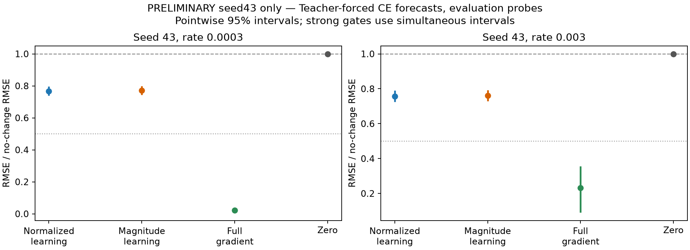
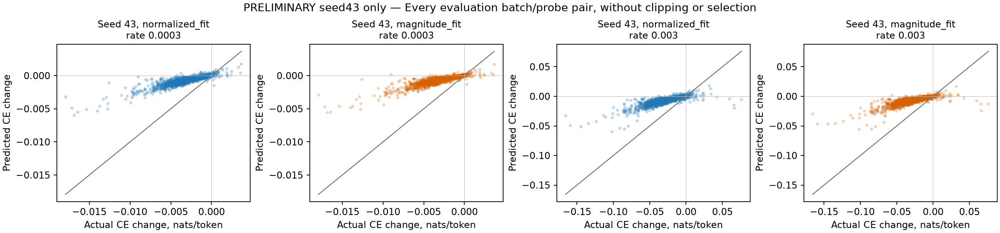
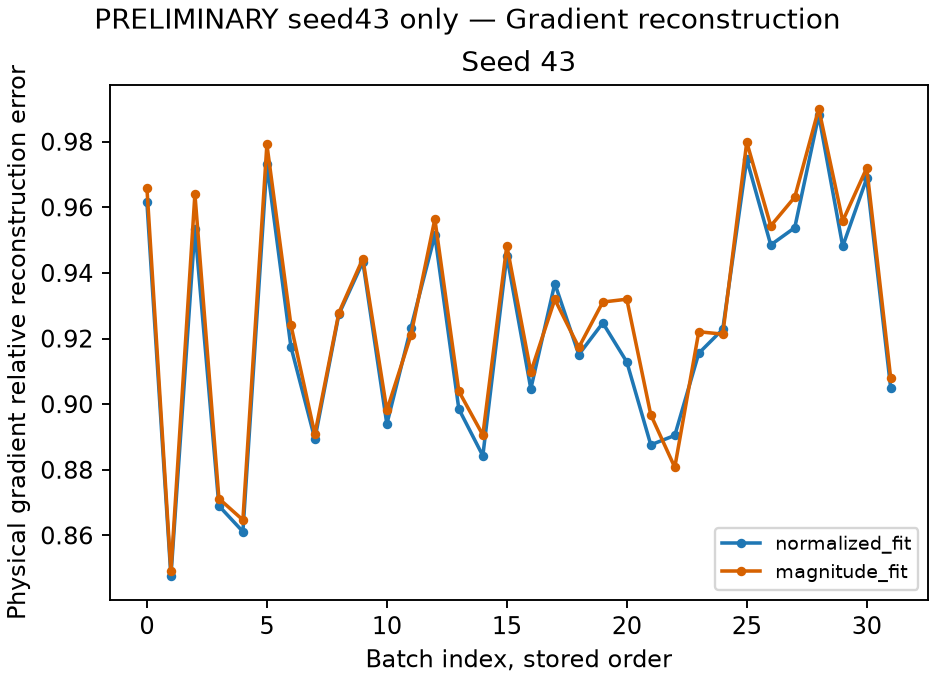

User-requested preliminary reading of completed seed43 only. A dated authorization amended the original wait-for-both-seeds reading rule. The scientific workers, forecasts, methods, rates and criteria remain frozen. Seed42 is still required before any full two-seed conclusion; no method or rate is selected from this preliminary result.
This is a development study of teacher-forced reference completion CE on reused Gemma-3 4B q/v LoRA checkpoints. It tests normalized-row dictionary learning against learning that retains fitting-row magnitudes after one global scale. Both arms encode the normalized batch direction and restore its norm. Every forecast was locked before the same actual full-gradient SGD updates. These results do not establish interpretable components or unrestricted generated behavior.
normalized_fit did not clear both rate thresholds in seed43. The full two-seed gate is unresolved.
| seed | rate | status | reasons |
|---|---|---|---|
| 43 | 0.0003 | inconclusive_signal | ["signal_floor_not_cleared", "nrmse_limit_not_cleared"] |
| 43 | 0.003 | failed_accuracy | ["nrmse_limit_not_cleared", "mae_limit_not_cleared"] |
magnitude_fit did not clear both rate thresholds in seed43. The full two-seed gate is unresolved.
| seed | rate | status | reasons |
|---|---|---|---|
| 43 | 0.0003 | inconclusive_signal | ["signal_floor_not_cleared", "nrmse_limit_not_cleared"] |
| 43 | 0.003 | failed_accuracy | ["nrmse_limit_not_cleared", "mae_limit_not_cleared"] |
The fixed gates require actual RMS change ≥0.01 nats/token, nRMSE ≤0.5 and MAE ≤0.01 nats/token with simultaneous interval bounds clearing each threshold. A weak effect is inconclusive even when absolute error is small. We used 1,000 paired batch and probe resamples. Pointwise intervals are 95%; four-comparison Bonferroni intervals are 98.75% within each seed. Undefined bootstrap draws remain visible and prevent a relative-error interval. Calibration is descriptive and supplies no fitted scale.

| seed | rate | method | rmse_nats_per_token | mae_nats_per_token | nrmse_vs_zero | actual_rms_nats_per_token | mean_predicted_change | mean_actual_change | actual_on_predicted_slope_through_origin | error_p90_nats_per_token | error_p95_nats_per_token | worst_absolute_error | direction_agreement | direction_eligible_pairs | total_pairs | predicted_negative_ce_pairs | pointwise | simultaneous |
|---|---|---|---|---|---|---|---|---|---|---|---|---|---|---|---|---|---|---|
| 43 | 0.0003 | normalized_fit | 0.0026287 | 0.0021652 | 0.76702 | 0.0034271 | -0.0006024 | -0.0027358 | 3.7142 | 0.0039626 | 0.0048436 | 0.014704 | 1 | 358 | 2048 | 0 | {"nrmse": {"interval": [0.7399944118025804, 0.7961808058484213], "undefined_replicates": 0, "family_size": 1, "marginal_coverage": 0.95}, "mae": {"interval": [0.001826037365432529, 0.0025485185329535733], "undefined_replicates": 0, "family_size": 1, "marginal_coverage": 0.95}, "actual_rms": {"interval": [0.0028069047053679726, 0.004134114250814087], "undefined_replicates": 0, "family_size": 1, "marginal_coverage": 0.95}, "mse_difference_vs_zero": {"interval": [-7.243133600647058e-06, -3.031371748388141e-06], "undefined_replicates": 0, "family_size": 1, "marginal_coverage": 0.95}} | {"nrmse": {"interval": [0.7298356075545349, 0.8013526240543505], "undefined_replicates": 0, "family_size": 4, "marginal_coverage": 0.9875}, "mae": {"interval": [0.001760441764517536, 0.00264180327998863], "undefined_replicates": 0, "family_size": 4, "marginal_coverage": 0.9875}, "actual_rms": {"interval": [0.002688967593657529, 0.0043274857515218194], "undefined_replicates": 0, "family_size": 4, "marginal_coverage": 0.9875}} |
| 43 | 0.0003 | magnitude_fit | 0.0026404 | 0.0021705 | 0.77045 | 0.0034271 | -0.0006 | -0.0027358 | 3.7726 | 0.0039942 | 0.0048253 | 0.014996 | 1 | 343 | 2048 | 0 | {"nrmse": {"interval": [0.7438670117762239, 0.7990473607122793], "undefined_replicates": 0, "family_size": 1, "marginal_coverage": 0.95}, "mae": {"interval": [0.0018305265141799502, 0.002556398205531234], "undefined_replicates": 0, "family_size": 1, "marginal_coverage": 0.95}, "actual_rms": {"interval": [0.0028069047053679726, 0.004134114250814087], "undefined_replicates": 0, "family_size": 1, "marginal_coverage": 0.95}, "mse_difference_vs_zero": {"interval": [-7.233232754833015e-06, -3.0035998007527714e-06], "undefined_replicates": 0, "family_size": 1, "marginal_coverage": 0.95}} | {"nrmse": {"interval": [0.73412574886514, 0.8040599097947396], "undefined_replicates": 0, "family_size": 4, "marginal_coverage": 0.9875}, "mae": {"interval": [0.001761825467649818, 0.0026485821516423315], "undefined_replicates": 0, "family_size": 4, "marginal_coverage": 0.9875}, "actual_rms": {"interval": [0.002688967593657529, 0.0043274857515218194], "undefined_replicates": 0, "family_size": 4, "marginal_coverage": 0.9875}} |
| 43 | 0.0003 | full_gradient | 7.4413e-05 | 2.6462e-05 | 0.021713 | 0.0034271 | -0.0027618 | -0.0027358 | 0.98909 | 4.9815e-05 | 8.6522e-05 | 0.001328 | 1 | 1786 | 2048 | 0 | {"nrmse": {"interval": [0.008188788014646023, 0.03232166186238154], "undefined_replicates": 0, "family_size": 1, "marginal_coverage": 0.95}, "mae": {"interval": [1.5692487083692853e-05, 4.090000155154247e-05], "undefined_replicates": 0, "family_size": 1, "marginal_coverage": 0.95}, "actual_rms": {"interval": [0.0028069047053679726, 0.004134114250814087], "undefined_replicates": 0, "family_size": 1, "marginal_coverage": 0.95}, "mse_difference_vs_zero": {"interval": [-1.7081504389695546e-05, -7.874825854193118e-06], "undefined_replicates": 0, "family_size": 1, "marginal_coverage": 0.95}} | {"nrmse": {"interval": [0.0074691059164500445, 0.03537610511121682], "undefined_replicates": 0, "family_size": 4, "marginal_coverage": 0.9875}, "mae": {"interval": [1.4359483539316276e-05, 4.5221111623435504e-05], "undefined_replicates": 0, "family_size": 4, "marginal_coverage": 0.9875}, "actual_rms": {"interval": [0.002688967593657529, 0.0043274857515218194], "undefined_replicates": 0, "family_size": 4, "marginal_coverage": 0.9875}} |
| 43 | 0.0003 | zero | 0.0034271 | 0.002779 | 1 | 0.0034271 | 0 | -0.0027358 | undefined | 0.0052025 | 0.0062749 | 0.017916 | undefined | 0 | 2048 | 0 | {"nrmse": {"interval": [1.0, 1.0], "undefined_replicates": 0, "family_size": 1, "marginal_coverage": 0.95}, "mae": {"interval": [0.0023095417838703723, 0.0032863529660971834], "undefined_replicates": 0, "family_size": 1, "marginal_coverage": 0.95}, "actual_rms": {"interval": [0.0028069047053679726, 0.004134114250814087], "undefined_replicates": 0, "family_size": 1, "marginal_coverage": 0.95}, "mse_difference_vs_zero": {"interval": [0.0, 0.0], "undefined_replicates": 0, "family_size": 1, "marginal_coverage": 0.95}} | {"nrmse": {"interval": [1.0, 1.0], "undefined_replicates": 0, "family_size": 4, "marginal_coverage": 0.9875}, "mae": {"interval": [0.002228134048255015, 0.0034346170067692584], "undefined_replicates": 0, "family_size": 4, "marginal_coverage": 0.9875}, "actual_rms": {"interval": [0.002688967593657529, 0.0043274857515218194], "undefined_replicates": 0, "family_size": 4, "marginal_coverage": 0.9875}} |
| 43 | 0.003 | normalized_fit | 0.023854 | 0.019763 | 0.75682 | 0.031519 | -0.006024 | -0.024937 | 3.3212 | 0.036383 | 0.043383 | 0.13357 | 0.97234 | 1880 | 2048 | 0 | {"nrmse": {"interval": [0.7243501700001374, 0.7901683630238133], "undefined_replicates": 0, "family_size": 1, "marginal_coverage": 0.95}, "mae": {"interval": [0.016820359980994296, 0.022958995876564317], "undefined_replicates": 0, "family_size": 1, "marginal_coverage": 0.95}, "actual_rms": {"interval": [0.02632937089955835, 0.03727554573233148], "undefined_replicates": 0, "family_size": 1, "marginal_coverage": 0.95}, "mse_difference_vs_zero": {"interval": [-0.0006264402475532805, -0.0002751395629038634], "undefined_replicates": 0, "family_size": 1, "marginal_coverage": 0.95}} | {"nrmse": {"interval": [0.712016277339315, 0.7959276178878847], "undefined_replicates": 0, "family_size": 4, "marginal_coverage": 0.9875}, "mae": {"interval": [0.016073122571386496, 0.023865154319118596], "undefined_replicates": 0, "family_size": 4, "marginal_coverage": 0.9875}, "actual_rms": {"interval": [0.02508912328583264, 0.03877663334653099], "undefined_replicates": 0, "family_size": 4, "marginal_coverage": 0.9875}} |
| 43 | 0.003 | magnitude_fit | 0.023984 | 0.019822 | 0.76095 | 0.031519 | -0.006 | -0.024937 | 3.3671 | 0.03639 | 0.043605 | 0.13649 | 0.98588 | 1841 | 2048 | 0 | {"nrmse": {"interval": [0.7292131837692832, 0.7932834489281991], "undefined_replicates": 0, "family_size": 1, "marginal_coverage": 0.95}, "mae": {"interval": [0.016866103489625733, 0.022982599933219064], "undefined_replicates": 0, "family_size": 1, "marginal_coverage": 0.95}, "actual_rms": {"interval": [0.02632937089955835, 0.03727554573233148], "undefined_replicates": 0, "family_size": 1, "marginal_coverage": 0.95}, "mse_difference_vs_zero": {"interval": [-0.0006153383491940853, -0.00027161494033936946], "undefined_replicates": 0, "family_size": 1, "marginal_coverage": 0.95}} | {"nrmse": {"interval": [0.7160515807646685, 0.8005337477928461], "undefined_replicates": 0, "family_size": 4, "marginal_coverage": 0.9875}, "mae": {"interval": [0.016092537388452267, 0.02399607152024079], "undefined_replicates": 0, "family_size": 4, "marginal_coverage": 0.9875}, "actual_rms": {"interval": [0.02508912328583264, 0.03877663334653099], "undefined_replicates": 0, "family_size": 4, "marginal_coverage": 0.9875}} |
| 43 | 0.003 | full_gradient | 0.007308 | 0.0027241 | 0.23186 | 0.031519 | -0.027618 | -0.024937 | 0.89162 | 0.0051836 | 0.0090523 | 0.13677 | 0.99154 | 2009 | 2048 | 0 | {"nrmse": {"interval": [0.09095455744132373, 0.3559636957633662], "undefined_replicates": 0, "family_size": 1, "marginal_coverage": 0.95}, "mae": {"interval": [0.001631854941219542, 0.004176579011986541], "undefined_replicates": 0, "family_size": 1, "marginal_coverage": 0.95}, "actual_rms": {"interval": [0.02632937089955835, 0.03727554573233148], "undefined_replicates": 0, "family_size": 1, "marginal_coverage": 0.95}, "mse_difference_vs_zero": {"interval": [-0.001295978157098661, -0.0006561951541157147], "undefined_replicates": 0, "family_size": 1, "marginal_coverage": 0.95}} | {"nrmse": {"interval": [0.08230970384266266, 0.394294203936239], "undefined_replicates": 0, "family_size": 4, "marginal_coverage": 0.9875}, "mae": {"interval": [0.0014975883745170762, 0.004730387124369901], "undefined_replicates": 0, "family_size": 4, "marginal_coverage": 0.9875}, "actual_rms": {"interval": [0.02508912328583264, 0.03877663334653099], "undefined_replicates": 0, "family_size": 4, "marginal_coverage": 0.9875}} |
| 43 | 0.003 | zero | 0.031519 | 0.025811 | 1 | 0.031519 | 0 | -0.024937 | undefined | 0.048599 | 0.058651 | 0.1657 | undefined | 0 | 2048 | 0 | {"nrmse": {"interval": [1.0, 1.0], "undefined_replicates": 0, "family_size": 1, "marginal_coverage": 0.95}, "mae": {"interval": [0.021731618481317126, 0.03021039401610324], "undefined_replicates": 0, "family_size": 1, "marginal_coverage": 0.95}, "actual_rms": {"interval": [0.02632937089955835, 0.03727554573233148], "undefined_replicates": 0, "family_size": 1, "marginal_coverage": 0.95}, "mse_difference_vs_zero": {"interval": [0.0, 0.0], "undefined_replicates": 0, "family_size": 1, "marginal_coverage": 0.95}} | {"nrmse": {"interval": [1.0, 1.0], "undefined_replicates": 0, "family_size": 4, "marginal_coverage": 0.9875}, "mae": {"interval": [0.020679454608807647, 0.03180195285854097], "undefined_replicates": 0, "family_size": 4, "marginal_coverage": 0.9875}, "actual_rms": {"interval": [0.02508912328583264, 0.03877663334653099], "undefined_replicates": 0, "family_size": 4, "marginal_coverage": 0.9875}} |

Negative MSE differences favor magnitude learning. These comparisons do not replace the fixed absolute accuracy and signal criteria.
| seed | scope | rate | magnitude_minus_normalized_mse | pointwise | simultaneous |
|---|---|---|---|---|---|
| 43 | evaluation | 0.0003 | 6.2017e-08 | {"interval": [-2.8067885199582376e-08, 1.6814156516455395e-07], "undefined_replicates": 0, "family_size": 1, "marginal_coverage": 0.95} | {"interval": [-5.4624439568339114e-08, 1.9550422843829334e-07], "undefined_replicates": 0, "family_size": 4, "marginal_coverage": 0.9875} |
| 43 | evaluation | 0.003 | 6.2208e-06 | {"interval": [-2.561337757251278e-06, 1.6810900964272138e-05], "undefined_replicates": 0, "family_size": 1, "marginal_coverage": 0.95} | {"interval": [-4.77992899438463e-06, 1.928721347176862e-05], "undefined_replicates": 0, "family_size": 4, "marginal_coverage": 0.9875} |
| 43 | calibration | 0.0003 | 3.0686e-08 | {"interval": [-1.4547458623422304e-07, 2.3843688692385994e-07], "undefined_replicates": 0, "family_size": 1, "marginal_coverage": 0.95} | {"interval": [-1.9522317244087143e-07, 3.127526998234519e-07], "undefined_replicates": 0, "family_size": 4, "marginal_coverage": 0.9875} |
| 43 | calibration | 0.003 | 3.1156e-06 | {"interval": [-1.3012401383347009e-05, 2.222973762386063e-05], "undefined_replicates": 0, "family_size": 1, "marginal_coverage": 0.95} | {"interval": [-1.753067598963115e-05, 3.054678953893184e-05], "undefined_replicates": 0, "family_size": 4, "marginal_coverage": 0.9875} |
| seed | rate | method | rmse_nats_per_token | mae_nats_per_token | nrmse_vs_zero | actual_rms_nats_per_token | pointwise |
|---|---|---|---|---|---|---|---|
| 43 | 0.0003 | normalized_fit | 0.0030175 | 0.0025309 | 0.79116 | 0.003814 | {"nrmse": {"interval": [0.7601806777394605, 0.8234826129155928], "undefined_replicates": 0, "family_size": 1, "marginal_coverage": 0.95}, "mae": {"interval": [0.0018848677584138345, 0.0031639261224033596], "undefined_replicates": 0, "family_size": 1, "marginal_coverage": 0.95}, "actual_rms": {"interval": [0.002945987763690177, 0.004716797399041622], "undefined_replicates": 0, "family_size": 1, "marginal_coverage": 0.95}, "mse_difference_vs_zero": {"interval": [-8.701782349081093e-06, -3.0465380112168628e-06], "undefined_replicates": 0, "family_size": 1, "marginal_coverage": 0.95}} |
| 43 | 0.0003 | magnitude_fit | 0.0030226 | 0.0025257 | 0.7925 | 0.003814 | {"nrmse": {"interval": [0.7623253627501811, 0.8262894997275922], "undefined_replicates": 0, "family_size": 1, "marginal_coverage": 0.95}, "mae": {"interval": [0.001874751616349161, 0.0031615039995822776], "undefined_replicates": 0, "family_size": 1, "marginal_coverage": 0.95}, "actual_rms": {"interval": [0.002945987763690177, 0.004716797399041622], "undefined_replicates": 0, "family_size": 1, "marginal_coverage": 0.95}, "mse_difference_vs_zero": {"interval": [-8.508782492143081e-06, -3.087705165615615e-06], "undefined_replicates": 0, "family_size": 1, "marginal_coverage": 0.95}} |
| 43 | 0.0003 | full_gradient | 8.1892e-05 | 3.0361e-05 | 0.021471 | 0.003814 | {"nrmse": {"interval": [0.006534198602597067, 0.03794236013240565], "undefined_replicates": 0, "family_size": 1, "marginal_coverage": 0.95}, "mae": {"interval": [1.4654353557876864e-05, 5.773058242149299e-05], "undefined_replicates": 0, "family_size": 1, "marginal_coverage": 0.95}, "actual_rms": {"interval": [0.002945987763690177, 0.004716797399041622], "undefined_replicates": 0, "family_size": 1, "marginal_coverage": 0.95}, "mse_difference_vs_zero": {"interval": [-2.2235077752918185e-05, -8.674095455655316e-06], "undefined_replicates": 0, "family_size": 1, "marginal_coverage": 0.95}} |
| 43 | 0.0003 | zero | 0.003814 | 0.0031832 | 1 | 0.003814 | {"nrmse": {"interval": [1.0, 1.0], "undefined_replicates": 0, "family_size": 1, "marginal_coverage": 0.95}, "mae": {"interval": [0.0023387982716485565, 0.004011559264472453], "undefined_replicates": 0, "family_size": 1, "marginal_coverage": 0.95}, "actual_rms": {"interval": [0.002945987763690177, 0.004716797399041622], "undefined_replicates": 0, "family_size": 1, "marginal_coverage": 0.95}, "mse_difference_vs_zero": {"interval": [0.0, 0.0], "undefined_replicates": 0, "family_size": 1, "marginal_coverage": 0.95}} |
| 43 | 0.003 | normalized_fit | 0.029163 | 0.023951 | 0.79311 | 0.036771 | {"nrmse": {"interval": [0.7468869226110765, 0.8422001634149101], "undefined_replicates": 0, "family_size": 1, "marginal_coverage": 0.95}, "mae": {"interval": [0.018097485719369692, 0.02993198407353254], "undefined_replicates": 0, "family_size": 1, "marginal_coverage": 0.95}, "actual_rms": {"interval": [0.028182937278265426, 0.04547312980245175], "undefined_replicates": 0, "family_size": 1, "marginal_coverage": 0.95}, "mse_difference_vs_zero": {"interval": [-0.0007851962309006916, -0.0002930299704792172], "undefined_replicates": 0, "family_size": 1, "marginal_coverage": 0.95}} |
| 43 | 0.003 | magnitude_fit | 0.029217 | 0.023923 | 0.79456 | 0.036771 | {"nrmse": {"interval": [0.748195303814945, 0.841421280915484], "undefined_replicates": 0, "family_size": 1, "marginal_coverage": 0.95}, "mae": {"interval": [0.018048893824863084, 0.029999066837113803], "undefined_replicates": 0, "family_size": 1, "marginal_coverage": 0.95}, "actual_rms": {"interval": [0.028182937278265426, 0.04547312980245175], "undefined_replicates": 0, "family_size": 1, "marginal_coverage": 0.95}, "mse_difference_vs_zero": {"interval": [-0.0007716049355701653, -0.0002931358536764651], "undefined_replicates": 0, "family_size": 1, "marginal_coverage": 0.95}} |
| 43 | 0.003 | full_gradient | 0.011618 | 0.0036117 | 0.31595 | 0.036771 | {"nrmse": {"interval": [0.07668790273306142, 0.5413411168512478], "undefined_replicates": 0, "family_size": 1, "marginal_coverage": 0.95}, "mae": {"interval": [0.0016103742991603125, 0.007315544460646299], "undefined_replicates": 0, "family_size": 1, "marginal_coverage": 0.95}, "actual_rms": {"interval": [0.028182937278265426, 0.04547312980245175], "undefined_replicates": 0, "family_size": 1, "marginal_coverage": 0.95}, "mse_difference_vs_zero": {"interval": [-0.0018753015351416936, -0.0007190528950677731], "undefined_replicates": 0, "family_size": 1, "marginal_coverage": 0.95}} |
| 43 | 0.003 | zero | 0.036771 | 0.030535 | 1 | 0.036771 | {"nrmse": {"interval": [1.0, 1.0], "undefined_replicates": 0, "family_size": 1, "marginal_coverage": 0.95}, "mae": {"interval": [0.023002583597099148, 0.03838555785278004], "undefined_replicates": 0, "family_size": 1, "marginal_coverage": 0.95}, "actual_rms": {"interval": [0.028182937278265426, 0.04547312980245175], "undefined_replicates": 0, "family_size": 1, "marginal_coverage": 0.95}, "mse_difference_vs_zero": {"interval": [0.0, 0.0], "undefined_replicates": 0, "family_size": 1, "marginal_coverage": 0.95}} |

| seed | magnitude_fit_seconds | worker_seconds | peak_gpu_gb | normalized_dictionary_reused | global_fitting_scale |
|---|---|---|---|---|---|
| 43 | 56.456 | 276.47 | 22.459 | True | 434.91 |
The normalized dictionary was reused. Fitting runtime is recorded for the new magnitude arm only and is not a controlled efficiency comparison.
First eight batches and first eight evaluation probes, every method, rate and available seed. Excerpts are capped at 500 characters; the input data and full per-pair numeric table are retained. No examples were chosen by error.
| batch | rate | method | probe_id | prompt_excerpt | reference_excerpt | baseline_ce | actual_ce | predicted_ce | actual_change | predicted_change | residual |
|---|---|---|---|---|---|---|---|---|---|---|---|
| 0 | 0.0003 | normalized_fit | alpaca-30270 | Create a 5-word catchphrase associated with a space mission Apollo 11 | Take one small step. | 1.1542 | 1.1496 | 1.1534 | -0.0045896 | -0.0008314 | 0.0037582 |
| 0 | 0.0003 | normalized_fit | alpaca-43899 | Create a shopping list for two people for one week. | A shopping list for two people for one week could include fruits such as apples, bananas, oranges, grapes, and strawberries; vegetables such as carrots, potatoes, tomatoes, bell peppers, and onions; grains such as rice, pasta, oats, and quinoa; dairy products such as milk, yogurt, and eggs; meat such as chicken, beef, and fish; and other items such as coffee, tea, nuts, and spices. | 1.2023 | 1.2003 | 1.2018 | -0.0019842 | -0.00052814 | 0.0014561 |
| 0 | 0.0003 | normalized_fit | alpaca-32755 | Generate a simile using the words 'rain' and 'sun'. | The rain was like the sun, shining brightly despite the clouds. | 1.493 | 1.4912 | 1.4925 | -0.0018177 | -0.00053575 | 0.001282 |
| 0 | 0.0003 | normalized_fit | alpaca-27710 | Given a list of numbers, sort them in ascneding order. 38, 12, -5, 1, 59 | -5, 1, 12, 38, 59 | 0.22464 | 0.22346 | 0.22451 | -0.0011773 | -0.00012756 | 0.0010497 |
| 0 | 0.0003 | normalized_fit | alpaca-07955 | Analyze the differences between the words 'subsequent' and 'subsequenty' | The word "subsequent" is an adjective, which means “following or afterward” or “subsequent to an event or time.” The word "subsequently" is an adverb, which means “following in order or as a consequence.” For example, "After the exam, she studied harder and got better results subsequently.” In this sentence, the word “subsequently” suggests that the action happened in the future, after the event. | 2.1111 | 2.1068 | 2.1102 | -0.0042696 | -0.00080289 | 0.0034667 |
| 0 | 0.0003 | normalized_fit | alpaca-08392 | Provide a recipe for homemade chips. | Ingredients: • 4 medium potatoes • 2 tablespoons olive oil • 1 teaspoon salt • 1 teaspoon chili powder Instructions: 1. Preheat oven to 400°F. 2. Cut potatoes into 1/8-inch thick slices. 3. Place potatoes in a bowl, drizzle with olive oil, and season with salt and chili powder. 4. Spread the potatoes evenly on a baking sheet. 5. Bake for 20 minutes, then turn the chips over and bake for an additional 20 minutes until crispy. 6. Serve and enjoy! | 0.86802 | 0.86666 | 0.86767 | -0.0013604 | -0.00035623 | 0.0010042 |
| 0 | 0.0003 | normalized_fit | alpaca-28045 | Evaluate the jigsaw puzzle with a rating from 1 to 5 The jigsaw puzzle has 500 pieces and the picture on the box looks fun to assemble. | I would rate the jigsaw puzzle a 4 out of 5. It has a good amount of pieces for a challenging yet enjoyable puzzle and the picture on the box looks interesting. | 1.2114 | 1.2095 | 1.2112 | -0.0019634 | -0.00017022 | 0.0017932 |
| 0 | 0.0003 | normalized_fit | alpaca-12006 | Summarize the given Wikipedia article. Noam Chomsky is an American linguist, philosopher, cognitive scientist, historian, social critic, and political activist. | Noam Chomsky is a renowned linguist and philosopher who has contributed to the field of cognitive science, political activism, and history. He is considered to be one of the founders of modern linguistics, and his theories have had wide-ranging impacts on the fields of psychology and philosophy. He is also an outspoken political critic with a wide range of activist endeavors. | 1.6628 | 1.6599 | 1.6622 | -0.0029751 | -0.00066507 | 0.00231 |
| 0 | 0.0003 | magnitude_fit | alpaca-30270 | Create a 5-word catchphrase associated with a space mission Apollo 11 | Take one small step. | 1.1542 | 1.1496 | 1.1531 | -0.0045896 | -0.0010739 | 0.0035156 |
| 0 | 0.0003 | magnitude_fit | alpaca-43899 | Create a shopping list for two people for one week. | A shopping list for two people for one week could include fruits such as apples, bananas, oranges, grapes, and strawberries; vegetables such as carrots, potatoes, tomatoes, bell peppers, and onions; grains such as rice, pasta, oats, and quinoa; dairy products such as milk, yogurt, and eggs; meat such as chicken, beef, and fish; and other items such as coffee, tea, nuts, and spices. | 1.2023 | 1.2003 | 1.2018 | -0.0019842 | -0.00051728 | 0.001467 |
| 0 | 0.0003 | magnitude_fit | alpaca-32755 | Generate a simile using the words 'rain' and 'sun'. | The rain was like the sun, shining brightly despite the clouds. | 1.493 | 1.4912 | 1.4926 | -0.0018177 | -0.00042211 | 0.0013956 |
| 0 | 0.0003 | magnitude_fit | alpaca-27710 | Given a list of numbers, sort them in ascneding order. 38, 12, -5, 1, 59 | -5, 1, 12, 38, 59 | 0.22464 | 0.22346 | 0.22446 | -0.0011773 | -0.00017763 | 0.00099968 |
| 0 | 0.0003 | magnitude_fit | alpaca-07955 | Analyze the differences between the words 'subsequent' and 'subsequenty' | The word "subsequent" is an adjective, which means “following or afterward” or “subsequent to an event or time.” The word "subsequently" is an adverb, which means “following in order or as a consequence.” For example, "After the exam, she studied harder and got better results subsequently.” In this sentence, the word “subsequently” suggests that the action happened in the future, after the event. | 2.1111 | 2.1068 | 2.1103 | -0.0042696 | -0.00074388 | 0.0035257 |
| 0 | 0.0003 | magnitude_fit | alpaca-08392 | Provide a recipe for homemade chips. | Ingredients: • 4 medium potatoes • 2 tablespoons olive oil • 1 teaspoon salt • 1 teaspoon chili powder Instructions: 1. Preheat oven to 400°F. 2. Cut potatoes into 1/8-inch thick slices. 3. Place potatoes in a bowl, drizzle with olive oil, and season with salt and chili powder. 4. Spread the potatoes evenly on a baking sheet. 5. Bake for 20 minutes, then turn the chips over and bake for an additional 20 minutes until crispy. 6. Serve and enjoy! | 0.86802 | 0.86666 | 0.8677 | -0.0013604 | -0.00032293 | 0.0010375 |
| 0 | 0.0003 | magnitude_fit | alpaca-28045 | Evaluate the jigsaw puzzle with a rating from 1 to 5 The jigsaw puzzle has 500 pieces and the picture on the box looks fun to assemble. | I would rate the jigsaw puzzle a 4 out of 5. It has a good amount of pieces for a challenging yet enjoyable puzzle and the picture on the box looks interesting. | 1.2114 | 1.2095 | 1.2113 | -0.0019634 | -0.00012927 | 0.0018341 |
| 0 | 0.0003 | magnitude_fit | alpaca-12006 | Summarize the given Wikipedia article. Noam Chomsky is an American linguist, philosopher, cognitive scientist, historian, social critic, and political activist. | Noam Chomsky is a renowned linguist and philosopher who has contributed to the field of cognitive science, political activism, and history. He is considered to be one of the founders of modern linguistics, and his theories have had wide-ranging impacts on the fields of psychology and philosophy. He is also an outspoken political critic with a wide range of activist endeavors. | 1.6628 | 1.6599 | 1.6622 | -0.0029751 | -0.00065152 | 0.0023236 |
| 0 | 0.0003 | full_gradient | alpaca-30270 | Create a 5-word catchphrase associated with a space mission Apollo 11 | Take one small step. | 1.1542 | 1.1496 | 1.1496 | -0.0045896 | -0.0046266 | -3.7081e-05 |
| 0 | 0.0003 | full_gradient | alpaca-43899 | Create a shopping list for two people for one week. | A shopping list for two people for one week could include fruits such as apples, bananas, oranges, grapes, and strawberries; vegetables such as carrots, potatoes, tomatoes, bell peppers, and onions; grains such as rice, pasta, oats, and quinoa; dairy products such as milk, yogurt, and eggs; meat such as chicken, beef, and fish; and other items such as coffee, tea, nuts, and spices. | 1.2023 | 1.2003 | 1.2003 | -0.0019842 | -0.001991 | -6.7144e-06 |
| 0 | 0.0003 | full_gradient | alpaca-32755 | Generate a simile using the words 'rain' and 'sun'. | The rain was like the sun, shining brightly despite the clouds. | 1.493 | 1.4912 | 1.4912 | -0.0018177 | -0.0018221 | -4.3734e-06 |
| 0 | 0.0003 | full_gradient | alpaca-27710 | Given a list of numbers, sort them in ascneding order. 38, 12, -5, 1, 59 | -5, 1, 12, 38, 59 | 0.22464 | 0.22346 | 0.22346 | -0.0011773 | -0.0011766 | 7.3556e-07 |
| 0 | 0.0003 | full_gradient | alpaca-07955 | Analyze the differences between the words 'subsequent' and 'subsequenty' | The word "subsequent" is an adjective, which means “following or afterward” or “subsequent to an event or time.” The word "subsequently" is an adverb, which means “following in order or as a consequence.” For example, "After the exam, she studied harder and got better results subsequently.” In this sentence, the word “subsequently” suggests that the action happened in the future, after the event. | 2.1111 | 2.1068 | 2.1068 | -0.0042696 | -0.0042868 | -1.7226e-05 |
| 0 | 0.0003 | full_gradient | alpaca-08392 | Provide a recipe for homemade chips. | Ingredients: • 4 medium potatoes • 2 tablespoons olive oil • 1 teaspoon salt • 1 teaspoon chili powder Instructions: 1. Preheat oven to 400°F. 2. Cut potatoes into 1/8-inch thick slices. 3. Place potatoes in a bowl, drizzle with olive oil, and season with salt and chili powder. 4. Spread the potatoes evenly on a baking sheet. 5. Bake for 20 minutes, then turn the chips over and bake for an additional 20 minutes until crispy. 6. Serve and enjoy! | 0.86802 | 0.86666 | 0.86665 | -0.0013604 | -0.0013707 | -1.0309e-05 |
| 0 | 0.0003 | full_gradient | alpaca-28045 | Evaluate the jigsaw puzzle with a rating from 1 to 5 The jigsaw puzzle has 500 pieces and the picture on the box looks fun to assemble. | I would rate the jigsaw puzzle a 4 out of 5. It has a good amount of pieces for a challenging yet enjoyable puzzle and the picture on the box looks interesting. | 1.2114 | 1.2095 | 1.2094 | -0.0019634 | -0.0019681 | -4.7531e-06 |
| 0 | 0.0003 | full_gradient | alpaca-12006 | Summarize the given Wikipedia article. Noam Chomsky is an American linguist, philosopher, cognitive scientist, historian, social critic, and political activist. | Noam Chomsky is a renowned linguist and philosopher who has contributed to the field of cognitive science, political activism, and history. He is considered to be one of the founders of modern linguistics, and his theories have had wide-ranging impacts on the fields of psychology and philosophy. He is also an outspoken political critic with a wide range of activist endeavors. | 1.6628 | 1.6599 | 1.6599 | -0.0029751 | -0.0029833 | -8.1966e-06 |
| 0 | 0.0003 | zero | alpaca-30270 | Create a 5-word catchphrase associated with a space mission Apollo 11 | Take one small step. | 1.1542 | 1.1496 | 1.1542 | -0.0045896 | -0 | 0.0045896 |
| 0 | 0.0003 | zero | alpaca-43899 | Create a shopping list for two people for one week. | A shopping list for two people for one week could include fruits such as apples, bananas, oranges, grapes, and strawberries; vegetables such as carrots, potatoes, tomatoes, bell peppers, and onions; grains such as rice, pasta, oats, and quinoa; dairy products such as milk, yogurt, and eggs; meat such as chicken, beef, and fish; and other items such as coffee, tea, nuts, and spices. | 1.2023 | 1.2003 | 1.2023 | -0.0019842 | -0 | 0.0019842 |
| 0 | 0.0003 | zero | alpaca-32755 | Generate a simile using the words 'rain' and 'sun'. | The rain was like the sun, shining brightly despite the clouds. | 1.493 | 1.4912 | 1.493 | -0.0018177 | -0 | 0.0018177 |
| 0 | 0.0003 | zero | alpaca-27710 | Given a list of numbers, sort them in ascneding order. 38, 12, -5, 1, 59 | -5, 1, 12, 38, 59 | 0.22464 | 0.22346 | 0.22464 | -0.0011773 | -0 | 0.0011773 |
| 0 | 0.0003 | zero | alpaca-07955 | Analyze the differences between the words 'subsequent' and 'subsequenty' | The word "subsequent" is an adjective, which means “following or afterward” or “subsequent to an event or time.” The word "subsequently" is an adverb, which means “following in order or as a consequence.” For example, "After the exam, she studied harder and got better results subsequently.” In this sentence, the word “subsequently” suggests that the action happened in the future, after the event. | 2.1111 | 2.1068 | 2.1111 | -0.0042696 | -0 | 0.0042696 |
| 0 | 0.0003 | zero | alpaca-08392 | Provide a recipe for homemade chips. | Ingredients: • 4 medium potatoes • 2 tablespoons olive oil • 1 teaspoon salt • 1 teaspoon chili powder Instructions: 1. Preheat oven to 400°F. 2. Cut potatoes into 1/8-inch thick slices. 3. Place potatoes in a bowl, drizzle with olive oil, and season with salt and chili powder. 4. Spread the potatoes evenly on a baking sheet. 5. Bake for 20 minutes, then turn the chips over and bake for an additional 20 minutes until crispy. 6. Serve and enjoy! | 0.86802 | 0.86666 | 0.86802 | -0.0013604 | -0 | 0.0013604 |
| 0 | 0.0003 | zero | alpaca-28045 | Evaluate the jigsaw puzzle with a rating from 1 to 5 The jigsaw puzzle has 500 pieces and the picture on the box looks fun to assemble. | I would rate the jigsaw puzzle a 4 out of 5. It has a good amount of pieces for a challenging yet enjoyable puzzle and the picture on the box looks interesting. | 1.2114 | 1.2095 | 1.2114 | -0.0019634 | -0 | 0.0019634 |
| 0 | 0.0003 | zero | alpaca-12006 | Summarize the given Wikipedia article. Noam Chomsky is an American linguist, philosopher, cognitive scientist, historian, social critic, and political activist. | Noam Chomsky is a renowned linguist and philosopher who has contributed to the field of cognitive science, political activism, and history. He is considered to be one of the founders of modern linguistics, and his theories have had wide-ranging impacts on the fields of psychology and philosophy. He is also an outspoken political critic with a wide range of activist endeavors. | 1.6628 | 1.6599 | 1.6628 | -0.0029751 | -0 | 0.0029751 |
| 0 | 0.003 | normalized_fit | alpaca-30270 | Create a 5-word catchphrase associated with a space mission Apollo 11 | Take one small step. | 1.1542 | 1.1119 | 1.1459 | -0.042314 | -0.008314 | 0.034 |
| 0 | 0.003 | normalized_fit | alpaca-43899 | Create a shopping list for two people for one week. | A shopping list for two people for one week could include fruits such as apples, bananas, oranges, grapes, and strawberries; vegetables such as carrots, potatoes, tomatoes, bell peppers, and onions; grains such as rice, pasta, oats, and quinoa; dairy products such as milk, yogurt, and eggs; meat such as chicken, beef, and fish; and other items such as coffee, tea, nuts, and spices. | 1.2023 | 1.1832 | 1.197 | -0.019081 | -0.0052814 | 0.013799 |
| 0 | 0.003 | normalized_fit | alpaca-32755 | Generate a simile using the words 'rain' and 'sun'. | The rain was like the sun, shining brightly despite the clouds. | 1.493 | 1.4753 | 1.4877 | -0.017715 | -0.0053575 | 0.012358 |
| 0 | 0.003 | normalized_fit | alpaca-27710 | Given a list of numbers, sort them in ascneding order. 38, 12, -5, 1, 59 | -5, 1, 12, 38, 59 | 0.22464 | 0.21296 | 0.22336 | -0.011677 | -0.0012756 | 0.010401 |
| 0 | 0.003 | normalized_fit | alpaca-07955 | Analyze the differences between the words 'subsequent' and 'subsequenty' | The word "subsequent" is an adjective, which means “following or afterward” or “subsequent to an event or time.” The word "subsequently" is an adverb, which means “following in order or as a consequence.” For example, "After the exam, she studied harder and got better results subsequently.” In this sentence, the word “subsequently” suggests that the action happened in the future, after the event. | 2.1111 | 2.0696 | 2.103 | -0.041414 | -0.0080289 | 0.033385 |
| 0 | 0.003 | normalized_fit | alpaca-08392 | Provide a recipe for homemade chips. | Ingredients: • 4 medium potatoes • 2 tablespoons olive oil • 1 teaspoon salt • 1 teaspoon chili powder Instructions: 1. Preheat oven to 400°F. 2. Cut potatoes into 1/8-inch thick slices. 3. Place potatoes in a bowl, drizzle with olive oil, and season with salt and chili powder. 4. Spread the potatoes evenly on a baking sheet. 5. Bake for 20 minutes, then turn the chips over and bake for an additional 20 minutes until crispy. 6. Serve and enjoy! | 0.86802 | 0.85514 | 0.86446 | -0.012883 | -0.0035623 | 0.0093209 |
| 0 | 0.003 | normalized_fit | alpaca-28045 | Evaluate the jigsaw puzzle with a rating from 1 to 5 The jigsaw puzzle has 500 pieces and the picture on the box looks fun to assemble. | I would rate the jigsaw puzzle a 4 out of 5. It has a good amount of pieces for a challenging yet enjoyable puzzle and the picture on the box looks interesting. | 1.2114 | 1.1922 | 1.2097 | -0.019208 | -0.0017022 | 0.017506 |
| 0 | 0.003 | normalized_fit | alpaca-12006 | Summarize the given Wikipedia article. Noam Chomsky is an American linguist, philosopher, cognitive scientist, historian, social critic, and political activist. | Noam Chomsky is a renowned linguist and philosopher who has contributed to the field of cognitive science, political activism, and history. He is considered to be one of the founders of modern linguistics, and his theories have had wide-ranging impacts on the fields of psychology and philosophy. He is also an outspoken political critic with a wide range of activist endeavors. | 1.6628 | 1.6339 | 1.6562 | -0.028911 | -0.0066507 | 0.02226 |
| 0 | 0.003 | magnitude_fit | alpaca-30270 | Create a 5-word catchphrase associated with a space mission Apollo 11 | Take one small step. | 1.1542 | 1.1119 | 1.1435 | -0.042314 | -0.010739 | 0.031575 |
| 0 | 0.003 | magnitude_fit | alpaca-43899 | Create a shopping list for two people for one week. | A shopping list for two people for one week could include fruits such as apples, bananas, oranges, grapes, and strawberries; vegetables such as carrots, potatoes, tomatoes, bell peppers, and onions; grains such as rice, pasta, oats, and quinoa; dairy products such as milk, yogurt, and eggs; meat such as chicken, beef, and fish; and other items such as coffee, tea, nuts, and spices. | 1.2023 | 1.1832 | 1.1971 | -0.019081 | -0.0051728 | 0.013908 |
| 0 | 0.003 | magnitude_fit | alpaca-32755 | Generate a simile using the words 'rain' and 'sun'. | The rain was like the sun, shining brightly despite the clouds. | 1.493 | 1.4753 | 1.4888 | -0.017715 | -0.0042211 | 0.013494 |
| 0 | 0.003 | magnitude_fit | alpaca-27710 | Given a list of numbers, sort them in ascneding order. 38, 12, -5, 1, 59 | -5, 1, 12, 38, 59 | 0.22464 | 0.21296 | 0.22286 | -0.011677 | -0.0017763 | 0.0099008 |
| 0 | 0.003 | magnitude_fit | alpaca-07955 | Analyze the differences between the words 'subsequent' and 'subsequenty' | The word "subsequent" is an adjective, which means “following or afterward” or “subsequent to an event or time.” The word "subsequently" is an adverb, which means “following in order or as a consequence.” For example, "After the exam, she studied harder and got better results subsequently.” In this sentence, the word “subsequently” suggests that the action happened in the future, after the event. | 2.1111 | 2.0696 | 2.1036 | -0.041414 | -0.0074388 | 0.033975 |
| 0 | 0.003 | magnitude_fit | alpaca-08392 | Provide a recipe for homemade chips. | Ingredients: • 4 medium potatoes • 2 tablespoons olive oil • 1 teaspoon salt • 1 teaspoon chili powder Instructions: 1. Preheat oven to 400°F. 2. Cut potatoes into 1/8-inch thick slices. 3. Place potatoes in a bowl, drizzle with olive oil, and season with salt and chili powder. 4. Spread the potatoes evenly on a baking sheet. 5. Bake for 20 minutes, then turn the chips over and bake for an additional 20 minutes until crispy. 6. Serve and enjoy! | 0.86802 | 0.85514 | 0.86479 | -0.012883 | -0.0032293 | 0.0096539 |
| 0 | 0.003 | magnitude_fit | alpaca-28045 | Evaluate the jigsaw puzzle with a rating from 1 to 5 The jigsaw puzzle has 500 pieces and the picture on the box looks fun to assemble. | I would rate the jigsaw puzzle a 4 out of 5. It has a good amount of pieces for a challenging yet enjoyable puzzle and the picture on the box looks interesting. | 1.2114 | 1.1922 | 1.2101 | -0.019208 | -0.0012927 | 0.017916 |
| 0 | 0.003 | magnitude_fit | alpaca-12006 | Summarize the given Wikipedia article. Noam Chomsky is an American linguist, philosopher, cognitive scientist, historian, social critic, and political activist. | Noam Chomsky is a renowned linguist and philosopher who has contributed to the field of cognitive science, political activism, and history. He is considered to be one of the founders of modern linguistics, and his theories have had wide-ranging impacts on the fields of psychology and philosophy. He is also an outspoken political critic with a wide range of activist endeavors. | 1.6628 | 1.6339 | 1.6563 | -0.028911 | -0.0065152 | 0.022396 |
| 0 | 0.003 | full_gradient | alpaca-30270 | Create a 5-word catchphrase associated with a space mission Apollo 11 | Take one small step. | 1.1542 | 1.1119 | 1.1079 | -0.042314 | -0.046266 | -0.0039523 |
| 0 | 0.003 | full_gradient | alpaca-43899 | Create a shopping list for two people for one week. | A shopping list for two people for one week could include fruits such as apples, bananas, oranges, grapes, and strawberries; vegetables such as carrots, potatoes, tomatoes, bell peppers, and onions; grains such as rice, pasta, oats, and quinoa; dairy products such as milk, yogurt, and eggs; meat such as chicken, beef, and fish; and other items such as coffee, tea, nuts, and spices. | 1.2023 | 1.1832 | 1.1824 | -0.019081 | -0.01991 | -0.00082889 |
| 0 | 0.003 | full_gradient | alpaca-32755 | Generate a simile using the words 'rain' and 'sun'. | The rain was like the sun, shining brightly despite the clouds. | 1.493 | 1.4753 | 1.4748 | -0.017715 | -0.018221 | -0.00050555 |
| 0 | 0.003 | full_gradient | alpaca-27710 | Given a list of numbers, sort them in ascneding order. 38, 12, -5, 1, 59 | -5, 1, 12, 38, 59 | 0.22464 | 0.21296 | 0.21287 | -0.011677 | -0.011766 | -8.8682e-05 |
| 0 | 0.003 | full_gradient | alpaca-07955 | Analyze the differences between the words 'subsequent' and 'subsequenty' | The word "subsequent" is an adjective, which means “following or afterward” or “subsequent to an event or time.” The word "subsequently" is an adverb, which means “following in order or as a consequence.” For example, "After the exam, she studied harder and got better results subsequently.” In this sentence, the word “subsequently” suggests that the action happened in the future, after the event. | 2.1111 | 2.0696 | 2.0682 | -0.041414 | -0.042868 | -0.0014542 |
| 0 | 0.003 | full_gradient | alpaca-08392 | Provide a recipe for homemade chips. | Ingredients: • 4 medium potatoes • 2 tablespoons olive oil • 1 teaspoon salt • 1 teaspoon chili powder Instructions: 1. Preheat oven to 400°F. 2. Cut potatoes into 1/8-inch thick slices. 3. Place potatoes in a bowl, drizzle with olive oil, and season with salt and chili powder. 4. Spread the potatoes evenly on a baking sheet. 5. Bake for 20 minutes, then turn the chips over and bake for an additional 20 minutes until crispy. 6. Serve and enjoy! | 0.86802 | 0.85514 | 0.85432 | -0.012883 | -0.013707 | -0.00082407 |
| 0 | 0.003 | full_gradient | alpaca-28045 | Evaluate the jigsaw puzzle with a rating from 1 to 5 The jigsaw puzzle has 500 pieces and the picture on the box looks fun to assemble. | I would rate the jigsaw puzzle a 4 out of 5. It has a good amount of pieces for a challenging yet enjoyable puzzle and the picture on the box looks interesting. | 1.2114 | 1.1922 | 1.1917 | -0.019208 | -0.019681 | -0.00047311 |
| 0 | 0.003 | full_gradient | alpaca-12006 | Summarize the given Wikipedia article. Noam Chomsky is an American linguist, philosopher, cognitive scientist, historian, social critic, and political activist. | Noam Chomsky is a renowned linguist and philosopher who has contributed to the field of cognitive science, political activism, and history. He is considered to be one of the founders of modern linguistics, and his theories have had wide-ranging impacts on the fields of psychology and philosophy. He is also an outspoken political critic with a wide range of activist endeavors. | 1.6628 | 1.6339 | 1.633 | -0.028911 | -0.029833 | -0.00092227 |
| 0 | 0.003 | zero | alpaca-30270 | Create a 5-word catchphrase associated with a space mission Apollo 11 | Take one small step. | 1.1542 | 1.1119 | 1.1542 | -0.042314 | -0 | 0.042314 |
| 0 | 0.003 | zero | alpaca-43899 | Create a shopping list for two people for one week. | A shopping list for two people for one week could include fruits such as apples, bananas, oranges, grapes, and strawberries; vegetables such as carrots, potatoes, tomatoes, bell peppers, and onions; grains such as rice, pasta, oats, and quinoa; dairy products such as milk, yogurt, and eggs; meat such as chicken, beef, and fish; and other items such as coffee, tea, nuts, and spices. | 1.2023 | 1.1832 | 1.2023 | -0.019081 | -0 | 0.019081 |
| 0 | 0.003 | zero | alpaca-32755 | Generate a simile using the words 'rain' and 'sun'. | The rain was like the sun, shining brightly despite the clouds. | 1.493 | 1.4753 | 1.493 | -0.017715 | -0 | 0.017715 |
| 0 | 0.003 | zero | alpaca-27710 | Given a list of numbers, sort them in ascneding order. 38, 12, -5, 1, 59 | -5, 1, 12, 38, 59 | 0.22464 | 0.21296 | 0.22464 | -0.011677 | -0 | 0.011677 |
| 0 | 0.003 | zero | alpaca-07955 | Analyze the differences between the words 'subsequent' and 'subsequenty' | The word "subsequent" is an adjective, which means “following or afterward” or “subsequent to an event or time.” The word "subsequently" is an adverb, which means “following in order or as a consequence.” For example, "After the exam, she studied harder and got better results subsequently.” In this sentence, the word “subsequently” suggests that the action happened in the future, after the event. | 2.1111 | 2.0696 | 2.1111 | -0.041414 | -0 | 0.041414 |
| 0 | 0.003 | zero | alpaca-08392 | Provide a recipe for homemade chips. | Ingredients: • 4 medium potatoes • 2 tablespoons olive oil • 1 teaspoon salt • 1 teaspoon chili powder Instructions: 1. Preheat oven to 400°F. 2. Cut potatoes into 1/8-inch thick slices. 3. Place potatoes in a bowl, drizzle with olive oil, and season with salt and chili powder. 4. Spread the potatoes evenly on a baking sheet. 5. Bake for 20 minutes, then turn the chips over and bake for an additional 20 minutes until crispy. 6. Serve and enjoy! | 0.86802 | 0.85514 | 0.86802 | -0.012883 | -0 | 0.012883 |
| 0 | 0.003 | zero | alpaca-28045 | Evaluate the jigsaw puzzle with a rating from 1 to 5 The jigsaw puzzle has 500 pieces and the picture on the box looks fun to assemble. | I would rate the jigsaw puzzle a 4 out of 5. It has a good amount of pieces for a challenging yet enjoyable puzzle and the picture on the box looks interesting. | 1.2114 | 1.1922 | 1.2114 | -0.019208 | -0 | 0.019208 |
| 0 | 0.003 | zero | alpaca-12006 | Summarize the given Wikipedia article. Noam Chomsky is an American linguist, philosopher, cognitive scientist, historian, social critic, and political activist. | Noam Chomsky is a renowned linguist and philosopher who has contributed to the field of cognitive science, political activism, and history. He is considered to be one of the founders of modern linguistics, and his theories have had wide-ranging impacts on the fields of psychology and philosophy. He is also an outspoken political critic with a wide range of activist endeavors. | 1.6628 | 1.6339 | 1.6628 | -0.028911 | -0 | 0.028911 |
| 1 | 0.0003 | normalized_fit | alpaca-30270 | Create a 5-word catchphrase associated with a space mission Apollo 11 | Take one small step. | 1.1542 | 1.146 | 1.1509 | -0.0081991 | -0.003307 | 0.0048921 |
| 1 | 0.0003 | normalized_fit | alpaca-43899 | Create a shopping list for two people for one week. | A shopping list for two people for one week could include fruits such as apples, bananas, oranges, grapes, and strawberries; vegetables such as carrots, potatoes, tomatoes, bell peppers, and onions; grains such as rice, pasta, oats, and quinoa; dairy products such as milk, yogurt, and eggs; meat such as chicken, beef, and fish; and other items such as coffee, tea, nuts, and spices. | 1.2023 | 1.1994 | 1.2016 | -0.0029125 | -0.00069812 | 0.0022144 |
| 1 | 0.0003 | normalized_fit | alpaca-32755 | Generate a simile using the words 'rain' and 'sun'. | The rain was like the sun, shining brightly despite the clouds. | 1.493 | 1.49 | 1.4923 | -0.0030514 | -0.00069308 | 0.0023583 |
| 1 | 0.0003 | normalized_fit | alpaca-27710 | Given a list of numbers, sort them in ascneding order. 38, 12, -5, 1, 59 | -5, 1, 12, 38, 59 | 0.22464 | 0.2239 | 0.22453 | -0.00074516 | -0.00010892 | 0.00063624 |
| 1 | 0.0003 | normalized_fit | alpaca-07955 | Analyze the differences between the words 'subsequent' and 'subsequenty' | The word "subsequent" is an adjective, which means “following or afterward” or “subsequent to an event or time.” The word "subsequently" is an adverb, which means “following in order or as a consequence.” For example, "After the exam, she studied harder and got better results subsequently.” In this sentence, the word “subsequently” suggests that the action happened in the future, after the event. | 2.1111 | 2.1045 | 2.1091 | -0.0065024 | -0.0019704 | 0.004532 |
| 1 | 0.0003 | normalized_fit | alpaca-08392 | Provide a recipe for homemade chips. | Ingredients: • 4 medium potatoes • 2 tablespoons olive oil • 1 teaspoon salt • 1 teaspoon chili powder Instructions: 1. Preheat oven to 400°F. 2. Cut potatoes into 1/8-inch thick slices. 3. Place potatoes in a bowl, drizzle with olive oil, and season with salt and chili powder. 4. Spread the potatoes evenly on a baking sheet. 5. Bake for 20 minutes, then turn the chips over and bake for an additional 20 minutes until crispy. 6. Serve and enjoy! | 0.86802 | 0.86547 | 0.86727 | -0.0025537 | -0.00075395 | 0.0017998 |
| 1 | 0.0003 | normalized_fit | alpaca-28045 | Evaluate the jigsaw puzzle with a rating from 1 to 5 The jigsaw puzzle has 500 pieces and the picture on the box looks fun to assemble. | I would rate the jigsaw puzzle a 4 out of 5. It has a good amount of pieces for a challenging yet enjoyable puzzle and the picture on the box looks interesting. | 1.2114 | 1.2062 | 1.2101 | -0.0052345 | -0.0012994 | 0.003935 |
| 1 | 0.0003 | normalized_fit | alpaca-12006 | Summarize the given Wikipedia article. Noam Chomsky is an American linguist, philosopher, cognitive scientist, historian, social critic, and political activist. | Noam Chomsky is a renowned linguist and philosopher who has contributed to the field of cognitive science, political activism, and history. He is considered to be one of the founders of modern linguistics, and his theories have had wide-ranging impacts on the fields of psychology and philosophy. He is also an outspoken political critic with a wide range of activist endeavors. | 1.6628 | 1.6573 | 1.6612 | -0.0055425 | -0.0016592 | 0.0038833 |
| 1 | 0.0003 | magnitude_fit | alpaca-30270 | Create a 5-word catchphrase associated with a space mission Apollo 11 | Take one small step. | 1.1542 | 1.146 | 1.1509 | -0.0081991 | -0.0032855 | 0.0049136 |
| 1 | 0.0003 | magnitude_fit | alpaca-43899 | Create a shopping list for two people for one week. | A shopping list for two people for one week could include fruits such as apples, bananas, oranges, grapes, and strawberries; vegetables such as carrots, potatoes, tomatoes, bell peppers, and onions; grains such as rice, pasta, oats, and quinoa; dairy products such as milk, yogurt, and eggs; meat such as chicken, beef, and fish; and other items such as coffee, tea, nuts, and spices. | 1.2023 | 1.1994 | 1.2015 | -0.0029125 | -0.00078776 | 0.0021248 |
| 1 | 0.0003 | magnitude_fit | alpaca-32755 | Generate a simile using the words 'rain' and 'sun'. | The rain was like the sun, shining brightly despite the clouds. | 1.493 | 1.49 | 1.4922 | -0.0030514 | -0.0007633 | 0.0022881 |
| 1 | 0.0003 | magnitude_fit | alpaca-27710 | Given a list of numbers, sort them in ascneding order. 38, 12, -5, 1, 59 | -5, 1, 12, 38, 59 | 0.22464 | 0.2239 | 0.2246 | -0.00074516 | -4.0587e-05 | 0.00070458 |
| 1 | 0.0003 | magnitude_fit | alpaca-07955 | Analyze the differences between the words 'subsequent' and 'subsequenty' | The word "subsequent" is an adjective, which means “following or afterward” or “subsequent to an event or time.” The word "subsequently" is an adverb, which means “following in order or as a consequence.” For example, "After the exam, she studied harder and got better results subsequently.” In this sentence, the word “subsequently” suggests that the action happened in the future, after the event. | 2.1111 | 2.1045 | 2.109 | -0.0065024 | -0.0020525 | 0.0044499 |
| 1 | 0.0003 | magnitude_fit | alpaca-08392 | Provide a recipe for homemade chips. | Ingredients: • 4 medium potatoes • 2 tablespoons olive oil • 1 teaspoon salt • 1 teaspoon chili powder Instructions: 1. Preheat oven to 400°F. 2. Cut potatoes into 1/8-inch thick slices. 3. Place potatoes in a bowl, drizzle with olive oil, and season with salt and chili powder. 4. Spread the potatoes evenly on a baking sheet. 5. Bake for 20 minutes, then turn the chips over and bake for an additional 20 minutes until crispy. 6. Serve and enjoy! | 0.86802 | 0.86547 | 0.86724 | -0.0025537 | -0.00077903 | 0.0017747 |
| 1 | 0.0003 | magnitude_fit | alpaca-28045 | Evaluate the jigsaw puzzle with a rating from 1 to 5 The jigsaw puzzle has 500 pieces and the picture on the box looks fun to assemble. | I would rate the jigsaw puzzle a 4 out of 5. It has a good amount of pieces for a challenging yet enjoyable puzzle and the picture on the box looks interesting. | 1.2114 | 1.2062 | 1.2102 | -0.0052345 | -0.0012074 | 0.0040271 |
| 1 | 0.0003 | magnitude_fit | alpaca-12006 | Summarize the given Wikipedia article. Noam Chomsky is an American linguist, philosopher, cognitive scientist, historian, social critic, and political activist. | Noam Chomsky is a renowned linguist and philosopher who has contributed to the field of cognitive science, political activism, and history. He is considered to be one of the founders of modern linguistics, and his theories have had wide-ranging impacts on the fields of psychology and philosophy. He is also an outspoken political critic with a wide range of activist endeavors. | 1.6628 | 1.6573 | 1.6611 | -0.0055425 | -0.0016961 | 0.0038464 |
| 1 | 0.0003 | full_gradient | alpaca-30270 | Create a 5-word catchphrase associated with a space mission Apollo 11 | Take one small step. | 1.1542 | 1.146 | 1.1458 | -0.0081991 | -0.008388 | -0.00018894 |
| 1 | 0.0003 | full_gradient | alpaca-43899 | Create a shopping list for two people for one week. | A shopping list for two people for one week could include fruits such as apples, bananas, oranges, grapes, and strawberries; vegetables such as carrots, potatoes, tomatoes, bell peppers, and onions; grains such as rice, pasta, oats, and quinoa; dairy products such as milk, yogurt, and eggs; meat such as chicken, beef, and fish; and other items such as coffee, tea, nuts, and spices. | 1.2023 | 1.1994 | 1.1994 | -0.0029125 | -0.0029317 | -1.9165e-05 |
| 1 | 0.0003 | full_gradient | alpaca-32755 | Generate a simile using the words 'rain' and 'sun'. | The rain was like the sun, shining brightly despite the clouds. | 1.493 | 1.49 | 1.4899 | -0.0030514 | -0.0030809 | -2.9541e-05 |
| 1 | 0.0003 | full_gradient | alpaca-27710 | Given a list of numbers, sort them in ascneding order. 38, 12, -5, 1, 59 | -5, 1, 12, 38, 59 | 0.22464 | 0.2239 | 0.22387 | -0.00074516 | -0.00076796 | -2.2802e-05 |
| 1 | 0.0003 | full_gradient | alpaca-07955 | Analyze the differences between the words 'subsequent' and 'subsequenty' | The word "subsequent" is an adjective, which means “following or afterward” or “subsequent to an event or time.” The word "subsequently" is an adverb, which means “following in order or as a consequence.” For example, "After the exam, she studied harder and got better results subsequently.” In this sentence, the word “subsequently” suggests that the action happened in the future, after the event. | 2.1111 | 2.1045 | 2.1045 | -0.0065024 | -0.0065525 | -5.015e-05 |
| 1 | 0.0003 | full_gradient | alpaca-08392 | Provide a recipe for homemade chips. | Ingredients: • 4 medium potatoes • 2 tablespoons olive oil • 1 teaspoon salt • 1 teaspoon chili powder Instructions: 1. Preheat oven to 400°F. 2. Cut potatoes into 1/8-inch thick slices. 3. Place potatoes in a bowl, drizzle with olive oil, and season with salt and chili powder. 4. Spread the potatoes evenly on a baking sheet. 5. Bake for 20 minutes, then turn the chips over and bake for an additional 20 minutes until crispy. 6. Serve and enjoy! | 0.86802 | 0.86547 | 0.86545 | -0.0025537 | -0.0025773 | -2.3627e-05 |
| 1 | 0.0003 | full_gradient | alpaca-28045 | Evaluate the jigsaw puzzle with a rating from 1 to 5 The jigsaw puzzle has 500 pieces and the picture on the box looks fun to assemble. | I would rate the jigsaw puzzle a 4 out of 5. It has a good amount of pieces for a challenging yet enjoyable puzzle and the picture on the box looks interesting. | 1.2114 | 1.2062 | 1.2062 | -0.0052345 | -0.0052576 | -2.3097e-05 |
| 1 | 0.0003 | full_gradient | alpaca-12006 | Summarize the given Wikipedia article. Noam Chomsky is an American linguist, philosopher, cognitive scientist, historian, social critic, and political activist. | Noam Chomsky is a renowned linguist and philosopher who has contributed to the field of cognitive science, political activism, and history. He is considered to be one of the founders of modern linguistics, and his theories have had wide-ranging impacts on the fields of psychology and philosophy. He is also an outspoken political critic with a wide range of activist endeavors. | 1.6628 | 1.6573 | 1.6572 | -0.0055425 | -0.0055868 | -4.4249e-05 |
| 1 | 0.0003 | zero | alpaca-30270 | Create a 5-word catchphrase associated with a space mission Apollo 11 | Take one small step. | 1.1542 | 1.146 | 1.1542 | -0.0081991 | -0 | 0.0081991 |
| 1 | 0.0003 | zero | alpaca-43899 | Create a shopping list for two people for one week. | A shopping list for two people for one week could include fruits such as apples, bananas, oranges, grapes, and strawberries; vegetables such as carrots, potatoes, tomatoes, bell peppers, and onions; grains such as rice, pasta, oats, and quinoa; dairy products such as milk, yogurt, and eggs; meat such as chicken, beef, and fish; and other items such as coffee, tea, nuts, and spices. | 1.2023 | 1.1994 | 1.2023 | -0.0029125 | -0 | 0.0029125 |
| 1 | 0.0003 | zero | alpaca-32755 | Generate a simile using the words 'rain' and 'sun'. | The rain was like the sun, shining brightly despite the clouds. | 1.493 | 1.49 | 1.493 | -0.0030514 | -0 | 0.0030514 |
| 1 | 0.0003 | zero | alpaca-27710 | Given a list of numbers, sort them in ascneding order. 38, 12, -5, 1, 59 | -5, 1, 12, 38, 59 | 0.22464 | 0.2239 | 0.22464 | -0.00074516 | -0 | 0.00074516 |
| 1 | 0.0003 | zero | alpaca-07955 | Analyze the differences between the words 'subsequent' and 'subsequenty' | The word "subsequent" is an adjective, which means “following or afterward” or “subsequent to an event or time.” The word "subsequently" is an adverb, which means “following in order or as a consequence.” For example, "After the exam, she studied harder and got better results subsequently.” In this sentence, the word “subsequently” suggests that the action happened in the future, after the event. | 2.1111 | 2.1045 | 2.1111 | -0.0065024 | -0 | 0.0065024 |
| 1 | 0.0003 | zero | alpaca-08392 | Provide a recipe for homemade chips. | Ingredients: • 4 medium potatoes • 2 tablespoons olive oil • 1 teaspoon salt • 1 teaspoon chili powder Instructions: 1. Preheat oven to 400°F. 2. Cut potatoes into 1/8-inch thick slices. 3. Place potatoes in a bowl, drizzle with olive oil, and season with salt and chili powder. 4. Spread the potatoes evenly on a baking sheet. 5. Bake for 20 minutes, then turn the chips over and bake for an additional 20 minutes until crispy. 6. Serve and enjoy! | 0.86802 | 0.86547 | 0.86802 | -0.0025537 | -0 | 0.0025537 |
| 1 | 0.0003 | zero | alpaca-28045 | Evaluate the jigsaw puzzle with a rating from 1 to 5 The jigsaw puzzle has 500 pieces and the picture on the box looks fun to assemble. | I would rate the jigsaw puzzle a 4 out of 5. It has a good amount of pieces for a challenging yet enjoyable puzzle and the picture on the box looks interesting. | 1.2114 | 1.2062 | 1.2114 | -0.0052345 | -0 | 0.0052345 |
| 1 | 0.0003 | zero | alpaca-12006 | Summarize the given Wikipedia article. Noam Chomsky is an American linguist, philosopher, cognitive scientist, historian, social critic, and political activist. | Noam Chomsky is a renowned linguist and philosopher who has contributed to the field of cognitive science, political activism, and history. He is considered to be one of the founders of modern linguistics, and his theories have had wide-ranging impacts on the fields of psychology and philosophy. He is also an outspoken political critic with a wide range of activist endeavors. | 1.6628 | 1.6573 | 1.6628 | -0.0055425 | -0 | 0.0055425 |
| 1 | 0.003 | normalized_fit | alpaca-30270 | Create a 5-word catchphrase associated with a space mission Apollo 11 | Take one small step. | 1.1542 | 1.088 | 1.1211 | -0.066202 | -0.03307 | 0.033132 |
| 1 | 0.003 | normalized_fit | alpaca-43899 | Create a shopping list for two people for one week. | A shopping list for two people for one week could include fruits such as apples, bananas, oranges, grapes, and strawberries; vegetables such as carrots, potatoes, tomatoes, bell peppers, and onions; grains such as rice, pasta, oats, and quinoa; dairy products such as milk, yogurt, and eggs; meat such as chicken, beef, and fish; and other items such as coffee, tea, nuts, and spices. | 1.2023 | 1.175 | 1.1953 | -0.02735 | -0.0069812 | 0.020369 |
| 1 | 0.003 | normalized_fit | alpaca-32755 | Generate a simile using the words 'rain' and 'sun'. | The rain was like the sun, shining brightly despite the clouds. | 1.493 | 1.4656 | 1.4861 | -0.027453 | -0.0069308 | 0.020523 |
| 1 | 0.003 | normalized_fit | alpaca-27710 | Given a list of numbers, sort them in ascneding order. 38, 12, -5, 1, 59 | -5, 1, 12, 38, 59 | 0.22464 | 0.21968 | 0.22355 | -0.004957 | -0.0010892 | 0.0038678 |
| 1 | 0.003 | normalized_fit | alpaca-07955 | Analyze the differences between the words 'subsequent' and 'subsequenty' | The word "subsequent" is an adjective, which means “following or afterward” or “subsequent to an event or time.” The word "subsequently" is an adverb, which means “following in order or as a consequence.” For example, "After the exam, she studied harder and got better results subsequently.” In this sentence, the word “subsequently” suggests that the action happened in the future, after the event. | 2.1111 | 2.0503 | 2.0913 | -0.060721 | -0.019704 | 0.041017 |
| 1 | 0.003 | normalized_fit | alpaca-08392 | Provide a recipe for homemade chips. | Ingredients: • 4 medium potatoes • 2 tablespoons olive oil • 1 teaspoon salt • 1 teaspoon chili powder Instructions: 1. Preheat oven to 400°F. 2. Cut potatoes into 1/8-inch thick slices. 3. Place potatoes in a bowl, drizzle with olive oil, and season with salt and chili powder. 4. Spread the potatoes evenly on a baking sheet. 5. Bake for 20 minutes, then turn the chips over and bake for an additional 20 minutes until crispy. 6. Serve and enjoy! | 0.86802 | 0.84453 | 0.86048 | -0.023489 | -0.0075395 | 0.01595 |
| 1 | 0.003 | normalized_fit | alpaca-28045 | Evaluate the jigsaw puzzle with a rating from 1 to 5 The jigsaw puzzle has 500 pieces and the picture on the box looks fun to assemble. | I would rate the jigsaw puzzle a 4 out of 5. It has a good amount of pieces for a challenging yet enjoyable puzzle and the picture on the box looks interesting. | 1.2114 | 1.1615 | 1.1984 | -0.049877 | -0.012994 | 0.036883 |
| 1 | 0.003 | normalized_fit | alpaca-12006 | Summarize the given Wikipedia article. Noam Chomsky is an American linguist, philosopher, cognitive scientist, historian, social critic, and political activist. | Noam Chomsky is a renowned linguist and philosopher who has contributed to the field of cognitive science, political activism, and history. He is considered to be one of the founders of modern linguistics, and his theories have had wide-ranging impacts on the fields of psychology and philosophy. He is also an outspoken political critic with a wide range of activist endeavors. | 1.6628 | 1.6118 | 1.6462 | -0.051081 | -0.016592 | 0.034489 |
| 1 | 0.003 | magnitude_fit | alpaca-30270 | Create a 5-word catchphrase associated with a space mission Apollo 11 | Take one small step. | 1.1542 | 1.088 | 1.1214 | -0.066202 | -0.032855 | 0.033347 |
| 1 | 0.003 | magnitude_fit | alpaca-43899 | Create a shopping list for two people for one week. | A shopping list for two people for one week could include fruits such as apples, bananas, oranges, grapes, and strawberries; vegetables such as carrots, potatoes, tomatoes, bell peppers, and onions; grains such as rice, pasta, oats, and quinoa; dairy products such as milk, yogurt, and eggs; meat such as chicken, beef, and fish; and other items such as coffee, tea, nuts, and spices. | 1.2023 | 1.175 | 1.1944 | -0.02735 | -0.0078776 | 0.019473 |
| 1 | 0.003 | magnitude_fit | alpaca-32755 | Generate a simile using the words 'rain' and 'sun'. | The rain was like the sun, shining brightly despite the clouds. | 1.493 | 1.4656 | 1.4854 | -0.027453 | -0.007633 | 0.01982 |
| 1 | 0.003 | magnitude_fit | alpaca-27710 | Given a list of numbers, sort them in ascneding order. 38, 12, -5, 1, 59 | -5, 1, 12, 38, 59 | 0.22464 | 0.21968 | 0.22423 | -0.004957 | -0.00040587 | 0.0045511 |
| 1 | 0.003 | magnitude_fit | alpaca-07955 | Analyze the differences between the words 'subsequent' and 'subsequenty' | The word "subsequent" is an adjective, which means “following or afterward” or “subsequent to an event or time.” The word "subsequently" is an adverb, which means “following in order or as a consequence.” For example, "After the exam, she studied harder and got better results subsequently.” In this sentence, the word “subsequently” suggests that the action happened in the future, after the event. | 2.1111 | 2.0503 | 2.0905 | -0.060721 | -0.020525 | 0.040196 |
| 1 | 0.003 | magnitude_fit | alpaca-08392 | Provide a recipe for homemade chips. | Ingredients: • 4 medium potatoes • 2 tablespoons olive oil • 1 teaspoon salt • 1 teaspoon chili powder Instructions: 1. Preheat oven to 400°F. 2. Cut potatoes into 1/8-inch thick slices. 3. Place potatoes in a bowl, drizzle with olive oil, and season with salt and chili powder. 4. Spread the potatoes evenly on a baking sheet. 5. Bake for 20 minutes, then turn the chips over and bake for an additional 20 minutes until crispy. 6. Serve and enjoy! | 0.86802 | 0.84453 | 0.86023 | -0.023489 | -0.0077903 | 0.015699 |
| 1 | 0.003 | magnitude_fit | alpaca-28045 | Evaluate the jigsaw puzzle with a rating from 1 to 5 The jigsaw puzzle has 500 pieces and the picture on the box looks fun to assemble. | I would rate the jigsaw puzzle a 4 out of 5. It has a good amount of pieces for a challenging yet enjoyable puzzle and the picture on the box looks interesting. | 1.2114 | 1.1615 | 1.1993 | -0.049877 | -0.012074 | 0.037803 |
| 1 | 0.003 | magnitude_fit | alpaca-12006 | Summarize the given Wikipedia article. Noam Chomsky is an American linguist, philosopher, cognitive scientist, historian, social critic, and political activist. | Noam Chomsky is a renowned linguist and philosopher who has contributed to the field of cognitive science, political activism, and history. He is considered to be one of the founders of modern linguistics, and his theories have had wide-ranging impacts on the fields of psychology and philosophy. He is also an outspoken political critic with a wide range of activist endeavors. | 1.6628 | 1.6118 | 1.6459 | -0.051081 | -0.016961 | 0.034121 |
| 1 | 0.003 | full_gradient | alpaca-30270 | Create a 5-word catchphrase associated with a space mission Apollo 11 | Take one small step. | 1.1542 | 1.088 | 1.0703 | -0.066202 | -0.08388 | -0.017678 |
| 1 | 0.003 | full_gradient | alpaca-43899 | Create a shopping list for two people for one week. | A shopping list for two people for one week could include fruits such as apples, bananas, oranges, grapes, and strawberries; vegetables such as carrots, potatoes, tomatoes, bell peppers, and onions; grains such as rice, pasta, oats, and quinoa; dairy products such as milk, yogurt, and eggs; meat such as chicken, beef, and fish; and other items such as coffee, tea, nuts, and spices. | 1.2023 | 1.175 | 1.173 | -0.02735 | -0.029317 | -0.0019666 |
| 1 | 0.003 | full_gradient | alpaca-32755 | Generate a simile using the words 'rain' and 'sun'. | The rain was like the sun, shining brightly despite the clouds. | 1.493 | 1.4656 | 1.4622 | -0.027453 | -0.030809 | -0.003356 |
| 1 | 0.003 | full_gradient | alpaca-27710 | Given a list of numbers, sort them in ascneding order. 38, 12, -5, 1, 59 | -5, 1, 12, 38, 59 | 0.22464 | 0.21968 | 0.21696 | -0.004957 | -0.0076796 | -0.0027227 |
| 1 | 0.003 | full_gradient | alpaca-07955 | Analyze the differences between the words 'subsequent' and 'subsequenty' | The word "subsequent" is an adjective, which means “following or afterward” or “subsequent to an event or time.” The word "subsequently" is an adverb, which means “following in order or as a consequence.” For example, "After the exam, she studied harder and got better results subsequently.” In this sentence, the word “subsequently” suggests that the action happened in the future, after the event. | 2.1111 | 2.0503 | 2.0455 | -0.060721 | -0.065525 | -0.0048045 |
| 1 | 0.003 | full_gradient | alpaca-08392 | Provide a recipe for homemade chips. | Ingredients: • 4 medium potatoes • 2 tablespoons olive oil • 1 teaspoon salt • 1 teaspoon chili powder Instructions: 1. Preheat oven to 400°F. 2. Cut potatoes into 1/8-inch thick slices. 3. Place potatoes in a bowl, drizzle with olive oil, and season with salt and chili powder. 4. Spread the potatoes evenly on a baking sheet. 5. Bake for 20 minutes, then turn the chips over and bake for an additional 20 minutes until crispy. 6. Serve and enjoy! | 0.86802 | 0.84453 | 0.84225 | -0.023489 | -0.025773 | -0.002284 |
| 1 | 0.003 | full_gradient | alpaca-28045 | Evaluate the jigsaw puzzle with a rating from 1 to 5 The jigsaw puzzle has 500 pieces and the picture on the box looks fun to assemble. | I would rate the jigsaw puzzle a 4 out of 5. It has a good amount of pieces for a challenging yet enjoyable puzzle and the picture on the box looks interesting. | 1.2114 | 1.1615 | 1.1588 | -0.049877 | -0.052576 | -0.0026987 |
| 1 | 0.003 | full_gradient | alpaca-12006 | Summarize the given Wikipedia article. Noam Chomsky is an American linguist, philosopher, cognitive scientist, historian, social critic, and political activist. | Noam Chomsky is a renowned linguist and philosopher who has contributed to the field of cognitive science, political activism, and history. He is considered to be one of the founders of modern linguistics, and his theories have had wide-ranging impacts on the fields of psychology and philosophy. He is also an outspoken political critic with a wide range of activist endeavors. | 1.6628 | 1.6118 | 1.607 | -0.051081 | -0.055868 | -0.0047862 |
| 1 | 0.003 | zero | alpaca-30270 | Create a 5-word catchphrase associated with a space mission Apollo 11 | Take one small step. | 1.1542 | 1.088 | 1.1542 | -0.066202 | -0 | 0.066202 |
| 1 | 0.003 | zero | alpaca-43899 | Create a shopping list for two people for one week. | A shopping list for two people for one week could include fruits such as apples, bananas, oranges, grapes, and strawberries; vegetables such as carrots, potatoes, tomatoes, bell peppers, and onions; grains such as rice, pasta, oats, and quinoa; dairy products such as milk, yogurt, and eggs; meat such as chicken, beef, and fish; and other items such as coffee, tea, nuts, and spices. | 1.2023 | 1.175 | 1.2023 | -0.02735 | -0 | 0.02735 |
| 1 | 0.003 | zero | alpaca-32755 | Generate a simile using the words 'rain' and 'sun'. | The rain was like the sun, shining brightly despite the clouds. | 1.493 | 1.4656 | 1.493 | -0.027453 | -0 | 0.027453 |
| 1 | 0.003 | zero | alpaca-27710 | Given a list of numbers, sort them in ascneding order. 38, 12, -5, 1, 59 | -5, 1, 12, 38, 59 | 0.22464 | 0.21968 | 0.22464 | -0.004957 | -0 | 0.004957 |
| 1 | 0.003 | zero | alpaca-07955 | Analyze the differences between the words 'subsequent' and 'subsequenty' | The word "subsequent" is an adjective, which means “following or afterward” or “subsequent to an event or time.” The word "subsequently" is an adverb, which means “following in order or as a consequence.” For example, "After the exam, she studied harder and got better results subsequently.” In this sentence, the word “subsequently” suggests that the action happened in the future, after the event. | 2.1111 | 2.0503 | 2.1111 | -0.060721 | -0 | 0.060721 |
| 1 | 0.003 | zero | alpaca-08392 | Provide a recipe for homemade chips. | Ingredients: • 4 medium potatoes • 2 tablespoons olive oil • 1 teaspoon salt • 1 teaspoon chili powder Instructions: 1. Preheat oven to 400°F. 2. Cut potatoes into 1/8-inch thick slices. 3. Place potatoes in a bowl, drizzle with olive oil, and season with salt and chili powder. 4. Spread the potatoes evenly on a baking sheet. 5. Bake for 20 minutes, then turn the chips over and bake for an additional 20 minutes until crispy. 6. Serve and enjoy! | 0.86802 | 0.84453 | 0.86802 | -0.023489 | -0 | 0.023489 |
| 1 | 0.003 | zero | alpaca-28045 | Evaluate the jigsaw puzzle with a rating from 1 to 5 The jigsaw puzzle has 500 pieces and the picture on the box looks fun to assemble. | I would rate the jigsaw puzzle a 4 out of 5. It has a good amount of pieces for a challenging yet enjoyable puzzle and the picture on the box looks interesting. | 1.2114 | 1.1615 | 1.2114 | -0.049877 | -0 | 0.049877 |
| 1 | 0.003 | zero | alpaca-12006 | Summarize the given Wikipedia article. Noam Chomsky is an American linguist, philosopher, cognitive scientist, historian, social critic, and political activist. | Noam Chomsky is a renowned linguist and philosopher who has contributed to the field of cognitive science, political activism, and history. He is considered to be one of the founders of modern linguistics, and his theories have had wide-ranging impacts on the fields of psychology and philosophy. He is also an outspoken political critic with a wide range of activist endeavors. | 1.6628 | 1.6118 | 1.6628 | -0.051081 | -0 | 0.051081 |
| 2 | 0.0003 | normalized_fit | alpaca-30270 | Create a 5-word catchphrase associated with a space mission Apollo 11 | Take one small step. | 1.1542 | 1.1575 | 1.1555 | 0.0032923 | 0.0013313 | -0.001961 |
| 2 | 0.0003 | normalized_fit | alpaca-43899 | Create a shopping list for two people for one week. | A shopping list for two people for one week could include fruits such as apples, bananas, oranges, grapes, and strawberries; vegetables such as carrots, potatoes, tomatoes, bell peppers, and onions; grains such as rice, pasta, oats, and quinoa; dairy products such as milk, yogurt, and eggs; meat such as chicken, beef, and fish; and other items such as coffee, tea, nuts, and spices. | 1.2023 | 1.2024 | 1.2026 | 5.8889e-05 | 0.0003188 | 0.00025991 |
| 2 | 0.0003 | normalized_fit | alpaca-32755 | Generate a simile using the words 'rain' and 'sun'. | The rain was like the sun, shining brightly despite the clouds. | 1.493 | 1.4914 | 1.493 | -0.0015627 | 3.8019e-05 | 0.0016007 |
| 2 | 0.0003 | normalized_fit | alpaca-27710 | Given a list of numbers, sort them in ascneding order. 38, 12, -5, 1, 59 | -5, 1, 12, 38, 59 | 0.22464 | 0.22369 | 0.22466 | -0.00095227 | 1.7021e-05 | 0.0009693 |
| 2 | 0.0003 | normalized_fit | alpaca-07955 | Analyze the differences between the words 'subsequent' and 'subsequenty' | The word "subsequent" is an adjective, which means “following or afterward” or “subsequent to an event or time.” The word "subsequently" is an adverb, which means “following in order or as a consequence.” For example, "After the exam, she studied harder and got better results subsequently.” In this sentence, the word “subsequently” suggests that the action happened in the future, after the event. | 2.1111 | 2.1107 | 2.1115 | -0.00031257 | 0.00044947 | 0.00076204 |
| 2 | 0.0003 | normalized_fit | alpaca-08392 | Provide a recipe for homemade chips. | Ingredients: • 4 medium potatoes • 2 tablespoons olive oil • 1 teaspoon salt • 1 teaspoon chili powder Instructions: 1. Preheat oven to 400°F. 2. Cut potatoes into 1/8-inch thick slices. 3. Place potatoes in a bowl, drizzle with olive oil, and season with salt and chili powder. 4. Spread the potatoes evenly on a baking sheet. 5. Bake for 20 minutes, then turn the chips over and bake for an additional 20 minutes until crispy. 6. Serve and enjoy! | 0.86802 | 0.86749 | 0.8681 | -0.00052994 | 7.9161e-05 | 0.00060911 |
| 2 | 0.0003 | normalized_fit | alpaca-28045 | Evaluate the jigsaw puzzle with a rating from 1 to 5 The jigsaw puzzle has 500 pieces and the picture on the box looks fun to assemble. | I would rate the jigsaw puzzle a 4 out of 5. It has a good amount of pieces for a challenging yet enjoyable puzzle and the picture on the box looks interesting. | 1.2114 | 1.2117 | 1.2118 | 0.00025463 | 0.00034677 | 9.214e-05 |
| 2 | 0.0003 | normalized_fit | alpaca-12006 | Summarize the given Wikipedia article. Noam Chomsky is an American linguist, philosopher, cognitive scientist, historian, social critic, and political activist. | Noam Chomsky is a renowned linguist and philosopher who has contributed to the field of cognitive science, political activism, and history. He is considered to be one of the founders of modern linguistics, and his theories have had wide-ranging impacts on the fields of psychology and philosophy. He is also an outspoken political critic with a wide range of activist endeavors. | 1.6628 | 1.6628 | 1.6633 | -2.7299e-05 | 0.0004898 | 0.0005171 |
| 2 | 0.0003 | magnitude_fit | alpaca-30270 | Create a 5-word catchphrase associated with a space mission Apollo 11 | Take one small step. | 1.1542 | 1.1575 | 1.1546 | 0.0032923 | 0.00036101 | -0.0029313 |
| 2 | 0.0003 | magnitude_fit | alpaca-43899 | Create a shopping list for two people for one week. | A shopping list for two people for one week could include fruits such as apples, bananas, oranges, grapes, and strawberries; vegetables such as carrots, potatoes, tomatoes, bell peppers, and onions; grains such as rice, pasta, oats, and quinoa; dairy products such as milk, yogurt, and eggs; meat such as chicken, beef, and fish; and other items such as coffee, tea, nuts, and spices. | 1.2023 | 1.2024 | 1.2025 | 5.8889e-05 | 0.00020972 | 0.00015083 |
| 2 | 0.0003 | magnitude_fit | alpaca-32755 | Generate a simile using the words 'rain' and 'sun'. | The rain was like the sun, shining brightly despite the clouds. | 1.493 | 1.4914 | 1.493 | -0.0015627 | 3.0945e-06 | 0.0015658 |
| 2 | 0.0003 | magnitude_fit | alpaca-27710 | Given a list of numbers, sort them in ascneding order. 38, 12, -5, 1, 59 | -5, 1, 12, 38, 59 | 0.22464 | 0.22369 | 0.22462 | -0.00095227 | -2.2755e-05 | 0.00092952 |
| 2 | 0.0003 | magnitude_fit | alpaca-07955 | Analyze the differences between the words 'subsequent' and 'subsequenty' | The word "subsequent" is an adjective, which means “following or afterward” or “subsequent to an event or time.” The word "subsequently" is an adverb, which means “following in order or as a consequence.” For example, "After the exam, she studied harder and got better results subsequently.” In this sentence, the word “subsequently” suggests that the action happened in the future, after the event. | 2.1111 | 2.1107 | 2.1112 | -0.00031257 | 0.00011975 | 0.00043232 |
| 2 | 0.0003 | magnitude_fit | alpaca-08392 | Provide a recipe for homemade chips. | Ingredients: • 4 medium potatoes • 2 tablespoons olive oil • 1 teaspoon salt • 1 teaspoon chili powder Instructions: 1. Preheat oven to 400°F. 2. Cut potatoes into 1/8-inch thick slices. 3. Place potatoes in a bowl, drizzle with olive oil, and season with salt and chili powder. 4. Spread the potatoes evenly on a baking sheet. 5. Bake for 20 minutes, then turn the chips over and bake for an additional 20 minutes until crispy. 6. Serve and enjoy! | 0.86802 | 0.86749 | 0.86801 | -0.00052994 | -1.5669e-05 | 0.00051428 |
| 2 | 0.0003 | magnitude_fit | alpaca-28045 | Evaluate the jigsaw puzzle with a rating from 1 to 5 The jigsaw puzzle has 500 pieces and the picture on the box looks fun to assemble. | I would rate the jigsaw puzzle a 4 out of 5. It has a good amount of pieces for a challenging yet enjoyable puzzle and the picture on the box looks interesting. | 1.2114 | 1.2117 | 1.2115 | 0.00025463 | 9.4056e-05 | -0.00016057 |
| 2 | 0.0003 | magnitude_fit | alpaca-12006 | Summarize the given Wikipedia article. Noam Chomsky is an American linguist, philosopher, cognitive scientist, historian, social critic, and political activist. | Noam Chomsky is a renowned linguist and philosopher who has contributed to the field of cognitive science, political activism, and history. He is considered to be one of the founders of modern linguistics, and his theories have had wide-ranging impacts on the fields of psychology and philosophy. He is also an outspoken political critic with a wide range of activist endeavors. | 1.6628 | 1.6628 | 1.6631 | -2.7299e-05 | 0.00022254 | 0.00024983 |
| 2 | 0.0003 | full_gradient | alpaca-30270 | Create a 5-word catchphrase associated with a space mission Apollo 11 | Take one small step. | 1.1542 | 1.1575 | 1.1575 | 0.0032923 | 0.0032675 | -2.4808e-05 |
| 2 | 0.0003 | full_gradient | alpaca-43899 | Create a shopping list for two people for one week. | A shopping list for two people for one week could include fruits such as apples, bananas, oranges, grapes, and strawberries; vegetables such as carrots, potatoes, tomatoes, bell peppers, and onions; grains such as rice, pasta, oats, and quinoa; dairy products such as milk, yogurt, and eggs; meat such as chicken, beef, and fish; and other items such as coffee, tea, nuts, and spices. | 1.2023 | 1.2024 | 1.2024 | 5.8889e-05 | 6.1117e-05 | 2.228e-06 |
| 2 | 0.0003 | full_gradient | alpaca-32755 | Generate a simile using the words 'rain' and 'sun'. | The rain was like the sun, shining brightly despite the clouds. | 1.493 | 1.4914 | 1.4914 | -0.0015627 | -0.0015686 | -5.9222e-06 |
| 2 | 0.0003 | full_gradient | alpaca-27710 | Given a list of numbers, sort them in ascneding order. 38, 12, -5, 1, 59 | -5, 1, 12, 38, 59 | 0.22464 | 0.22369 | 0.2237 | -0.00095227 | -0.00094019 | 1.2082e-05 |
| 2 | 0.0003 | full_gradient | alpaca-07955 | Analyze the differences between the words 'subsequent' and 'subsequenty' | The word "subsequent" is an adjective, which means “following or afterward” or “subsequent to an event or time.” The word "subsequently" is an adverb, which means “following in order or as a consequence.” For example, "After the exam, she studied harder and got better results subsequently.” In this sentence, the word “subsequently” suggests that the action happened in the future, after the event. | 2.1111 | 2.1107 | 2.1107 | -0.00031257 | -0.00032502 | -1.2453e-05 |
| 2 | 0.0003 | full_gradient | alpaca-08392 | Provide a recipe for homemade chips. | Ingredients: • 4 medium potatoes • 2 tablespoons olive oil • 1 teaspoon salt • 1 teaspoon chili powder Instructions: 1. Preheat oven to 400°F. 2. Cut potatoes into 1/8-inch thick slices. 3. Place potatoes in a bowl, drizzle with olive oil, and season with salt and chili powder. 4. Spread the potatoes evenly on a baking sheet. 5. Bake for 20 minutes, then turn the chips over and bake for an additional 20 minutes until crispy. 6. Serve and enjoy! | 0.86802 | 0.86749 | 0.86749 | -0.00052994 | -0.00053236 | -2.4134e-06 |
| 2 | 0.0003 | full_gradient | alpaca-28045 | Evaluate the jigsaw puzzle with a rating from 1 to 5 The jigsaw puzzle has 500 pieces and the picture on the box looks fun to assemble. | I would rate the jigsaw puzzle a 4 out of 5. It has a good amount of pieces for a challenging yet enjoyable puzzle and the picture on the box looks interesting. | 1.2114 | 1.2117 | 1.2117 | 0.00025463 | 0.00026847 | 1.3839e-05 |
| 2 | 0.0003 | full_gradient | alpaca-12006 | Summarize the given Wikipedia article. Noam Chomsky is an American linguist, philosopher, cognitive scientist, historian, social critic, and political activist. | Noam Chomsky is a renowned linguist and philosopher who has contributed to the field of cognitive science, political activism, and history. He is considered to be one of the founders of modern linguistics, and his theories have had wide-ranging impacts on the fields of psychology and philosophy. He is also an outspoken political critic with a wide range of activist endeavors. | 1.6628 | 1.6628 | 1.6628 | -2.7299e-05 | -2.8596e-05 | -1.2973e-06 |
| 2 | 0.0003 | zero | alpaca-30270 | Create a 5-word catchphrase associated with a space mission Apollo 11 | Take one small step. | 1.1542 | 1.1575 | 1.1542 | 0.0032923 | -0 | -0.0032923 |
| 2 | 0.0003 | zero | alpaca-43899 | Create a shopping list for two people for one week. | A shopping list for two people for one week could include fruits such as apples, bananas, oranges, grapes, and strawberries; vegetables such as carrots, potatoes, tomatoes, bell peppers, and onions; grains such as rice, pasta, oats, and quinoa; dairy products such as milk, yogurt, and eggs; meat such as chicken, beef, and fish; and other items such as coffee, tea, nuts, and spices. | 1.2023 | 1.2024 | 1.2023 | 5.8889e-05 | -0 | -5.8889e-05 |
| 2 | 0.0003 | zero | alpaca-32755 | Generate a simile using the words 'rain' and 'sun'. | The rain was like the sun, shining brightly despite the clouds. | 1.493 | 1.4914 | 1.493 | -0.0015627 | -0 | 0.0015627 |
| 2 | 0.0003 | zero | alpaca-27710 | Given a list of numbers, sort them in ascneding order. 38, 12, -5, 1, 59 | -5, 1, 12, 38, 59 | 0.22464 | 0.22369 | 0.22464 | -0.00095227 | -0 | 0.00095227 |
| 2 | 0.0003 | zero | alpaca-07955 | Analyze the differences between the words 'subsequent' and 'subsequenty' | The word "subsequent" is an adjective, which means “following or afterward” or “subsequent to an event or time.” The word "subsequently" is an adverb, which means “following in order or as a consequence.” For example, "After the exam, she studied harder and got better results subsequently.” In this sentence, the word “subsequently” suggests that the action happened in the future, after the event. | 2.1111 | 2.1107 | 2.1111 | -0.00031257 | -0 | 0.00031257 |
| 2 | 0.0003 | zero | alpaca-08392 | Provide a recipe for homemade chips. | Ingredients: • 4 medium potatoes • 2 tablespoons olive oil • 1 teaspoon salt • 1 teaspoon chili powder Instructions: 1. Preheat oven to 400°F. 2. Cut potatoes into 1/8-inch thick slices. 3. Place potatoes in a bowl, drizzle with olive oil, and season with salt and chili powder. 4. Spread the potatoes evenly on a baking sheet. 5. Bake for 20 minutes, then turn the chips over and bake for an additional 20 minutes until crispy. 6. Serve and enjoy! | 0.86802 | 0.86749 | 0.86802 | -0.00052994 | -0 | 0.00052994 |
| 2 | 0.0003 | zero | alpaca-28045 | Evaluate the jigsaw puzzle with a rating from 1 to 5 The jigsaw puzzle has 500 pieces and the picture on the box looks fun to assemble. | I would rate the jigsaw puzzle a 4 out of 5. It has a good amount of pieces for a challenging yet enjoyable puzzle and the picture on the box looks interesting. | 1.2114 | 1.2117 | 1.2114 | 0.00025463 | -0 | -0.00025463 |
| 2 | 0.0003 | zero | alpaca-12006 | Summarize the given Wikipedia article. Noam Chomsky is an American linguist, philosopher, cognitive scientist, historian, social critic, and political activist. | Noam Chomsky is a renowned linguist and philosopher who has contributed to the field of cognitive science, political activism, and history. He is considered to be one of the founders of modern linguistics, and his theories have had wide-ranging impacts on the fields of psychology and philosophy. He is also an outspoken political critic with a wide range of activist endeavors. | 1.6628 | 1.6628 | 1.6628 | -2.7299e-05 | -0 | 2.7299e-05 |
| 2 | 0.003 | normalized_fit | alpaca-30270 | Create a 5-word catchphrase associated with a space mission Apollo 11 | Take one small step. | 1.1542 | 1.1882 | 1.1675 | 0.033974 | 0.013313 | -0.020661 |
| 2 | 0.003 | normalized_fit | alpaca-43899 | Create a shopping list for two people for one week. | A shopping list for two people for one week could include fruits such as apples, bananas, oranges, grapes, and strawberries; vegetables such as carrots, potatoes, tomatoes, bell peppers, and onions; grains such as rice, pasta, oats, and quinoa; dairy products such as milk, yogurt, and eggs; meat such as chicken, beef, and fish; and other items such as coffee, tea, nuts, and spices. | 1.2023 | 1.2027 | 1.2055 | 0.00036728 | 0.003188 | 0.0028207 |
| 2 | 0.003 | normalized_fit | alpaca-32755 | Generate a simile using the words 'rain' and 'sun'. | The rain was like the sun, shining brightly despite the clouds. | 1.493 | 1.4776 | 1.4934 | -0.015405 | 0.00038019 | 0.015785 |
| 2 | 0.003 | normalized_fit | alpaca-27710 | Given a list of numbers, sort them in ascneding order. 38, 12, -5, 1, 59 | -5, 1, 12, 38, 59 | 0.22464 | 0.21385 | 0.22481 | -0.010786 | 0.00017021 | 0.010956 |
| 2 | 0.003 | normalized_fit | alpaca-07955 | Analyze the differences between the words 'subsequent' and 'subsequenty' | The word "subsequent" is an adjective, which means “following or afterward” or “subsequent to an event or time.” The word "subsequently" is an adverb, which means “following in order or as a consequence.” For example, "After the exam, she studied harder and got better results subsequently.” In this sentence, the word “subsequently” suggests that the action happened in the future, after the event. | 2.1111 | 2.1086 | 2.1155 | -0.0024154 | 0.0044947 | 0.0069102 |
| 2 | 0.003 | normalized_fit | alpaca-08392 | Provide a recipe for homemade chips. | Ingredients: • 4 medium potatoes • 2 tablespoons olive oil • 1 teaspoon salt • 1 teaspoon chili powder Instructions: 1. Preheat oven to 400°F. 2. Cut potatoes into 1/8-inch thick slices. 3. Place potatoes in a bowl, drizzle with olive oil, and season with salt and chili powder. 4. Spread the potatoes evenly on a baking sheet. 5. Bake for 20 minutes, then turn the chips over and bake for an additional 20 minutes until crispy. 6. Serve and enjoy! | 0.86802 | 0.86296 | 0.86881 | -0.005065 | 0.00079161 | 0.0058566 |
| 2 | 0.003 | normalized_fit | alpaca-28045 | Evaluate the jigsaw puzzle with a rating from 1 to 5 The jigsaw puzzle has 500 pieces and the picture on the box looks fun to assemble. | I would rate the jigsaw puzzle a 4 out of 5. It has a good amount of pieces for a challenging yet enjoyable puzzle and the picture on the box looks interesting. | 1.2114 | 1.2131 | 1.2149 | 0.0017129 | 0.0034677 | 0.0017548 |
| 2 | 0.003 | normalized_fit | alpaca-12006 | Summarize the given Wikipedia article. Noam Chomsky is an American linguist, philosopher, cognitive scientist, historian, social critic, and political activist. | Noam Chomsky is a renowned linguist and philosopher who has contributed to the field of cognitive science, political activism, and history. He is considered to be one of the founders of modern linguistics, and his theories have had wide-ranging impacts on the fields of psychology and philosophy. He is also an outspoken political critic with a wide range of activist endeavors. | 1.6628 | 1.6626 | 1.6677 | -0.00026917 | 0.004898 | 0.0051672 |
| 2 | 0.003 | magnitude_fit | alpaca-30270 | Create a 5-word catchphrase associated with a space mission Apollo 11 | Take one small step. | 1.1542 | 1.1882 | 1.1578 | 0.033974 | 0.0036101 | -0.030364 |
| 2 | 0.003 | magnitude_fit | alpaca-43899 | Create a shopping list for two people for one week. | A shopping list for two people for one week could include fruits such as apples, bananas, oranges, grapes, and strawberries; vegetables such as carrots, potatoes, tomatoes, bell peppers, and onions; grains such as rice, pasta, oats, and quinoa; dairy products such as milk, yogurt, and eggs; meat such as chicken, beef, and fish; and other items such as coffee, tea, nuts, and spices. | 1.2023 | 1.2027 | 1.2044 | 0.00036728 | 0.0020972 | 0.0017299 |
| 2 | 0.003 | magnitude_fit | alpaca-32755 | Generate a simile using the words 'rain' and 'sun'. | The rain was like the sun, shining brightly despite the clouds. | 1.493 | 1.4776 | 1.493 | -0.015405 | 3.0945e-05 | 0.015436 |
| 2 | 0.003 | magnitude_fit | alpaca-27710 | Given a list of numbers, sort them in ascneding order. 38, 12, -5, 1, 59 | -5, 1, 12, 38, 59 | 0.22464 | 0.21385 | 0.22441 | -0.010786 | -0.00022755 | 0.010558 |
| 2 | 0.003 | magnitude_fit | alpaca-07955 | Analyze the differences between the words 'subsequent' and 'subsequenty' | The word "subsequent" is an adjective, which means “following or afterward” or “subsequent to an event or time.” The word "subsequently" is an adverb, which means “following in order or as a consequence.” For example, "After the exam, she studied harder and got better results subsequently.” In this sentence, the word “subsequently” suggests that the action happened in the future, after the event. | 2.1111 | 2.1086 | 2.1122 | -0.0024154 | 0.0011975 | 0.0036129 |
| 2 | 0.003 | magnitude_fit | alpaca-08392 | Provide a recipe for homemade chips. | Ingredients: • 4 medium potatoes • 2 tablespoons olive oil • 1 teaspoon salt • 1 teaspoon chili powder Instructions: 1. Preheat oven to 400°F. 2. Cut potatoes into 1/8-inch thick slices. 3. Place potatoes in a bowl, drizzle with olive oil, and season with salt and chili powder. 4. Spread the potatoes evenly on a baking sheet. 5. Bake for 20 minutes, then turn the chips over and bake for an additional 20 minutes until crispy. 6. Serve and enjoy! | 0.86802 | 0.86296 | 0.86787 | -0.005065 | -0.00015669 | 0.0049083 |
| 2 | 0.003 | magnitude_fit | alpaca-28045 | Evaluate the jigsaw puzzle with a rating from 1 to 5 The jigsaw puzzle has 500 pieces and the picture on the box looks fun to assemble. | I would rate the jigsaw puzzle a 4 out of 5. It has a good amount of pieces for a challenging yet enjoyable puzzle and the picture on the box looks interesting. | 1.2114 | 1.2131 | 1.2124 | 0.0017129 | 0.00094056 | -0.00077235 |
| 2 | 0.003 | magnitude_fit | alpaca-12006 | Summarize the given Wikipedia article. Noam Chomsky is an American linguist, philosopher, cognitive scientist, historian, social critic, and political activist. | Noam Chomsky is a renowned linguist and philosopher who has contributed to the field of cognitive science, political activism, and history. He is considered to be one of the founders of modern linguistics, and his theories have had wide-ranging impacts on the fields of psychology and philosophy. He is also an outspoken political critic with a wide range of activist endeavors. | 1.6628 | 1.6626 | 1.6651 | -0.00026917 | 0.0022254 | 0.0024945 |
| 2 | 0.003 | full_gradient | alpaca-30270 | Create a 5-word catchphrase associated with a space mission Apollo 11 | Take one small step. | 1.1542 | 1.1882 | 1.1869 | 0.033974 | 0.032675 | -0.0012988 |
| 2 | 0.003 | full_gradient | alpaca-43899 | Create a shopping list for two people for one week. | A shopping list for two people for one week could include fruits such as apples, bananas, oranges, grapes, and strawberries; vegetables such as carrots, potatoes, tomatoes, bell peppers, and onions; grains such as rice, pasta, oats, and quinoa; dairy products such as milk, yogurt, and eggs; meat such as chicken, beef, and fish; and other items such as coffee, tea, nuts, and spices. | 1.2023 | 1.2027 | 1.2029 | 0.00036728 | 0.00061117 | 0.00024389 |
| 2 | 0.003 | full_gradient | alpaca-32755 | Generate a simile using the words 'rain' and 'sun'. | The rain was like the sun, shining brightly despite the clouds. | 1.493 | 1.4776 | 1.4773 | -0.015405 | -0.015686 | -0.00028107 |
| 2 | 0.003 | full_gradient | alpaca-27710 | Given a list of numbers, sort them in ascneding order. 38, 12, -5, 1, 59 | -5, 1, 12, 38, 59 | 0.22464 | 0.21385 | 0.21524 | -0.010786 | -0.0094019 | 0.0013838 |
| 2 | 0.003 | full_gradient | alpaca-07955 | Analyze the differences between the words 'subsequent' and 'subsequenty' | The word "subsequent" is an adjective, which means “following or afterward” or “subsequent to an event or time.” The word "subsequently" is an adverb, which means “following in order or as a consequence.” For example, "After the exam, she studied harder and got better results subsequently.” In this sentence, the word “subsequently” suggests that the action happened in the future, after the event. | 2.1111 | 2.1086 | 2.1078 | -0.0024154 | -0.0032502 | -0.00083478 |
| 2 | 0.003 | full_gradient | alpaca-08392 | Provide a recipe for homemade chips. | Ingredients: • 4 medium potatoes • 2 tablespoons olive oil • 1 teaspoon salt • 1 teaspoon chili powder Instructions: 1. Preheat oven to 400°F. 2. Cut potatoes into 1/8-inch thick slices. 3. Place potatoes in a bowl, drizzle with olive oil, and season with salt and chili powder. 4. Spread the potatoes evenly on a baking sheet. 5. Bake for 20 minutes, then turn the chips over and bake for an additional 20 minutes until crispy. 6. Serve and enjoy! | 0.86802 | 0.86296 | 0.8627 | -0.005065 | -0.0053236 | -0.00025862 |
| 2 | 0.003 | full_gradient | alpaca-28045 | Evaluate the jigsaw puzzle with a rating from 1 to 5 The jigsaw puzzle has 500 pieces and the picture on the box looks fun to assemble. | I would rate the jigsaw puzzle a 4 out of 5. It has a good amount of pieces for a challenging yet enjoyable puzzle and the picture on the box looks interesting. | 1.2114 | 1.2131 | 1.2141 | 0.0017129 | 0.0026847 | 0.00097178 |
| 2 | 0.003 | full_gradient | alpaca-12006 | Summarize the given Wikipedia article. Noam Chomsky is an American linguist, philosopher, cognitive scientist, historian, social critic, and political activist. | Noam Chomsky is a renowned linguist and philosopher who has contributed to the field of cognitive science, political activism, and history. He is considered to be one of the founders of modern linguistics, and his theories have had wide-ranging impacts on the fields of psychology and philosophy. He is also an outspoken political critic with a wide range of activist endeavors. | 1.6628 | 1.6626 | 1.6625 | -0.00026917 | -0.00028596 | -1.6787e-05 |
| 2 | 0.003 | zero | alpaca-30270 | Create a 5-word catchphrase associated with a space mission Apollo 11 | Take one small step. | 1.1542 | 1.1882 | 1.1542 | 0.033974 | -0 | -0.033974 |
| 2 | 0.003 | zero | alpaca-43899 | Create a shopping list for two people for one week. | A shopping list for two people for one week could include fruits such as apples, bananas, oranges, grapes, and strawberries; vegetables such as carrots, potatoes, tomatoes, bell peppers, and onions; grains such as rice, pasta, oats, and quinoa; dairy products such as milk, yogurt, and eggs; meat such as chicken, beef, and fish; and other items such as coffee, tea, nuts, and spices. | 1.2023 | 1.2027 | 1.2023 | 0.00036728 | -0 | -0.00036728 |
| 2 | 0.003 | zero | alpaca-32755 | Generate a simile using the words 'rain' and 'sun'. | The rain was like the sun, shining brightly despite the clouds. | 1.493 | 1.4776 | 1.493 | -0.015405 | -0 | 0.015405 |
| 2 | 0.003 | zero | alpaca-27710 | Given a list of numbers, sort them in ascneding order. 38, 12, -5, 1, 59 | -5, 1, 12, 38, 59 | 0.22464 | 0.21385 | 0.22464 | -0.010786 | -0 | 0.010786 |
| 2 | 0.003 | zero | alpaca-07955 | Analyze the differences between the words 'subsequent' and 'subsequenty' | The word "subsequent" is an adjective, which means “following or afterward” or “subsequent to an event or time.” The word "subsequently" is an adverb, which means “following in order or as a consequence.” For example, "After the exam, she studied harder and got better results subsequently.” In this sentence, the word “subsequently” suggests that the action happened in the future, after the event. | 2.1111 | 2.1086 | 2.1111 | -0.0024154 | -0 | 0.0024154 |
| 2 | 0.003 | zero | alpaca-08392 | Provide a recipe for homemade chips. | Ingredients: • 4 medium potatoes • 2 tablespoons olive oil • 1 teaspoon salt • 1 teaspoon chili powder Instructions: 1. Preheat oven to 400°F. 2. Cut potatoes into 1/8-inch thick slices. 3. Place potatoes in a bowl, drizzle with olive oil, and season with salt and chili powder. 4. Spread the potatoes evenly on a baking sheet. 5. Bake for 20 minutes, then turn the chips over and bake for an additional 20 minutes until crispy. 6. Serve and enjoy! | 0.86802 | 0.86296 | 0.86802 | -0.005065 | -0 | 0.005065 |
| 2 | 0.003 | zero | alpaca-28045 | Evaluate the jigsaw puzzle with a rating from 1 to 5 The jigsaw puzzle has 500 pieces and the picture on the box looks fun to assemble. | I would rate the jigsaw puzzle a 4 out of 5. It has a good amount of pieces for a challenging yet enjoyable puzzle and the picture on the box looks interesting. | 1.2114 | 1.2131 | 1.2114 | 0.0017129 | -0 | -0.0017129 |
| 2 | 0.003 | zero | alpaca-12006 | Summarize the given Wikipedia article. Noam Chomsky is an American linguist, philosopher, cognitive scientist, historian, social critic, and political activist. | Noam Chomsky is a renowned linguist and philosopher who has contributed to the field of cognitive science, political activism, and history. He is considered to be one of the founders of modern linguistics, and his theories have had wide-ranging impacts on the fields of psychology and philosophy. He is also an outspoken political critic with a wide range of activist endeavors. | 1.6628 | 1.6626 | 1.6628 | -0.00026917 | -0 | 0.00026917 |
| 3 | 0.0003 | normalized_fit | alpaca-30270 | Create a 5-word catchphrase associated with a space mission Apollo 11 | Take one small step. | 1.1542 | 1.1414 | 1.1492 | -0.012795 | -0.0050238 | 0.0077714 |
| 3 | 0.0003 | normalized_fit | alpaca-43899 | Create a shopping list for two people for one week. | A shopping list for two people for one week could include fruits such as apples, bananas, oranges, grapes, and strawberries; vegetables such as carrots, potatoes, tomatoes, bell peppers, and onions; grains such as rice, pasta, oats, and quinoa; dairy products such as milk, yogurt, and eggs; meat such as chicken, beef, and fish; and other items such as coffee, tea, nuts, and spices. | 1.2023 | 1.2011 | 1.2022 | -0.0012387 | -0.00010099 | 0.0011377 |
| 3 | 0.0003 | normalized_fit | alpaca-32755 | Generate a simile using the words 'rain' and 'sun'. | The rain was like the sun, shining brightly despite the clouds. | 1.493 | 1.4926 | 1.4928 | -0.00039792 | -0.00024195 | 0.00015597 |
| 3 | 0.0003 | normalized_fit | alpaca-27710 | Given a list of numbers, sort them in ascneding order. 38, 12, -5, 1, 59 | -5, 1, 12, 38, 59 | 0.22464 | 0.22467 | 0.22479 | 3.1427e-05 | 0.00014612 | 0.0001147 |
| 3 | 0.0003 | normalized_fit | alpaca-07955 | Analyze the differences between the words 'subsequent' and 'subsequenty' | The word "subsequent" is an adjective, which means “following or afterward” or “subsequent to an event or time.” The word "subsequently" is an adverb, which means “following in order or as a consequence.” For example, "After the exam, she studied harder and got better results subsequently.” In this sentence, the word “subsequently” suggests that the action happened in the future, after the event. | 2.1111 | 2.1063 | 2.1092 | -0.004781 | -0.0018998 | 0.0028812 |
| 3 | 0.0003 | normalized_fit | alpaca-08392 | Provide a recipe for homemade chips. | Ingredients: • 4 medium potatoes • 2 tablespoons olive oil • 1 teaspoon salt • 1 teaspoon chili powder Instructions: 1. Preheat oven to 400°F. 2. Cut potatoes into 1/8-inch thick slices. 3. Place potatoes in a bowl, drizzle with olive oil, and season with salt and chili powder. 4. Spread the potatoes evenly on a baking sheet. 5. Bake for 20 minutes, then turn the chips over and bake for an additional 20 minutes until crispy. 6. Serve and enjoy! | 0.86802 | 0.86641 | 0.86756 | -0.0016117 | -0.00046385 | 0.0011479 |
| 3 | 0.0003 | normalized_fit | alpaca-28045 | Evaluate the jigsaw puzzle with a rating from 1 to 5 The jigsaw puzzle has 500 pieces and the picture on the box looks fun to assemble. | I would rate the jigsaw puzzle a 4 out of 5. It has a good amount of pieces for a challenging yet enjoyable puzzle and the picture on the box looks interesting. | 1.2114 | 1.2073 | 1.2099 | -0.0041372 | -0.001553 | 0.0025842 |
| 3 | 0.0003 | normalized_fit | alpaca-12006 | Summarize the given Wikipedia article. Noam Chomsky is an American linguist, philosopher, cognitive scientist, historian, social critic, and political activist. | Noam Chomsky is a renowned linguist and philosopher who has contributed to the field of cognitive science, political activism, and history. He is considered to be one of the founders of modern linguistics, and his theories have had wide-ranging impacts on the fields of psychology and philosophy. He is also an outspoken political critic with a wide range of activist endeavors. | 1.6628 | 1.6585 | 1.6614 | -0.0043483 | -0.0014683 | 0.0028799 |
| 3 | 0.0003 | magnitude_fit | alpaca-30270 | Create a 5-word catchphrase associated with a space mission Apollo 11 | Take one small step. | 1.1542 | 1.1414 | 1.1491 | -0.012795 | -0.0050867 | 0.0077085 |
| 3 | 0.0003 | magnitude_fit | alpaca-43899 | Create a shopping list for two people for one week. | A shopping list for two people for one week could include fruits such as apples, bananas, oranges, grapes, and strawberries; vegetables such as carrots, potatoes, tomatoes, bell peppers, and onions; grains such as rice, pasta, oats, and quinoa; dairy products such as milk, yogurt, and eggs; meat such as chicken, beef, and fish; and other items such as coffee, tea, nuts, and spices. | 1.2023 | 1.2011 | 1.2022 | -0.0012387 | -0.00010661 | 0.0011321 |
| 3 | 0.0003 | magnitude_fit | alpaca-32755 | Generate a simile using the words 'rain' and 'sun'. | The rain was like the sun, shining brightly despite the clouds. | 1.493 | 1.4926 | 1.4929 | -0.00039792 | -0.00014913 | 0.00024879 |
| 3 | 0.0003 | magnitude_fit | alpaca-27710 | Given a list of numbers, sort them in ascneding order. 38, 12, -5, 1, 59 | -5, 1, 12, 38, 59 | 0.22464 | 0.22467 | 0.22475 | 3.1427e-05 | 0.00010547 | 7.4045e-05 |
| 3 | 0.0003 | magnitude_fit | alpaca-07955 | Analyze the differences between the words 'subsequent' and 'subsequenty' | The word "subsequent" is an adjective, which means “following or afterward” or “subsequent to an event or time.” The word "subsequently" is an adverb, which means “following in order or as a consequence.” For example, "After the exam, she studied harder and got better results subsequently.” In this sentence, the word “subsequently” suggests that the action happened in the future, after the event. | 2.1111 | 2.1063 | 2.1091 | -0.004781 | -0.0019349 | 0.0028461 |
| 3 | 0.0003 | magnitude_fit | alpaca-08392 | Provide a recipe for homemade chips. | Ingredients: • 4 medium potatoes • 2 tablespoons olive oil • 1 teaspoon salt • 1 teaspoon chili powder Instructions: 1. Preheat oven to 400°F. 2. Cut potatoes into 1/8-inch thick slices. 3. Place potatoes in a bowl, drizzle with olive oil, and season with salt and chili powder. 4. Spread the potatoes evenly on a baking sheet. 5. Bake for 20 minutes, then turn the chips over and bake for an additional 20 minutes until crispy. 6. Serve and enjoy! | 0.86802 | 0.86641 | 0.86753 | -0.0016117 | -0.00048826 | 0.0011235 |
| 3 | 0.0003 | magnitude_fit | alpaca-28045 | Evaluate the jigsaw puzzle with a rating from 1 to 5 The jigsaw puzzle has 500 pieces and the picture on the box looks fun to assemble. | I would rate the jigsaw puzzle a 4 out of 5. It has a good amount of pieces for a challenging yet enjoyable puzzle and the picture on the box looks interesting. | 1.2114 | 1.2073 | 1.2099 | -0.0041372 | -0.0014796 | 0.0026575 |
| 3 | 0.0003 | magnitude_fit | alpaca-12006 | Summarize the given Wikipedia article. Noam Chomsky is an American linguist, philosopher, cognitive scientist, historian, social critic, and political activist. | Noam Chomsky is a renowned linguist and philosopher who has contributed to the field of cognitive science, political activism, and history. He is considered to be one of the founders of modern linguistics, and his theories have had wide-ranging impacts on the fields of psychology and philosophy. He is also an outspoken political critic with a wide range of activist endeavors. | 1.6628 | 1.6585 | 1.6613 | -0.0043483 | -0.0015205 | 0.0028277 |
| 3 | 0.0003 | full_gradient | alpaca-30270 | Create a 5-word catchphrase associated with a space mission Apollo 11 | Take one small step. | 1.1542 | 1.1414 | 1.1408 | -0.012795 | -0.013453 | -0.00065782 |
| 3 | 0.0003 | full_gradient | alpaca-43899 | Create a shopping list for two people for one week. | A shopping list for two people for one week could include fruits such as apples, bananas, oranges, grapes, and strawberries; vegetables such as carrots, potatoes, tomatoes, bell peppers, and onions; grains such as rice, pasta, oats, and quinoa; dairy products such as milk, yogurt, and eggs; meat such as chicken, beef, and fish; and other items such as coffee, tea, nuts, and spices. | 1.2023 | 1.2011 | 1.2011 | -0.0012387 | -0.0012486 | -9.9118e-06 |
| 3 | 0.0003 | full_gradient | alpaca-32755 | Generate a simile using the words 'rain' and 'sun'. | The rain was like the sun, shining brightly despite the clouds. | 1.493 | 1.4926 | 1.4926 | -0.00039792 | -0.00043027 | -3.2351e-05 |
| 3 | 0.0003 | full_gradient | alpaca-27710 | Given a list of numbers, sort them in ascneding order. 38, 12, -5, 1, 59 | -5, 1, 12, 38, 59 | 0.22464 | 0.22467 | 0.22461 | 3.1427e-05 | -3.4501e-05 | -6.5927e-05 |
| 3 | 0.0003 | full_gradient | alpaca-07955 | Analyze the differences between the words 'subsequent' and 'subsequenty' | The word "subsequent" is an adjective, which means “following or afterward” or “subsequent to an event or time.” The word "subsequently" is an adverb, which means “following in order or as a consequence.” For example, "After the exam, she studied harder and got better results subsequently.” In this sentence, the word “subsequently” suggests that the action happened in the future, after the event. | 2.1111 | 2.1063 | 2.1062 | -0.004781 | -0.0048115 | -3.0517e-05 |
| 3 | 0.0003 | full_gradient | alpaca-08392 | Provide a recipe for homemade chips. | Ingredients: • 4 medium potatoes • 2 tablespoons olive oil • 1 teaspoon salt • 1 teaspoon chili powder Instructions: 1. Preheat oven to 400°F. 2. Cut potatoes into 1/8-inch thick slices. 3. Place potatoes in a bowl, drizzle with olive oil, and season with salt and chili powder. 4. Spread the potatoes evenly on a baking sheet. 5. Bake for 20 minutes, then turn the chips over and bake for an additional 20 minutes until crispy. 6. Serve and enjoy! | 0.86802 | 0.86641 | 0.86639 | -0.0016117 | -0.0016302 | -1.8523e-05 |
| 3 | 0.0003 | full_gradient | alpaca-28045 | Evaluate the jigsaw puzzle with a rating from 1 to 5 The jigsaw puzzle has 500 pieces and the picture on the box looks fun to assemble. | I would rate the jigsaw puzzle a 4 out of 5. It has a good amount of pieces for a challenging yet enjoyable puzzle and the picture on the box looks interesting. | 1.2114 | 1.2073 | 1.2073 | -0.0041372 | -0.0041526 | -1.547e-05 |
| 3 | 0.0003 | full_gradient | alpaca-12006 | Summarize the given Wikipedia article. Noam Chomsky is an American linguist, philosopher, cognitive scientist, historian, social critic, and political activist. | Noam Chomsky is a renowned linguist and philosopher who has contributed to the field of cognitive science, political activism, and history. He is considered to be one of the founders of modern linguistics, and his theories have had wide-ranging impacts on the fields of psychology and philosophy. He is also an outspoken political critic with a wide range of activist endeavors. | 1.6628 | 1.6585 | 1.6585 | -0.0043483 | -0.0043719 | -2.3573e-05 |
| 3 | 0.0003 | zero | alpaca-30270 | Create a 5-word catchphrase associated with a space mission Apollo 11 | Take one small step. | 1.1542 | 1.1414 | 1.1542 | -0.012795 | -0 | 0.012795 |
| 3 | 0.0003 | zero | alpaca-43899 | Create a shopping list for two people for one week. | A shopping list for two people for one week could include fruits such as apples, bananas, oranges, grapes, and strawberries; vegetables such as carrots, potatoes, tomatoes, bell peppers, and onions; grains such as rice, pasta, oats, and quinoa; dairy products such as milk, yogurt, and eggs; meat such as chicken, beef, and fish; and other items such as coffee, tea, nuts, and spices. | 1.2023 | 1.2011 | 1.2023 | -0.0012387 | -0 | 0.0012387 |
| 3 | 0.0003 | zero | alpaca-32755 | Generate a simile using the words 'rain' and 'sun'. | The rain was like the sun, shining brightly despite the clouds. | 1.493 | 1.4926 | 1.493 | -0.00039792 | -0 | 0.00039792 |
| 3 | 0.0003 | zero | alpaca-27710 | Given a list of numbers, sort them in ascneding order. 38, 12, -5, 1, 59 | -5, 1, 12, 38, 59 | 0.22464 | 0.22467 | 0.22464 | 3.1427e-05 | -0 | -3.1427e-05 |
| 3 | 0.0003 | zero | alpaca-07955 | Analyze the differences between the words 'subsequent' and 'subsequenty' | The word "subsequent" is an adjective, which means “following or afterward” or “subsequent to an event or time.” The word "subsequently" is an adverb, which means “following in order or as a consequence.” For example, "After the exam, she studied harder and got better results subsequently.” In this sentence, the word “subsequently” suggests that the action happened in the future, after the event. | 2.1111 | 2.1063 | 2.1111 | -0.004781 | -0 | 0.004781 |
| 3 | 0.0003 | zero | alpaca-08392 | Provide a recipe for homemade chips. | Ingredients: • 4 medium potatoes • 2 tablespoons olive oil • 1 teaspoon salt • 1 teaspoon chili powder Instructions: 1. Preheat oven to 400°F. 2. Cut potatoes into 1/8-inch thick slices. 3. Place potatoes in a bowl, drizzle with olive oil, and season with salt and chili powder. 4. Spread the potatoes evenly on a baking sheet. 5. Bake for 20 minutes, then turn the chips over and bake for an additional 20 minutes until crispy. 6. Serve and enjoy! | 0.86802 | 0.86641 | 0.86802 | -0.0016117 | -0 | 0.0016117 |
| 3 | 0.0003 | zero | alpaca-28045 | Evaluate the jigsaw puzzle with a rating from 1 to 5 The jigsaw puzzle has 500 pieces and the picture on the box looks fun to assemble. | I would rate the jigsaw puzzle a 4 out of 5. It has a good amount of pieces for a challenging yet enjoyable puzzle and the picture on the box looks interesting. | 1.2114 | 1.2073 | 1.2114 | -0.0041372 | -0 | 0.0041372 |
| 3 | 0.0003 | zero | alpaca-12006 | Summarize the given Wikipedia article. Noam Chomsky is an American linguist, philosopher, cognitive scientist, historian, social critic, and political activist. | Noam Chomsky is a renowned linguist and philosopher who has contributed to the field of cognitive science, political activism, and history. He is considered to be one of the founders of modern linguistics, and his theories have had wide-ranging impacts on the fields of psychology and philosophy. He is also an outspoken political critic with a wide range of activist endeavors. | 1.6628 | 1.6585 | 1.6628 | -0.0043483 | -0 | 0.0043483 |
| 3 | 0.003 | normalized_fit | alpaca-30270 | Create a 5-word catchphrase associated with a space mission Apollo 11 | Take one small step. | 1.1542 | 1.0745 | 1.104 | -0.079736 | -0.050238 | 0.029498 |
| 3 | 0.003 | normalized_fit | alpaca-43899 | Create a shopping list for two people for one week. | A shopping list for two people for one week could include fruits such as apples, bananas, oranges, grapes, and strawberries; vegetables such as carrots, potatoes, tomatoes, bell peppers, and onions; grains such as rice, pasta, oats, and quinoa; dairy products such as milk, yogurt, and eggs; meat such as chicken, beef, and fish; and other items such as coffee, tea, nuts, and spices. | 1.2023 | 1.1911 | 1.2013 | -0.011255 | -0.0010099 | 0.010245 |
| 3 | 0.003 | normalized_fit | alpaca-32755 | Generate a simile using the words 'rain' and 'sun'. | The rain was like the sun, shining brightly despite the clouds. | 1.493 | 1.493 | 1.4906 | -5.0306e-05 | -0.0024195 | -0.0023692 |
| 3 | 0.003 | normalized_fit | alpaca-27710 | Given a list of numbers, sort them in ascneding order. 38, 12, -5, 1, 59 | -5, 1, 12, 38, 59 | 0.22464 | 0.23416 | 0.2261 | 0.0095176 | 0.0014612 | -0.0080564 |
| 3 | 0.003 | normalized_fit | alpaca-07955 | Analyze the differences between the words 'subsequent' and 'subsequenty' | The word "subsequent" is an adjective, which means “following or afterward” or “subsequent to an event or time.” The word "subsequently" is an adverb, which means “following in order or as a consequence.” For example, "After the exam, she studied harder and got better results subsequently.” In this sentence, the word “subsequently” suggests that the action happened in the future, after the event. | 2.1111 | 2.0659 | 2.0921 | -0.045115 | -0.018998 | 0.026117 |
| 3 | 0.003 | normalized_fit | alpaca-08392 | Provide a recipe for homemade chips. | Ingredients: • 4 medium potatoes • 2 tablespoons olive oil • 1 teaspoon salt • 1 teaspoon chili powder Instructions: 1. Preheat oven to 400°F. 2. Cut potatoes into 1/8-inch thick slices. 3. Place potatoes in a bowl, drizzle with olive oil, and season with salt and chili powder. 4. Spread the potatoes evenly on a baking sheet. 5. Bake for 20 minutes, then turn the chips over and bake for an additional 20 minutes until crispy. 6. Serve and enjoy! | 0.86802 | 0.85332 | 0.86338 | -0.014706 | -0.0046385 | 0.010067 |
| 3 | 0.003 | normalized_fit | alpaca-28045 | Evaluate the jigsaw puzzle with a rating from 1 to 5 The jigsaw puzzle has 500 pieces and the picture on the box looks fun to assemble. | I would rate the jigsaw puzzle a 4 out of 5. It has a good amount of pieces for a challenging yet enjoyable puzzle and the picture on the box looks interesting. | 1.2114 | 1.1708 | 1.1959 | -0.040604 | -0.01553 | 0.025074 |
| 3 | 0.003 | normalized_fit | alpaca-12006 | Summarize the given Wikipedia article. Noam Chomsky is an American linguist, philosopher, cognitive scientist, historian, social critic, and political activist. | Noam Chomsky is a renowned linguist and philosopher who has contributed to the field of cognitive science, political activism, and history. He is considered to be one of the founders of modern linguistics, and his theories have had wide-ranging impacts on the fields of psychology and philosophy. He is also an outspoken political critic with a wide range of activist endeavors. | 1.6628 | 1.6222 | 1.6482 | -0.040617 | -0.014683 | 0.025933 |
| 3 | 0.003 | magnitude_fit | alpaca-30270 | Create a 5-word catchphrase associated with a space mission Apollo 11 | Take one small step. | 1.1542 | 1.0745 | 1.1033 | -0.079736 | -0.050867 | 0.028869 |
| 3 | 0.003 | magnitude_fit | alpaca-43899 | Create a shopping list for two people for one week. | A shopping list for two people for one week could include fruits such as apples, bananas, oranges, grapes, and strawberries; vegetables such as carrots, potatoes, tomatoes, bell peppers, and onions; grains such as rice, pasta, oats, and quinoa; dairy products such as milk, yogurt, and eggs; meat such as chicken, beef, and fish; and other items such as coffee, tea, nuts, and spices. | 1.2023 | 1.1911 | 1.2013 | -0.011255 | -0.0010661 | 0.010189 |
| 3 | 0.003 | magnitude_fit | alpaca-32755 | Generate a simile using the words 'rain' and 'sun'. | The rain was like the sun, shining brightly despite the clouds. | 1.493 | 1.493 | 1.4915 | -5.0306e-05 | -0.0014913 | -0.001441 |
| 3 | 0.003 | magnitude_fit | alpaca-27710 | Given a list of numbers, sort them in ascneding order. 38, 12, -5, 1, 59 | -5, 1, 12, 38, 59 | 0.22464 | 0.23416 | 0.2257 | 0.0095176 | 0.0010547 | -0.0084629 |
| 3 | 0.003 | magnitude_fit | alpaca-07955 | Analyze the differences between the words 'subsequent' and 'subsequenty' | The word "subsequent" is an adjective, which means “following or afterward” or “subsequent to an event or time.” The word "subsequently" is an adverb, which means “following in order or as a consequence.” For example, "After the exam, she studied harder and got better results subsequently.” In this sentence, the word “subsequently” suggests that the action happened in the future, after the event. | 2.1111 | 2.0659 | 2.0917 | -0.045115 | -0.019349 | 0.025766 |
| 3 | 0.003 | magnitude_fit | alpaca-08392 | Provide a recipe for homemade chips. | Ingredients: • 4 medium potatoes • 2 tablespoons olive oil • 1 teaspoon salt • 1 teaspoon chili powder Instructions: 1. Preheat oven to 400°F. 2. Cut potatoes into 1/8-inch thick slices. 3. Place potatoes in a bowl, drizzle with olive oil, and season with salt and chili powder. 4. Spread the potatoes evenly on a baking sheet. 5. Bake for 20 minutes, then turn the chips over and bake for an additional 20 minutes until crispy. 6. Serve and enjoy! | 0.86802 | 0.85332 | 0.86314 | -0.014706 | -0.0048826 | 0.009823 |
| 3 | 0.003 | magnitude_fit | alpaca-28045 | Evaluate the jigsaw puzzle with a rating from 1 to 5 The jigsaw puzzle has 500 pieces and the picture on the box looks fun to assemble. | I would rate the jigsaw puzzle a 4 out of 5. It has a good amount of pieces for a challenging yet enjoyable puzzle and the picture on the box looks interesting. | 1.2114 | 1.1708 | 1.1966 | -0.040604 | -0.014796 | 0.025808 |
| 3 | 0.003 | magnitude_fit | alpaca-12006 | Summarize the given Wikipedia article. Noam Chomsky is an American linguist, philosopher, cognitive scientist, historian, social critic, and political activist. | Noam Chomsky is a renowned linguist and philosopher who has contributed to the field of cognitive science, political activism, and history. He is considered to be one of the founders of modern linguistics, and his theories have had wide-ranging impacts on the fields of psychology and philosophy. He is also an outspoken political critic with a wide range of activist endeavors. | 1.6628 | 1.6222 | 1.6476 | -0.040617 | -0.015205 | 0.025411 |
| 3 | 0.003 | full_gradient | alpaca-30270 | Create a 5-word catchphrase associated with a space mission Apollo 11 | Take one small step. | 1.1542 | 1.0745 | 1.0197 | -0.079736 | -0.13453 | -0.054794 |
| 3 | 0.003 | full_gradient | alpaca-43899 | Create a shopping list for two people for one week. | A shopping list for two people for one week could include fruits such as apples, bananas, oranges, grapes, and strawberries; vegetables such as carrots, potatoes, tomatoes, bell peppers, and onions; grains such as rice, pasta, oats, and quinoa; dairy products such as milk, yogurt, and eggs; meat such as chicken, beef, and fish; and other items such as coffee, tea, nuts, and spices. | 1.2023 | 1.1911 | 1.1898 | -0.011255 | -0.012486 | -0.001231 |
| 3 | 0.003 | full_gradient | alpaca-32755 | Generate a simile using the words 'rain' and 'sun'. | The rain was like the sun, shining brightly despite the clouds. | 1.493 | 1.493 | 1.4887 | -5.0306e-05 | -0.0043027 | -0.0042524 |
| 3 | 0.003 | full_gradient | alpaca-27710 | Given a list of numbers, sort them in ascneding order. 38, 12, -5, 1, 59 | -5, 1, 12, 38, 59 | 0.22464 | 0.23416 | 0.2243 | 0.0095176 | -0.00034501 | -0.0098626 |
| 3 | 0.003 | full_gradient | alpaca-07955 | Analyze the differences between the words 'subsequent' and 'subsequenty' | The word "subsequent" is an adjective, which means “following or afterward” or “subsequent to an event or time.” The word "subsequently" is an adverb, which means “following in order or as a consequence.” For example, "After the exam, she studied harder and got better results subsequently.” In this sentence, the word “subsequently” suggests that the action happened in the future, after the event. | 2.1111 | 2.0659 | 2.0629 | -0.045115 | -0.048115 | -0.0030003 |
| 3 | 0.003 | full_gradient | alpaca-08392 | Provide a recipe for homemade chips. | Ingredients: • 4 medium potatoes • 2 tablespoons olive oil • 1 teaspoon salt • 1 teaspoon chili powder Instructions: 1. Preheat oven to 400°F. 2. Cut potatoes into 1/8-inch thick slices. 3. Place potatoes in a bowl, drizzle with olive oil, and season with salt and chili powder. 4. Spread the potatoes evenly on a baking sheet. 5. Bake for 20 minutes, then turn the chips over and bake for an additional 20 minutes until crispy. 6. Serve and enjoy! | 0.86802 | 0.85332 | 0.85172 | -0.014706 | -0.016302 | -0.0015967 |
| 3 | 0.003 | full_gradient | alpaca-28045 | Evaluate the jigsaw puzzle with a rating from 1 to 5 The jigsaw puzzle has 500 pieces and the picture on the box looks fun to assemble. | I would rate the jigsaw puzzle a 4 out of 5. It has a good amount of pieces for a challenging yet enjoyable puzzle and the picture on the box looks interesting. | 1.2114 | 1.1708 | 1.1699 | -0.040604 | -0.041526 | -0.00092217 |
| 3 | 0.003 | full_gradient | alpaca-12006 | Summarize the given Wikipedia article. Noam Chomsky is an American linguist, philosopher, cognitive scientist, historian, social critic, and political activist. | Noam Chomsky is a renowned linguist and philosopher who has contributed to the field of cognitive science, political activism, and history. He is considered to be one of the founders of modern linguistics, and his theories have had wide-ranging impacts on the fields of psychology and philosophy. He is also an outspoken political critic with a wide range of activist endeavors. | 1.6628 | 1.6222 | 1.6191 | -0.040617 | -0.043719 | -0.0031019 |
| 3 | 0.003 | zero | alpaca-30270 | Create a 5-word catchphrase associated with a space mission Apollo 11 | Take one small step. | 1.1542 | 1.0745 | 1.1542 | -0.079736 | -0 | 0.079736 |
| 3 | 0.003 | zero | alpaca-43899 | Create a shopping list for two people for one week. | A shopping list for two people for one week could include fruits such as apples, bananas, oranges, grapes, and strawberries; vegetables such as carrots, potatoes, tomatoes, bell peppers, and onions; grains such as rice, pasta, oats, and quinoa; dairy products such as milk, yogurt, and eggs; meat such as chicken, beef, and fish; and other items such as coffee, tea, nuts, and spices. | 1.2023 | 1.1911 | 1.2023 | -0.011255 | -0 | 0.011255 |
| 3 | 0.003 | zero | alpaca-32755 | Generate a simile using the words 'rain' and 'sun'. | The rain was like the sun, shining brightly despite the clouds. | 1.493 | 1.493 | 1.493 | -5.0306e-05 | -0 | 5.0306e-05 |
| 3 | 0.003 | zero | alpaca-27710 | Given a list of numbers, sort them in ascneding order. 38, 12, -5, 1, 59 | -5, 1, 12, 38, 59 | 0.22464 | 0.23416 | 0.22464 | 0.0095176 | -0 | -0.0095176 |
| 3 | 0.003 | zero | alpaca-07955 | Analyze the differences between the words 'subsequent' and 'subsequenty' | The word "subsequent" is an adjective, which means “following or afterward” or “subsequent to an event or time.” The word "subsequently" is an adverb, which means “following in order or as a consequence.” For example, "After the exam, she studied harder and got better results subsequently.” In this sentence, the word “subsequently” suggests that the action happened in the future, after the event. | 2.1111 | 2.0659 | 2.1111 | -0.045115 | -0 | 0.045115 |
| 3 | 0.003 | zero | alpaca-08392 | Provide a recipe for homemade chips. | Ingredients: • 4 medium potatoes • 2 tablespoons olive oil • 1 teaspoon salt • 1 teaspoon chili powder Instructions: 1. Preheat oven to 400°F. 2. Cut potatoes into 1/8-inch thick slices. 3. Place potatoes in a bowl, drizzle with olive oil, and season with salt and chili powder. 4. Spread the potatoes evenly on a baking sheet. 5. Bake for 20 minutes, then turn the chips over and bake for an additional 20 minutes until crispy. 6. Serve and enjoy! | 0.86802 | 0.85332 | 0.86802 | -0.014706 | -0 | 0.014706 |
| 3 | 0.003 | zero | alpaca-28045 | Evaluate the jigsaw puzzle with a rating from 1 to 5 The jigsaw puzzle has 500 pieces and the picture on the box looks fun to assemble. | I would rate the jigsaw puzzle a 4 out of 5. It has a good amount of pieces for a challenging yet enjoyable puzzle and the picture on the box looks interesting. | 1.2114 | 1.1708 | 1.2114 | -0.040604 | -0 | 0.040604 |
| 3 | 0.003 | zero | alpaca-12006 | Summarize the given Wikipedia article. Noam Chomsky is an American linguist, philosopher, cognitive scientist, historian, social critic, and political activist. | Noam Chomsky is a renowned linguist and philosopher who has contributed to the field of cognitive science, political activism, and history. He is considered to be one of the founders of modern linguistics, and his theories have had wide-ranging impacts on the fields of psychology and philosophy. He is also an outspoken political critic with a wide range of activist endeavors. | 1.6628 | 1.6222 | 1.6628 | -0.040617 | -0 | 0.040617 |
| 4 | 0.0003 | normalized_fit | alpaca-30270 | Create a 5-word catchphrase associated with a space mission Apollo 11 | Take one small step. | 1.1542 | 1.1443 | 1.1501 | -0.0099505 | -0.0040822 | 0.0058684 |
| 4 | 0.0003 | normalized_fit | alpaca-43899 | Create a shopping list for two people for one week. | A shopping list for two people for one week could include fruits such as apples, bananas, oranges, grapes, and strawberries; vegetables such as carrots, potatoes, tomatoes, bell peppers, and onions; grains such as rice, pasta, oats, and quinoa; dairy products such as milk, yogurt, and eggs; meat such as chicken, beef, and fish; and other items such as coffee, tea, nuts, and spices. | 1.2023 | 1.2 | 1.2018 | -0.0023212 | -0.00048832 | 0.0018329 |
| 4 | 0.0003 | normalized_fit | alpaca-32755 | Generate a simile using the words 'rain' and 'sun'. | The rain was like the sun, shining brightly despite the clouds. | 1.493 | 1.4914 | 1.493 | -0.0015986 | -5.9884e-05 | 0.0015387 |
| 4 | 0.0003 | normalized_fit | alpaca-27710 | Given a list of numbers, sort them in ascneding order. 38, 12, -5, 1, 59 | -5, 1, 12, 38, 59 | 0.22464 | 0.22387 | 0.22458 | -0.00076978 | -6.0253e-05 | 0.00070953 |
| 4 | 0.0003 | normalized_fit | alpaca-07955 | Analyze the differences between the words 'subsequent' and 'subsequenty' | The word "subsequent" is an adjective, which means “following or afterward” or “subsequent to an event or time.” The word "subsequently" is an adverb, which means “following in order or as a consequence.” For example, "After the exam, she studied harder and got better results subsequently.” In this sentence, the word “subsequently” suggests that the action happened in the future, after the event. | 2.1111 | 2.1063 | 2.1094 | -0.0047836 | -0.0016734 | 0.0031102 |
| 4 | 0.0003 | normalized_fit | alpaca-08392 | Provide a recipe for homemade chips. | Ingredients: • 4 medium potatoes • 2 tablespoons olive oil • 1 teaspoon salt • 1 teaspoon chili powder Instructions: 1. Preheat oven to 400°F. 2. Cut potatoes into 1/8-inch thick slices. 3. Place potatoes in a bowl, drizzle with olive oil, and season with salt and chili powder. 4. Spread the potatoes evenly on a baking sheet. 5. Bake for 20 minutes, then turn the chips over and bake for an additional 20 minutes until crispy. 6. Serve and enjoy! | 0.86802 | 0.86593 | 0.86746 | -0.0020898 | -0.00056544 | 0.0015244 |
| 4 | 0.0003 | normalized_fit | alpaca-28045 | Evaluate the jigsaw puzzle with a rating from 1 to 5 The jigsaw puzzle has 500 pieces and the picture on the box looks fun to assemble. | I would rate the jigsaw puzzle a 4 out of 5. It has a good amount of pieces for a challenging yet enjoyable puzzle and the picture on the box looks interesting. | 1.2114 | 1.2077 | 1.2104 | -0.0036683 | -0.0010472 | 0.0026211 |
| 4 | 0.0003 | normalized_fit | alpaca-12006 | Summarize the given Wikipedia article. Noam Chomsky is an American linguist, philosopher, cognitive scientist, historian, social critic, and political activist. | Noam Chomsky is a renowned linguist and philosopher who has contributed to the field of cognitive science, political activism, and history. He is considered to be one of the founders of modern linguistics, and his theories have had wide-ranging impacts on the fields of psychology and philosophy. He is also an outspoken political critic with a wide range of activist endeavors. | 1.6628 | 1.6584 | 1.6614 | -0.0044545 | -0.0014253 | 0.0030292 |
| 4 | 0.0003 | magnitude_fit | alpaca-30270 | Create a 5-word catchphrase associated with a space mission Apollo 11 | Take one small step. | 1.1542 | 1.1443 | 1.1499 | -0.0099505 | -0.0043457 | 0.0056048 |
| 4 | 0.0003 | magnitude_fit | alpaca-43899 | Create a shopping list for two people for one week. | A shopping list for two people for one week could include fruits such as apples, bananas, oranges, grapes, and strawberries; vegetables such as carrots, potatoes, tomatoes, bell peppers, and onions; grains such as rice, pasta, oats, and quinoa; dairy products such as milk, yogurt, and eggs; meat such as chicken, beef, and fish; and other items such as coffee, tea, nuts, and spices. | 1.2023 | 1.2 | 1.2018 | -0.0023212 | -0.00051042 | 0.0018108 |
| 4 | 0.0003 | magnitude_fit | alpaca-32755 | Generate a simile using the words 'rain' and 'sun'. | The rain was like the sun, shining brightly despite the clouds. | 1.493 | 1.4914 | 1.4927 | -0.0015986 | -0.00032804 | 0.0012706 |
| 4 | 0.0003 | magnitude_fit | alpaca-27710 | Given a list of numbers, sort them in ascneding order. 38, 12, -5, 1, 59 | -5, 1, 12, 38, 59 | 0.22464 | 0.22387 | 0.22459 | -0.00076978 | -5.1158e-05 | 0.00071862 |
| 4 | 0.0003 | magnitude_fit | alpaca-07955 | Analyze the differences between the words 'subsequent' and 'subsequenty' | The word "subsequent" is an adjective, which means “following or afterward” or “subsequent to an event or time.” The word "subsequently" is an adverb, which means “following in order or as a consequence.” For example, "After the exam, she studied harder and got better results subsequently.” In this sentence, the word “subsequently” suggests that the action happened in the future, after the event. | 2.1111 | 2.1063 | 2.1092 | -0.0047836 | -0.0018847 | 0.0028989 |
| 4 | 0.0003 | magnitude_fit | alpaca-08392 | Provide a recipe for homemade chips. | Ingredients: • 4 medium potatoes • 2 tablespoons olive oil • 1 teaspoon salt • 1 teaspoon chili powder Instructions: 1. Preheat oven to 400°F. 2. Cut potatoes into 1/8-inch thick slices. 3. Place potatoes in a bowl, drizzle with olive oil, and season with salt and chili powder. 4. Spread the potatoes evenly on a baking sheet. 5. Bake for 20 minutes, then turn the chips over and bake for an additional 20 minutes until crispy. 6. Serve and enjoy! | 0.86802 | 0.86593 | 0.86744 | -0.0020898 | -0.00058528 | 0.0015045 |
| 4 | 0.0003 | magnitude_fit | alpaca-28045 | Evaluate the jigsaw puzzle with a rating from 1 to 5 The jigsaw puzzle has 500 pieces and the picture on the box looks fun to assemble. | I would rate the jigsaw puzzle a 4 out of 5. It has a good amount of pieces for a challenging yet enjoyable puzzle and the picture on the box looks interesting. | 1.2114 | 1.2077 | 1.2102 | -0.0036683 | -0.0011897 | 0.0024786 |
| 4 | 0.0003 | magnitude_fit | alpaca-12006 | Summarize the given Wikipedia article. Noam Chomsky is an American linguist, philosopher, cognitive scientist, historian, social critic, and political activist. | Noam Chomsky is a renowned linguist and philosopher who has contributed to the field of cognitive science, political activism, and history. He is considered to be one of the founders of modern linguistics, and his theories have had wide-ranging impacts on the fields of psychology and philosophy. He is also an outspoken political critic with a wide range of activist endeavors. | 1.6628 | 1.6584 | 1.6613 | -0.0044545 | -0.0015576 | 0.0028969 |
| 4 | 0.0003 | full_gradient | alpaca-30270 | Create a 5-word catchphrase associated with a space mission Apollo 11 | Take one small step. | 1.1542 | 1.1443 | 1.1438 | -0.0099505 | -0.010376 | -0.0004256 |
| 4 | 0.0003 | full_gradient | alpaca-43899 | Create a shopping list for two people for one week. | A shopping list for two people for one week could include fruits such as apples, bananas, oranges, grapes, and strawberries; vegetables such as carrots, potatoes, tomatoes, bell peppers, and onions; grains such as rice, pasta, oats, and quinoa; dairy products such as milk, yogurt, and eggs; meat such as chicken, beef, and fish; and other items such as coffee, tea, nuts, and spices. | 1.2023 | 1.2 | 1.2 | -0.0023212 | -0.0023279 | -6.6082e-06 |
| 4 | 0.0003 | full_gradient | alpaca-32755 | Generate a simile using the words 'rain' and 'sun'. | The rain was like the sun, shining brightly despite the clouds. | 1.493 | 1.4914 | 1.4914 | -0.0015986 | -0.0016113 | -1.2709e-05 |
| 4 | 0.0003 | full_gradient | alpaca-27710 | Given a list of numbers, sort them in ascneding order. 38, 12, -5, 1, 59 | -5, 1, 12, 38, 59 | 0.22464 | 0.22387 | 0.22381 | -0.00076978 | -0.0008263 | -5.6518e-05 |
| 4 | 0.0003 | full_gradient | alpaca-07955 | Analyze the differences between the words 'subsequent' and 'subsequenty' | The word "subsequent" is an adjective, which means “following or afterward” or “subsequent to an event or time.” The word "subsequently" is an adverb, which means “following in order or as a consequence.” For example, "After the exam, she studied harder and got better results subsequently.” In this sentence, the word “subsequently” suggests that the action happened in the future, after the event. | 2.1111 | 2.1063 | 2.1062 | -0.0047836 | -0.0048093 | -2.5643e-05 |
| 4 | 0.0003 | full_gradient | alpaca-08392 | Provide a recipe for homemade chips. | Ingredients: • 4 medium potatoes • 2 tablespoons olive oil • 1 teaspoon salt • 1 teaspoon chili powder Instructions: 1. Preheat oven to 400°F. 2. Cut potatoes into 1/8-inch thick slices. 3. Place potatoes in a bowl, drizzle with olive oil, and season with salt and chili powder. 4. Spread the potatoes evenly on a baking sheet. 5. Bake for 20 minutes, then turn the chips over and bake for an additional 20 minutes until crispy. 6. Serve and enjoy! | 0.86802 | 0.86593 | 0.86592 | -0.0020898 | -0.0021058 | -1.5965e-05 |
| 4 | 0.0003 | full_gradient | alpaca-28045 | Evaluate the jigsaw puzzle with a rating from 1 to 5 The jigsaw puzzle has 500 pieces and the picture on the box looks fun to assemble. | I would rate the jigsaw puzzle a 4 out of 5. It has a good amount of pieces for a challenging yet enjoyable puzzle and the picture on the box looks interesting. | 1.2114 | 1.2077 | 1.2077 | -0.0036683 | -0.0036867 | -1.8379e-05 |
| 4 | 0.0003 | full_gradient | alpaca-12006 | Summarize the given Wikipedia article. Noam Chomsky is an American linguist, philosopher, cognitive scientist, historian, social critic, and political activist. | Noam Chomsky is a renowned linguist and philosopher who has contributed to the field of cognitive science, political activism, and history. He is considered to be one of the founders of modern linguistics, and his theories have had wide-ranging impacts on the fields of psychology and philosophy. He is also an outspoken political critic with a wide range of activist endeavors. | 1.6628 | 1.6584 | 1.6584 | -0.0044545 | -0.0044761 | -2.1605e-05 |
| 4 | 0.0003 | zero | alpaca-30270 | Create a 5-word catchphrase associated with a space mission Apollo 11 | Take one small step. | 1.1542 | 1.1443 | 1.1542 | -0.0099505 | -0 | 0.0099505 |
| 4 | 0.0003 | zero | alpaca-43899 | Create a shopping list for two people for one week. | A shopping list for two people for one week could include fruits such as apples, bananas, oranges, grapes, and strawberries; vegetables such as carrots, potatoes, tomatoes, bell peppers, and onions; grains such as rice, pasta, oats, and quinoa; dairy products such as milk, yogurt, and eggs; meat such as chicken, beef, and fish; and other items such as coffee, tea, nuts, and spices. | 1.2023 | 1.2 | 1.2023 | -0.0023212 | -0 | 0.0023212 |
| 4 | 0.0003 | zero | alpaca-32755 | Generate a simile using the words 'rain' and 'sun'. | The rain was like the sun, shining brightly despite the clouds. | 1.493 | 1.4914 | 1.493 | -0.0015986 | -0 | 0.0015986 |
| 4 | 0.0003 | zero | alpaca-27710 | Given a list of numbers, sort them in ascneding order. 38, 12, -5, 1, 59 | -5, 1, 12, 38, 59 | 0.22464 | 0.22387 | 0.22464 | -0.00076978 | -0 | 0.00076978 |
| 4 | 0.0003 | zero | alpaca-07955 | Analyze the differences between the words 'subsequent' and 'subsequenty' | The word "subsequent" is an adjective, which means “following or afterward” or “subsequent to an event or time.” The word "subsequently" is an adverb, which means “following in order or as a consequence.” For example, "After the exam, she studied harder and got better results subsequently.” In this sentence, the word “subsequently” suggests that the action happened in the future, after the event. | 2.1111 | 2.1063 | 2.1111 | -0.0047836 | -0 | 0.0047836 |
| 4 | 0.0003 | zero | alpaca-08392 | Provide a recipe for homemade chips. | Ingredients: • 4 medium potatoes • 2 tablespoons olive oil • 1 teaspoon salt • 1 teaspoon chili powder Instructions: 1. Preheat oven to 400°F. 2. Cut potatoes into 1/8-inch thick slices. 3. Place potatoes in a bowl, drizzle with olive oil, and season with salt and chili powder. 4. Spread the potatoes evenly on a baking sheet. 5. Bake for 20 minutes, then turn the chips over and bake for an additional 20 minutes until crispy. 6. Serve and enjoy! | 0.86802 | 0.86593 | 0.86802 | -0.0020898 | -0 | 0.0020898 |
| 4 | 0.0003 | zero | alpaca-28045 | Evaluate the jigsaw puzzle with a rating from 1 to 5 The jigsaw puzzle has 500 pieces and the picture on the box looks fun to assemble. | I would rate the jigsaw puzzle a 4 out of 5. It has a good amount of pieces for a challenging yet enjoyable puzzle and the picture on the box looks interesting. | 1.2114 | 1.2077 | 1.2114 | -0.0036683 | -0 | 0.0036683 |
| 4 | 0.0003 | zero | alpaca-12006 | Summarize the given Wikipedia article. Noam Chomsky is an American linguist, philosopher, cognitive scientist, historian, social critic, and political activist. | Noam Chomsky is a renowned linguist and philosopher who has contributed to the field of cognitive science, political activism, and history. He is considered to be one of the founders of modern linguistics, and his theories have had wide-ranging impacts on the fields of psychology and philosophy. He is also an outspoken political critic with a wide range of activist endeavors. | 1.6628 | 1.6584 | 1.6628 | -0.0044545 | -0 | 0.0044545 |
| 4 | 0.003 | normalized_fit | alpaca-30270 | Create a 5-word catchphrase associated with a space mission Apollo 11 | Take one small step. | 1.1542 | 1.0866 | 1.1134 | -0.067589 | -0.040822 | 0.026767 |
| 4 | 0.003 | normalized_fit | alpaca-43899 | Create a shopping list for two people for one week. | A shopping list for two people for one week could include fruits such as apples, bananas, oranges, grapes, and strawberries; vegetables such as carrots, potatoes, tomatoes, bell peppers, and onions; grains such as rice, pasta, oats, and quinoa; dairy products such as milk, yogurt, and eggs; meat such as chicken, beef, and fish; and other items such as coffee, tea, nuts, and spices. | 1.2023 | 1.1799 | 1.1974 | -0.022415 | -0.0048832 | 0.017532 |
| 4 | 0.003 | normalized_fit | alpaca-32755 | Generate a simile using the words 'rain' and 'sun'. | The rain was like the sun, shining brightly despite the clouds. | 1.493 | 1.4788 | 1.4924 | -0.014249 | -0.00059884 | 0.01365 |
| 4 | 0.003 | normalized_fit | alpaca-27710 | Given a list of numbers, sort them in ascneding order. 38, 12, -5, 1, 59 | -5, 1, 12, 38, 59 | 0.22464 | 0.22248 | 0.22404 | -0.0021576 | -0.00060253 | 0.0015551 |
| 4 | 0.003 | normalized_fit | alpaca-07955 | Analyze the differences between the words 'subsequent' and 'subsequenty' | The word "subsequent" is an adjective, which means “following or afterward” or “subsequent to an event or time.” The word "subsequently" is an adverb, which means “following in order or as a consequence.” For example, "After the exam, she studied harder and got better results subsequently.” In this sentence, the word “subsequently” suggests that the action happened in the future, after the event. | 2.1111 | 2.0654 | 2.0943 | -0.045601 | -0.016734 | 0.028867 |
| 4 | 0.003 | normalized_fit | alpaca-08392 | Provide a recipe for homemade chips. | Ingredients: • 4 medium potatoes • 2 tablespoons olive oil • 1 teaspoon salt • 1 teaspoon chili powder Instructions: 1. Preheat oven to 400°F. 2. Cut potatoes into 1/8-inch thick slices. 3. Place potatoes in a bowl, drizzle with olive oil, and season with salt and chili powder. 4. Spread the potatoes evenly on a baking sheet. 5. Bake for 20 minutes, then turn the chips over and bake for an additional 20 minutes until crispy. 6. Serve and enjoy! | 0.86802 | 0.84847 | 0.86237 | -0.019553 | -0.0056544 | 0.013899 |
| 4 | 0.003 | normalized_fit | alpaca-28045 | Evaluate the jigsaw puzzle with a rating from 1 to 5 The jigsaw puzzle has 500 pieces and the picture on the box looks fun to assemble. | I would rate the jigsaw puzzle a 4 out of 5. It has a good amount of pieces for a challenging yet enjoyable puzzle and the picture on the box looks interesting. | 1.2114 | 1.176 | 1.2009 | -0.035373 | -0.010472 | 0.024901 |
| 4 | 0.003 | normalized_fit | alpaca-12006 | Summarize the given Wikipedia article. Noam Chomsky is an American linguist, philosopher, cognitive scientist, historian, social critic, and political activist. | Noam Chomsky is a renowned linguist and philosopher who has contributed to the field of cognitive science, political activism, and history. He is considered to be one of the founders of modern linguistics, and his theories have had wide-ranging impacts on the fields of psychology and philosophy. He is also an outspoken political critic with a wide range of activist endeavors. | 1.6628 | 1.6205 | 1.6486 | -0.042355 | -0.014253 | 0.028101 |
| 4 | 0.003 | magnitude_fit | alpaca-30270 | Create a 5-word catchphrase associated with a space mission Apollo 11 | Take one small step. | 1.1542 | 1.0866 | 1.1108 | -0.067589 | -0.043457 | 0.024131 |
| 4 | 0.003 | magnitude_fit | alpaca-43899 | Create a shopping list for two people for one week. | A shopping list for two people for one week could include fruits such as apples, bananas, oranges, grapes, and strawberries; vegetables such as carrots, potatoes, tomatoes, bell peppers, and onions; grains such as rice, pasta, oats, and quinoa; dairy products such as milk, yogurt, and eggs; meat such as chicken, beef, and fish; and other items such as coffee, tea, nuts, and spices. | 1.2023 | 1.1799 | 1.1972 | -0.022415 | -0.0051042 | 0.017311 |
| 4 | 0.003 | magnitude_fit | alpaca-32755 | Generate a simile using the words 'rain' and 'sun'. | The rain was like the sun, shining brightly despite the clouds. | 1.493 | 1.4788 | 1.4897 | -0.014249 | -0.0032804 | 0.010969 |
| 4 | 0.003 | magnitude_fit | alpaca-27710 | Given a list of numbers, sort them in ascneding order. 38, 12, -5, 1, 59 | -5, 1, 12, 38, 59 | 0.22464 | 0.22248 | 0.22413 | -0.0021576 | -0.00051158 | 0.001646 |
| 4 | 0.003 | magnitude_fit | alpaca-07955 | Analyze the differences between the words 'subsequent' and 'subsequenty' | The word "subsequent" is an adjective, which means “following or afterward” or “subsequent to an event or time.” The word "subsequently" is an adverb, which means “following in order or as a consequence.” For example, "After the exam, she studied harder and got better results subsequently.” In this sentence, the word “subsequently” suggests that the action happened in the future, after the event. | 2.1111 | 2.0654 | 2.0922 | -0.045601 | -0.018847 | 0.026754 |
| 4 | 0.003 | magnitude_fit | alpaca-08392 | Provide a recipe for homemade chips. | Ingredients: • 4 medium potatoes • 2 tablespoons olive oil • 1 teaspoon salt • 1 teaspoon chili powder Instructions: 1. Preheat oven to 400°F. 2. Cut potatoes into 1/8-inch thick slices. 3. Place potatoes in a bowl, drizzle with olive oil, and season with salt and chili powder. 4. Spread the potatoes evenly on a baking sheet. 5. Bake for 20 minutes, then turn the chips over and bake for an additional 20 minutes until crispy. 6. Serve and enjoy! | 0.86802 | 0.84847 | 0.86217 | -0.019553 | -0.0058528 | 0.0137 |
| 4 | 0.003 | magnitude_fit | alpaca-28045 | Evaluate the jigsaw puzzle with a rating from 1 to 5 The jigsaw puzzle has 500 pieces and the picture on the box looks fun to assemble. | I would rate the jigsaw puzzle a 4 out of 5. It has a good amount of pieces for a challenging yet enjoyable puzzle and the picture on the box looks interesting. | 1.2114 | 1.176 | 1.1995 | -0.035373 | -0.011897 | 0.023476 |
| 4 | 0.003 | magnitude_fit | alpaca-12006 | Summarize the given Wikipedia article. Noam Chomsky is an American linguist, philosopher, cognitive scientist, historian, social critic, and political activist. | Noam Chomsky is a renowned linguist and philosopher who has contributed to the field of cognitive science, political activism, and history. He is considered to be one of the founders of modern linguistics, and his theories have had wide-ranging impacts on the fields of psychology and philosophy. He is also an outspoken political critic with a wide range of activist endeavors. | 1.6628 | 1.6205 | 1.6473 | -0.042355 | -0.015576 | 0.026779 |
| 4 | 0.003 | full_gradient | alpaca-30270 | Create a 5-word catchphrase associated with a space mission Apollo 11 | Take one small step. | 1.1542 | 1.0866 | 1.0504 | -0.067589 | -0.10376 | -0.036172 |
| 4 | 0.003 | full_gradient | alpaca-43899 | Create a shopping list for two people for one week. | A shopping list for two people for one week could include fruits such as apples, bananas, oranges, grapes, and strawberries; vegetables such as carrots, potatoes, tomatoes, bell peppers, and onions; grains such as rice, pasta, oats, and quinoa; dairy products such as milk, yogurt, and eggs; meat such as chicken, beef, and fish; and other items such as coffee, tea, nuts, and spices. | 1.2023 | 1.1799 | 1.179 | -0.022415 | -0.023279 | -0.00086347 |
| 4 | 0.003 | full_gradient | alpaca-32755 | Generate a simile using the words 'rain' and 'sun'. | The rain was like the sun, shining brightly despite the clouds. | 1.493 | 1.4788 | 1.4769 | -0.014249 | -0.016113 | -0.0018641 |
| 4 | 0.003 | full_gradient | alpaca-27710 | Given a list of numbers, sort them in ascneding order. 38, 12, -5, 1, 59 | -5, 1, 12, 38, 59 | 0.22464 | 0.22248 | 0.21638 | -0.0021576 | -0.008263 | -0.0061054 |
| 4 | 0.003 | full_gradient | alpaca-07955 | Analyze the differences between the words 'subsequent' and 'subsequenty' | The word "subsequent" is an adjective, which means “following or afterward” or “subsequent to an event or time.” The word "subsequently" is an adverb, which means “following in order or as a consequence.” For example, "After the exam, she studied harder and got better results subsequently.” In this sentence, the word “subsequently” suggests that the action happened in the future, after the event. | 2.1111 | 2.0654 | 2.063 | -0.045601 | -0.048093 | -0.0024916 |
| 4 | 0.003 | full_gradient | alpaca-08392 | Provide a recipe for homemade chips. | Ingredients: • 4 medium potatoes • 2 tablespoons olive oil • 1 teaspoon salt • 1 teaspoon chili powder Instructions: 1. Preheat oven to 400°F. 2. Cut potatoes into 1/8-inch thick slices. 3. Place potatoes in a bowl, drizzle with olive oil, and season with salt and chili powder. 4. Spread the potatoes evenly on a baking sheet. 5. Bake for 20 minutes, then turn the chips over and bake for an additional 20 minutes until crispy. 6. Serve and enjoy! | 0.86802 | 0.84847 | 0.84697 | -0.019553 | -0.021058 | -0.0015047 |
| 4 | 0.003 | full_gradient | alpaca-28045 | Evaluate the jigsaw puzzle with a rating from 1 to 5 The jigsaw puzzle has 500 pieces and the picture on the box looks fun to assemble. | I would rate the jigsaw puzzle a 4 out of 5. It has a good amount of pieces for a challenging yet enjoyable puzzle and the picture on the box looks interesting. | 1.2114 | 1.176 | 1.1745 | -0.035373 | -0.036867 | -0.0014938 |
| 4 | 0.003 | full_gradient | alpaca-12006 | Summarize the given Wikipedia article. Noam Chomsky is an American linguist, philosopher, cognitive scientist, historian, social critic, and political activist. | Noam Chomsky is a renowned linguist and philosopher who has contributed to the field of cognitive science, political activism, and history. He is considered to be one of the founders of modern linguistics, and his theories have had wide-ranging impacts on the fields of psychology and philosophy. He is also an outspoken political critic with a wide range of activist endeavors. | 1.6628 | 1.6205 | 1.6181 | -0.042355 | -0.044761 | -0.0024064 |
| 4 | 0.003 | zero | alpaca-30270 | Create a 5-word catchphrase associated with a space mission Apollo 11 | Take one small step. | 1.1542 | 1.0866 | 1.1542 | -0.067589 | -0 | 0.067589 |
| 4 | 0.003 | zero | alpaca-43899 | Create a shopping list for two people for one week. | A shopping list for two people for one week could include fruits such as apples, bananas, oranges, grapes, and strawberries; vegetables such as carrots, potatoes, tomatoes, bell peppers, and onions; grains such as rice, pasta, oats, and quinoa; dairy products such as milk, yogurt, and eggs; meat such as chicken, beef, and fish; and other items such as coffee, tea, nuts, and spices. | 1.2023 | 1.1799 | 1.2023 | -0.022415 | -0 | 0.022415 |
| 4 | 0.003 | zero | alpaca-32755 | Generate a simile using the words 'rain' and 'sun'. | The rain was like the sun, shining brightly despite the clouds. | 1.493 | 1.4788 | 1.493 | -0.014249 | -0 | 0.014249 |
| 4 | 0.003 | zero | alpaca-27710 | Given a list of numbers, sort them in ascneding order. 38, 12, -5, 1, 59 | -5, 1, 12, 38, 59 | 0.22464 | 0.22248 | 0.22464 | -0.0021576 | -0 | 0.0021576 |
| 4 | 0.003 | zero | alpaca-07955 | Analyze the differences between the words 'subsequent' and 'subsequenty' | The word "subsequent" is an adjective, which means “following or afterward” or “subsequent to an event or time.” The word "subsequently" is an adverb, which means “following in order or as a consequence.” For example, "After the exam, she studied harder and got better results subsequently.” In this sentence, the word “subsequently” suggests that the action happened in the future, after the event. | 2.1111 | 2.0654 | 2.1111 | -0.045601 | -0 | 0.045601 |
| 4 | 0.003 | zero | alpaca-08392 | Provide a recipe for homemade chips. | Ingredients: • 4 medium potatoes • 2 tablespoons olive oil • 1 teaspoon salt • 1 teaspoon chili powder Instructions: 1. Preheat oven to 400°F. 2. Cut potatoes into 1/8-inch thick slices. 3. Place potatoes in a bowl, drizzle with olive oil, and season with salt and chili powder. 4. Spread the potatoes evenly on a baking sheet. 5. Bake for 20 minutes, then turn the chips over and bake for an additional 20 minutes until crispy. 6. Serve and enjoy! | 0.86802 | 0.84847 | 0.86802 | -0.019553 | -0 | 0.019553 |
| 4 | 0.003 | zero | alpaca-28045 | Evaluate the jigsaw puzzle with a rating from 1 to 5 The jigsaw puzzle has 500 pieces and the picture on the box looks fun to assemble. | I would rate the jigsaw puzzle a 4 out of 5. It has a good amount of pieces for a challenging yet enjoyable puzzle and the picture on the box looks interesting. | 1.2114 | 1.176 | 1.2114 | -0.035373 | -0 | 0.035373 |
| 4 | 0.003 | zero | alpaca-12006 | Summarize the given Wikipedia article. Noam Chomsky is an American linguist, philosopher, cognitive scientist, historian, social critic, and political activist. | Noam Chomsky is a renowned linguist and philosopher who has contributed to the field of cognitive science, political activism, and history. He is considered to be one of the founders of modern linguistics, and his theories have had wide-ranging impacts on the fields of psychology and philosophy. He is also an outspoken political critic with a wide range of activist endeavors. | 1.6628 | 1.6205 | 1.6628 | -0.042355 | -0 | 0.042355 |
| 5 | 0.0003 | normalized_fit | alpaca-30270 | Create a 5-word catchphrase associated with a space mission Apollo 11 | Take one small step. | 1.1542 | 1.1494 | 1.1531 | -0.0048423 | -0.0010612 | 0.0037811 |
| 5 | 0.0003 | normalized_fit | alpaca-43899 | Create a shopping list for two people for one week. | A shopping list for two people for one week could include fruits such as apples, bananas, oranges, grapes, and strawberries; vegetables such as carrots, potatoes, tomatoes, bell peppers, and onions; grains such as rice, pasta, oats, and quinoa; dairy products such as milk, yogurt, and eggs; meat such as chicken, beef, and fish; and other items such as coffee, tea, nuts, and spices. | 1.2023 | 1.2006 | 1.2021 | -0.0017444 | -0.00025283 | 0.0014916 |
| 5 | 0.0003 | normalized_fit | alpaca-32755 | Generate a simile using the words 'rain' and 'sun'. | The rain was like the sun, shining brightly despite the clouds. | 1.493 | 1.4921 | 1.493 | -0.00087726 | -3.2385e-05 | 0.00084488 |
| 5 | 0.0003 | normalized_fit | alpaca-27710 | Given a list of numbers, sort them in ascneding order. 38, 12, -5, 1, 59 | -5, 1, 12, 38, 59 | 0.22464 | 0.22395 | 0.22458 | -0.00068787 | -6.1945e-05 | 0.00062592 |
| 5 | 0.0003 | normalized_fit | alpaca-07955 | Analyze the differences between the words 'subsequent' and 'subsequenty' | The word "subsequent" is an adjective, which means “following or afterward” or “subsequent to an event or time.” The word "subsequently" is an adverb, which means “following in order or as a consequence.” For example, "After the exam, she studied harder and got better results subsequently.” In this sentence, the word “subsequently” suggests that the action happened in the future, after the event. | 2.1111 | 2.1088 | 2.1106 | -0.0022347 | -0.00043595 | 0.0017988 |
| 5 | 0.0003 | normalized_fit | alpaca-08392 | Provide a recipe for homemade chips. | Ingredients: • 4 medium potatoes • 2 tablespoons olive oil • 1 teaspoon salt • 1 teaspoon chili powder Instructions: 1. Preheat oven to 400°F. 2. Cut potatoes into 1/8-inch thick slices. 3. Place potatoes in a bowl, drizzle with olive oil, and season with salt and chili powder. 4. Spread the potatoes evenly on a baking sheet. 5. Bake for 20 minutes, then turn the chips over and bake for an additional 20 minutes until crispy. 6. Serve and enjoy! | 0.86802 | 0.86665 | 0.86786 | -0.0013752 | -0.00016216 | 0.001213 |
| 5 | 0.0003 | normalized_fit | alpaca-28045 | Evaluate the jigsaw puzzle with a rating from 1 to 5 The jigsaw puzzle has 500 pieces and the picture on the box looks fun to assemble. | I would rate the jigsaw puzzle a 4 out of 5. It has a good amount of pieces for a challenging yet enjoyable puzzle and the picture on the box looks interesting. | 1.2114 | 1.2088 | 1.211 | -0.0025693 | -0.00039439 | 0.0021749 |
| 5 | 0.0003 | normalized_fit | alpaca-12006 | Summarize the given Wikipedia article. Noam Chomsky is an American linguist, philosopher, cognitive scientist, historian, social critic, and political activist. | Noam Chomsky is a renowned linguist and philosopher who has contributed to the field of cognitive science, political activism, and history. He is considered to be one of the founders of modern linguistics, and his theories have had wide-ranging impacts on the fields of psychology and philosophy. He is also an outspoken political critic with a wide range of activist endeavors. | 1.6628 | 1.6609 | 1.6624 | -0.0019184 | -0.00041152 | 0.0015069 |
| 5 | 0.0003 | magnitude_fit | alpaca-30270 | Create a 5-word catchphrase associated with a space mission Apollo 11 | Take one small step. | 1.1542 | 1.1494 | 1.1534 | -0.0048423 | -0.00084847 | 0.0039938 |
| 5 | 0.0003 | magnitude_fit | alpaca-43899 | Create a shopping list for two people for one week. | A shopping list for two people for one week could include fruits such as apples, bananas, oranges, grapes, and strawberries; vegetables such as carrots, potatoes, tomatoes, bell peppers, and onions; grains such as rice, pasta, oats, and quinoa; dairy products such as milk, yogurt, and eggs; meat such as chicken, beef, and fish; and other items such as coffee, tea, nuts, and spices. | 1.2023 | 1.2006 | 1.2021 | -0.0017444 | -0.00021535 | 0.001529 |
| 5 | 0.0003 | magnitude_fit | alpaca-32755 | Generate a simile using the words 'rain' and 'sun'. | The rain was like the sun, shining brightly despite the clouds. | 1.493 | 1.4921 | 1.493 | -0.00087726 | -1.1907e-05 | 0.00086535 |
| 5 | 0.0003 | magnitude_fit | alpaca-27710 | Given a list of numbers, sort them in ascneding order. 38, 12, -5, 1, 59 | -5, 1, 12, 38, 59 | 0.22464 | 0.22395 | 0.22455 | -0.00068787 | -9.5477e-05 | 0.00059239 |
| 5 | 0.0003 | magnitude_fit | alpaca-07955 | Analyze the differences between the words 'subsequent' and 'subsequenty' | The word "subsequent" is an adjective, which means “following or afterward” or “subsequent to an event or time.” The word "subsequently" is an adverb, which means “following in order or as a consequence.” For example, "After the exam, she studied harder and got better results subsequently.” In this sentence, the word “subsequently” suggests that the action happened in the future, after the event. | 2.1111 | 2.1088 | 2.1107 | -0.0022347 | -0.00035163 | 0.0018831 |
| 5 | 0.0003 | magnitude_fit | alpaca-08392 | Provide a recipe for homemade chips. | Ingredients: • 4 medium potatoes • 2 tablespoons olive oil • 1 teaspoon salt • 1 teaspoon chili powder Instructions: 1. Preheat oven to 400°F. 2. Cut potatoes into 1/8-inch thick slices. 3. Place potatoes in a bowl, drizzle with olive oil, and season with salt and chili powder. 4. Spread the potatoes evenly on a baking sheet. 5. Bake for 20 minutes, then turn the chips over and bake for an additional 20 minutes until crispy. 6. Serve and enjoy! | 0.86802 | 0.86665 | 0.86791 | -0.0013752 | -0.00010909 | 0.0012661 |
| 5 | 0.0003 | magnitude_fit | alpaca-28045 | Evaluate the jigsaw puzzle with a rating from 1 to 5 The jigsaw puzzle has 500 pieces and the picture on the box looks fun to assemble. | I would rate the jigsaw puzzle a 4 out of 5. It has a good amount of pieces for a challenging yet enjoyable puzzle and the picture on the box looks interesting. | 1.2114 | 1.2088 | 1.2111 | -0.0025693 | -0.00031995 | 0.0022494 |
| 5 | 0.0003 | magnitude_fit | alpaca-12006 | Summarize the given Wikipedia article. Noam Chomsky is an American linguist, philosopher, cognitive scientist, historian, social critic, and political activist. | Noam Chomsky is a renowned linguist and philosopher who has contributed to the field of cognitive science, political activism, and history. He is considered to be one of the founders of modern linguistics, and his theories have had wide-ranging impacts on the fields of psychology and philosophy. He is also an outspoken political critic with a wide range of activist endeavors. | 1.6628 | 1.6609 | 1.6625 | -0.0019184 | -0.00032798 | 0.0015905 |
| 5 | 0.0003 | full_gradient | alpaca-30270 | Create a 5-word catchphrase associated with a space mission Apollo 11 | Take one small step. | 1.1542 | 1.1494 | 1.1493 | -0.0048423 | -0.0049068 | -6.447e-05 |
| 5 | 0.0003 | full_gradient | alpaca-43899 | Create a shopping list for two people for one week. | A shopping list for two people for one week could include fruits such as apples, bananas, oranges, grapes, and strawberries; vegetables such as carrots, potatoes, tomatoes, bell peppers, and onions; grains such as rice, pasta, oats, and quinoa; dairy products such as milk, yogurt, and eggs; meat such as chicken, beef, and fish; and other items such as coffee, tea, nuts, and spices. | 1.2023 | 1.2006 | 1.2006 | -0.0017444 | -0.001743 | 1.3895e-06 |
| 5 | 0.0003 | full_gradient | alpaca-32755 | Generate a simile using the words 'rain' and 'sun'. | The rain was like the sun, shining brightly despite the clouds. | 1.493 | 1.4921 | 1.4921 | -0.00087726 | -0.00088239 | -5.1244e-06 |
| 5 | 0.0003 | full_gradient | alpaca-27710 | Given a list of numbers, sort them in ascneding order. 38, 12, -5, 1, 59 | -5, 1, 12, 38, 59 | 0.22464 | 0.22395 | 0.22395 | -0.00068787 | -0.00069299 | -5.119e-06 |
| 5 | 0.0003 | full_gradient | alpaca-07955 | Analyze the differences between the words 'subsequent' and 'subsequenty' | The word "subsequent" is an adjective, which means “following or afterward” or “subsequent to an event or time.” The word "subsequently" is an adverb, which means “following in order or as a consequence.” For example, "After the exam, she studied harder and got better results subsequently.” In this sentence, the word “subsequently” suggests that the action happened in the future, after the event. | 2.1111 | 2.1088 | 2.1088 | -0.0022347 | -0.0022452 | -1.0462e-05 |
| 5 | 0.0003 | full_gradient | alpaca-08392 | Provide a recipe for homemade chips. | Ingredients: • 4 medium potatoes • 2 tablespoons olive oil • 1 teaspoon salt • 1 teaspoon chili powder Instructions: 1. Preheat oven to 400°F. 2. Cut potatoes into 1/8-inch thick slices. 3. Place potatoes in a bowl, drizzle with olive oil, and season with salt and chili powder. 4. Spread the potatoes evenly on a baking sheet. 5. Bake for 20 minutes, then turn the chips over and bake for an additional 20 minutes until crispy. 6. Serve and enjoy! | 0.86802 | 0.86665 | 0.86664 | -0.0013752 | -0.00138 | -4.7759e-06 |
| 5 | 0.0003 | full_gradient | alpaca-28045 | Evaluate the jigsaw puzzle with a rating from 1 to 5 The jigsaw puzzle has 500 pieces and the picture on the box looks fun to assemble. | I would rate the jigsaw puzzle a 4 out of 5. It has a good amount of pieces for a challenging yet enjoyable puzzle and the picture on the box looks interesting. | 1.2114 | 1.2088 | 1.2088 | -0.0025693 | -0.0025731 | -3.7404e-06 |
| 5 | 0.0003 | full_gradient | alpaca-12006 | Summarize the given Wikipedia article. Noam Chomsky is an American linguist, philosopher, cognitive scientist, historian, social critic, and political activist. | Noam Chomsky is a renowned linguist and philosopher who has contributed to the field of cognitive science, political activism, and history. He is considered to be one of the founders of modern linguistics, and his theories have had wide-ranging impacts on the fields of psychology and philosophy. He is also an outspoken political critic with a wide range of activist endeavors. | 1.6628 | 1.6609 | 1.6609 | -0.0019184 | -0.0019189 | -4.6358e-07 |
| 5 | 0.0003 | zero | alpaca-30270 | Create a 5-word catchphrase associated with a space mission Apollo 11 | Take one small step. | 1.1542 | 1.1494 | 1.1542 | -0.0048423 | -0 | 0.0048423 |
| 5 | 0.0003 | zero | alpaca-43899 | Create a shopping list for two people for one week. | A shopping list for two people for one week could include fruits such as apples, bananas, oranges, grapes, and strawberries; vegetables such as carrots, potatoes, tomatoes, bell peppers, and onions; grains such as rice, pasta, oats, and quinoa; dairy products such as milk, yogurt, and eggs; meat such as chicken, beef, and fish; and other items such as coffee, tea, nuts, and spices. | 1.2023 | 1.2006 | 1.2023 | -0.0017444 | -0 | 0.0017444 |
| 5 | 0.0003 | zero | alpaca-32755 | Generate a simile using the words 'rain' and 'sun'. | The rain was like the sun, shining brightly despite the clouds. | 1.493 | 1.4921 | 1.493 | -0.00087726 | -0 | 0.00087726 |
| 5 | 0.0003 | zero | alpaca-27710 | Given a list of numbers, sort them in ascneding order. 38, 12, -5, 1, 59 | -5, 1, 12, 38, 59 | 0.22464 | 0.22395 | 0.22464 | -0.00068787 | -0 | 0.00068787 |
| 5 | 0.0003 | zero | alpaca-07955 | Analyze the differences between the words 'subsequent' and 'subsequenty' | The word "subsequent" is an adjective, which means “following or afterward” or “subsequent to an event or time.” The word "subsequently" is an adverb, which means “following in order or as a consequence.” For example, "After the exam, she studied harder and got better results subsequently.” In this sentence, the word “subsequently” suggests that the action happened in the future, after the event. | 2.1111 | 2.1088 | 2.1111 | -0.0022347 | -0 | 0.0022347 |
| 5 | 0.0003 | zero | alpaca-08392 | Provide a recipe for homemade chips. | Ingredients: • 4 medium potatoes • 2 tablespoons olive oil • 1 teaspoon salt • 1 teaspoon chili powder Instructions: 1. Preheat oven to 400°F. 2. Cut potatoes into 1/8-inch thick slices. 3. Place potatoes in a bowl, drizzle with olive oil, and season with salt and chili powder. 4. Spread the potatoes evenly on a baking sheet. 5. Bake for 20 minutes, then turn the chips over and bake for an additional 20 minutes until crispy. 6. Serve and enjoy! | 0.86802 | 0.86665 | 0.86802 | -0.0013752 | -0 | 0.0013752 |
| 5 | 0.0003 | zero | alpaca-28045 | Evaluate the jigsaw puzzle with a rating from 1 to 5 The jigsaw puzzle has 500 pieces and the picture on the box looks fun to assemble. | I would rate the jigsaw puzzle a 4 out of 5. It has a good amount of pieces for a challenging yet enjoyable puzzle and the picture on the box looks interesting. | 1.2114 | 1.2088 | 1.2114 | -0.0025693 | -0 | 0.0025693 |
| 5 | 0.0003 | zero | alpaca-12006 | Summarize the given Wikipedia article. Noam Chomsky is an American linguist, philosopher, cognitive scientist, historian, social critic, and political activist. | Noam Chomsky is a renowned linguist and philosopher who has contributed to the field of cognitive science, political activism, and history. He is considered to be one of the founders of modern linguistics, and his theories have had wide-ranging impacts on the fields of psychology and philosophy. He is also an outspoken political critic with a wide range of activist endeavors. | 1.6628 | 1.6609 | 1.6628 | -0.0019184 | -0 | 0.0019184 |
| 5 | 0.003 | normalized_fit | alpaca-30270 | Create a 5-word catchphrase associated with a space mission Apollo 11 | Take one small step. | 1.1542 | 1.111 | 1.1436 | -0.043183 | -0.010612 | 0.032571 |
| 5 | 0.003 | normalized_fit | alpaca-43899 | Create a shopping list for two people for one week. | A shopping list for two people for one week could include fruits such as apples, bananas, oranges, grapes, and strawberries; vegetables such as carrots, potatoes, tomatoes, bell peppers, and onions; grains such as rice, pasta, oats, and quinoa; dairy products such as milk, yogurt, and eggs; meat such as chicken, beef, and fish; and other items such as coffee, tea, nuts, and spices. | 1.2023 | 1.1849 | 1.1998 | -0.017424 | -0.0025283 | 0.014896 |
| 5 | 0.003 | normalized_fit | alpaca-32755 | Generate a simile using the words 'rain' and 'sun'. | The rain was like the sun, shining brightly despite the clouds. | 1.493 | 1.4847 | 1.4927 | -0.0083209 | -0.00032385 | 0.0079971 |
| 5 | 0.003 | normalized_fit | alpaca-27710 | Given a list of numbers, sort them in ascneding order. 38, 12, -5, 1, 59 | -5, 1, 12, 38, 59 | 0.22464 | 0.21778 | 0.22402 | -0.0068636 | -0.00061945 | 0.0062441 |
| 5 | 0.003 | normalized_fit | alpaca-07955 | Analyze the differences between the words 'subsequent' and 'subsequenty' | The word "subsequent" is an adjective, which means “following or afterward” or “subsequent to an event or time.” The word "subsequently" is an adverb, which means “following in order or as a consequence.” For example, "After the exam, she studied harder and got better results subsequently.” In this sentence, the word “subsequently” suggests that the action happened in the future, after the event. | 2.1111 | 2.0894 | 2.1067 | -0.021624 | -0.0043595 | 0.017265 |
| 5 | 0.003 | normalized_fit | alpaca-08392 | Provide a recipe for homemade chips. | Ingredients: • 4 medium potatoes • 2 tablespoons olive oil • 1 teaspoon salt • 1 teaspoon chili powder Instructions: 1. Preheat oven to 400°F. 2. Cut potatoes into 1/8-inch thick slices. 3. Place potatoes in a bowl, drizzle with olive oil, and season with salt and chili powder. 4. Spread the potatoes evenly on a baking sheet. 5. Bake for 20 minutes, then turn the chips over and bake for an additional 20 minutes until crispy. 6. Serve and enjoy! | 0.86802 | 0.85468 | 0.8664 | -0.013338 | -0.0016216 | 0.011717 |
| 5 | 0.003 | normalized_fit | alpaca-28045 | Evaluate the jigsaw puzzle with a rating from 1 to 5 The jigsaw puzzle has 500 pieces and the picture on the box looks fun to assemble. | I would rate the jigsaw puzzle a 4 out of 5. It has a good amount of pieces for a challenging yet enjoyable puzzle and the picture on the box looks interesting. | 1.2114 | 1.1861 | 1.2075 | -0.025349 | -0.0039439 | 0.021405 |
| 5 | 0.003 | normalized_fit | alpaca-12006 | Summarize the given Wikipedia article. Noam Chomsky is an American linguist, philosopher, cognitive scientist, historian, social critic, and political activist. | Noam Chomsky is a renowned linguist and philosopher who has contributed to the field of cognitive science, political activism, and history. He is considered to be one of the founders of modern linguistics, and his theories have had wide-ranging impacts on the fields of psychology and philosophy. He is also an outspoken political critic with a wide range of activist endeavors. | 1.6628 | 1.6436 | 1.6587 | -0.019189 | -0.0041152 | 0.015073 |
| 5 | 0.003 | magnitude_fit | alpaca-30270 | Create a 5-word catchphrase associated with a space mission Apollo 11 | Take one small step. | 1.1542 | 1.111 | 1.1457 | -0.043183 | -0.0084847 | 0.034699 |
| 5 | 0.003 | magnitude_fit | alpaca-43899 | Create a shopping list for two people for one week. | A shopping list for two people for one week could include fruits such as apples, bananas, oranges, grapes, and strawberries; vegetables such as carrots, potatoes, tomatoes, bell peppers, and onions; grains such as rice, pasta, oats, and quinoa; dairy products such as milk, yogurt, and eggs; meat such as chicken, beef, and fish; and other items such as coffee, tea, nuts, and spices. | 1.2023 | 1.1849 | 1.2002 | -0.017424 | -0.0021535 | 0.015271 |
| 5 | 0.003 | magnitude_fit | alpaca-32755 | Generate a simile using the words 'rain' and 'sun'. | The rain was like the sun, shining brightly despite the clouds. | 1.493 | 1.4847 | 1.4929 | -0.0083209 | -0.00011907 | 0.0082019 |
| 5 | 0.003 | magnitude_fit | alpaca-27710 | Given a list of numbers, sort them in ascneding order. 38, 12, -5, 1, 59 | -5, 1, 12, 38, 59 | 0.22464 | 0.21778 | 0.22369 | -0.0068636 | -0.00095477 | 0.0059088 |
| 5 | 0.003 | magnitude_fit | alpaca-07955 | Analyze the differences between the words 'subsequent' and 'subsequenty' | The word "subsequent" is an adjective, which means “following or afterward” or “subsequent to an event or time.” The word "subsequently" is an adverb, which means “following in order or as a consequence.” For example, "After the exam, she studied harder and got better results subsequently.” In this sentence, the word “subsequently” suggests that the action happened in the future, after the event. | 2.1111 | 2.0894 | 2.1075 | -0.021624 | -0.0035163 | 0.018108 |
| 5 | 0.003 | magnitude_fit | alpaca-08392 | Provide a recipe for homemade chips. | Ingredients: • 4 medium potatoes • 2 tablespoons olive oil • 1 teaspoon salt • 1 teaspoon chili powder Instructions: 1. Preheat oven to 400°F. 2. Cut potatoes into 1/8-inch thick slices. 3. Place potatoes in a bowl, drizzle with olive oil, and season with salt and chili powder. 4. Spread the potatoes evenly on a baking sheet. 5. Bake for 20 minutes, then turn the chips over and bake for an additional 20 minutes until crispy. 6. Serve and enjoy! | 0.86802 | 0.85468 | 0.86693 | -0.013338 | -0.0010909 | 0.012247 |
| 5 | 0.003 | magnitude_fit | alpaca-28045 | Evaluate the jigsaw puzzle with a rating from 1 to 5 The jigsaw puzzle has 500 pieces and the picture on the box looks fun to assemble. | I would rate the jigsaw puzzle a 4 out of 5. It has a good amount of pieces for a challenging yet enjoyable puzzle and the picture on the box looks interesting. | 1.2114 | 1.1861 | 1.2082 | -0.025349 | -0.0031995 | 0.02215 |
| 5 | 0.003 | magnitude_fit | alpaca-12006 | Summarize the given Wikipedia article. Noam Chomsky is an American linguist, philosopher, cognitive scientist, historian, social critic, and political activist. | Noam Chomsky is a renowned linguist and philosopher who has contributed to the field of cognitive science, political activism, and history. He is considered to be one of the founders of modern linguistics, and his theories have had wide-ranging impacts on the fields of psychology and philosophy. He is also an outspoken political critic with a wide range of activist endeavors. | 1.6628 | 1.6436 | 1.6596 | -0.019189 | -0.0032798 | 0.015909 |
| 5 | 0.003 | full_gradient | alpaca-30270 | Create a 5-word catchphrase associated with a space mission Apollo 11 | Take one small step. | 1.1542 | 1.111 | 1.1051 | -0.043183 | -0.049068 | -0.0058842 |
| 5 | 0.003 | full_gradient | alpaca-43899 | Create a shopping list for two people for one week. | A shopping list for two people for one week could include fruits such as apples, bananas, oranges, grapes, and strawberries; vegetables such as carrots, potatoes, tomatoes, bell peppers, and onions; grains such as rice, pasta, oats, and quinoa; dairy products such as milk, yogurt, and eggs; meat such as chicken, beef, and fish; and other items such as coffee, tea, nuts, and spices. | 1.2023 | 1.1849 | 1.1849 | -0.017424 | -0.01743 | -5.5356e-06 |
| 5 | 0.003 | full_gradient | alpaca-32755 | Generate a simile using the words 'rain' and 'sun'. | The rain was like the sun, shining brightly despite the clouds. | 1.493 | 1.4847 | 1.4842 | -0.0083209 | -0.0088239 | -0.00050293 |
| 5 | 0.003 | full_gradient | alpaca-27710 | Given a list of numbers, sort them in ascneding order. 38, 12, -5, 1, 59 | -5, 1, 12, 38, 59 | 0.22464 | 0.21778 | 0.21771 | -0.0068636 | -0.0069299 | -6.6285e-05 |
| 5 | 0.003 | full_gradient | alpaca-07955 | Analyze the differences between the words 'subsequent' and 'subsequenty' | The word "subsequent" is an adjective, which means “following or afterward” or “subsequent to an event or time.” The word "subsequently" is an adverb, which means “following in order or as a consequence.” For example, "After the exam, she studied harder and got better results subsequently.” In this sentence, the word “subsequently” suggests that the action happened in the future, after the event. | 2.1111 | 2.0894 | 2.0886 | -0.021624 | -0.022452 | -0.00082751 |
| 5 | 0.003 | full_gradient | alpaca-08392 | Provide a recipe for homemade chips. | Ingredients: • 4 medium potatoes • 2 tablespoons olive oil • 1 teaspoon salt • 1 teaspoon chili powder Instructions: 1. Preheat oven to 400°F. 2. Cut potatoes into 1/8-inch thick slices. 3. Place potatoes in a bowl, drizzle with olive oil, and season with salt and chili powder. 4. Spread the potatoes evenly on a baking sheet. 5. Bake for 20 minutes, then turn the chips over and bake for an additional 20 minutes until crispy. 6. Serve and enjoy! | 0.86802 | 0.85468 | 0.85422 | -0.013338 | -0.0138 | -0.00046142 |
| 5 | 0.003 | full_gradient | alpaca-28045 | Evaluate the jigsaw puzzle with a rating from 1 to 5 The jigsaw puzzle has 500 pieces and the picture on the box looks fun to assemble. | I would rate the jigsaw puzzle a 4 out of 5. It has a good amount of pieces for a challenging yet enjoyable puzzle and the picture on the box looks interesting. | 1.2114 | 1.1861 | 1.1857 | -0.025349 | -0.025731 | -0.00038132 |
| 5 | 0.003 | full_gradient | alpaca-12006 | Summarize the given Wikipedia article. Noam Chomsky is an American linguist, philosopher, cognitive scientist, historian, social critic, and political activist. | Noam Chomsky is a renowned linguist and philosopher who has contributed to the field of cognitive science, political activism, and history. He is considered to be one of the founders of modern linguistics, and his theories have had wide-ranging impacts on the fields of psychology and philosophy. He is also an outspoken political critic with a wide range of activist endeavors. | 1.6628 | 1.6436 | 1.6436 | -0.019189 | -0.019189 | -3.443e-07 |
| 5 | 0.003 | zero | alpaca-30270 | Create a 5-word catchphrase associated with a space mission Apollo 11 | Take one small step. | 1.1542 | 1.111 | 1.1542 | -0.043183 | -0 | 0.043183 |
| 5 | 0.003 | zero | alpaca-43899 | Create a shopping list for two people for one week. | A shopping list for two people for one week could include fruits such as apples, bananas, oranges, grapes, and strawberries; vegetables such as carrots, potatoes, tomatoes, bell peppers, and onions; grains such as rice, pasta, oats, and quinoa; dairy products such as milk, yogurt, and eggs; meat such as chicken, beef, and fish; and other items such as coffee, tea, nuts, and spices. | 1.2023 | 1.1849 | 1.2023 | -0.017424 | -0 | 0.017424 |
| 5 | 0.003 | zero | alpaca-32755 | Generate a simile using the words 'rain' and 'sun'. | The rain was like the sun, shining brightly despite the clouds. | 1.493 | 1.4847 | 1.493 | -0.0083209 | -0 | 0.0083209 |
| 5 | 0.003 | zero | alpaca-27710 | Given a list of numbers, sort them in ascneding order. 38, 12, -5, 1, 59 | -5, 1, 12, 38, 59 | 0.22464 | 0.21778 | 0.22464 | -0.0068636 | -0 | 0.0068636 |
| 5 | 0.003 | zero | alpaca-07955 | Analyze the differences between the words 'subsequent' and 'subsequenty' | The word "subsequent" is an adjective, which means “following or afterward” or “subsequent to an event or time.” The word "subsequently" is an adverb, which means “following in order or as a consequence.” For example, "After the exam, she studied harder and got better results subsequently.” In this sentence, the word “subsequently” suggests that the action happened in the future, after the event. | 2.1111 | 2.0894 | 2.1111 | -0.021624 | -0 | 0.021624 |
| 5 | 0.003 | zero | alpaca-08392 | Provide a recipe for homemade chips. | Ingredients: • 4 medium potatoes • 2 tablespoons olive oil • 1 teaspoon salt • 1 teaspoon chili powder Instructions: 1. Preheat oven to 400°F. 2. Cut potatoes into 1/8-inch thick slices. 3. Place potatoes in a bowl, drizzle with olive oil, and season with salt and chili powder. 4. Spread the potatoes evenly on a baking sheet. 5. Bake for 20 minutes, then turn the chips over and bake for an additional 20 minutes until crispy. 6. Serve and enjoy! | 0.86802 | 0.85468 | 0.86802 | -0.013338 | -0 | 0.013338 |
| 5 | 0.003 | zero | alpaca-28045 | Evaluate the jigsaw puzzle with a rating from 1 to 5 The jigsaw puzzle has 500 pieces and the picture on the box looks fun to assemble. | I would rate the jigsaw puzzle a 4 out of 5. It has a good amount of pieces for a challenging yet enjoyable puzzle and the picture on the box looks interesting. | 1.2114 | 1.1861 | 1.2114 | -0.025349 | -0 | 0.025349 |
| 5 | 0.003 | zero | alpaca-12006 | Summarize the given Wikipedia article. Noam Chomsky is an American linguist, philosopher, cognitive scientist, historian, social critic, and political activist. | Noam Chomsky is a renowned linguist and philosopher who has contributed to the field of cognitive science, political activism, and history. He is considered to be one of the founders of modern linguistics, and his theories have had wide-ranging impacts on the fields of psychology and philosophy. He is also an outspoken political critic with a wide range of activist endeavors. | 1.6628 | 1.6436 | 1.6628 | -0.019189 | -0 | 0.019189 |
| 6 | 0.0003 | normalized_fit | alpaca-30270 | Create a 5-word catchphrase associated with a space mission Apollo 11 | Take one small step. | 1.1542 | 1.1485 | 1.1522 | -0.0056611 | -0.002001 | 0.0036601 |
| 6 | 0.0003 | normalized_fit | alpaca-43899 | Create a shopping list for two people for one week. | A shopping list for two people for one week could include fruits such as apples, bananas, oranges, grapes, and strawberries; vegetables such as carrots, potatoes, tomatoes, bell peppers, and onions; grains such as rice, pasta, oats, and quinoa; dairy products such as milk, yogurt, and eggs; meat such as chicken, beef, and fish; and other items such as coffee, tea, nuts, and spices. | 1.2023 | 1.2001 | 1.2017 | -0.0022455 | -0.00059077 | 0.0016548 |
| 6 | 0.0003 | normalized_fit | alpaca-32755 | Generate a simile using the words 'rain' and 'sun'. | The rain was like the sun, shining brightly despite the clouds. | 1.493 | 1.4897 | 1.4924 | -0.0033073 | -0.00065976 | 0.0026476 |
| 6 | 0.0003 | normalized_fit | alpaca-27710 | Given a list of numbers, sort them in ascneding order. 38, 12, -5, 1, 59 | -5, 1, 12, 38, 59 | 0.22464 | 0.22399 | 0.22449 | -0.00065529 | -0.00014648 | 0.00050881 |
| 6 | 0.0003 | normalized_fit | alpaca-07955 | Analyze the differences between the words 'subsequent' and 'subsequenty' | The word "subsequent" is an adjective, which means “following or afterward” or “subsequent to an event or time.” The word "subsequently" is an adverb, which means “following in order or as a consequence.” For example, "After the exam, she studied harder and got better results subsequently.” In this sentence, the word “subsequently” suggests that the action happened in the future, after the event. | 2.1111 | 2.1065 | 2.1098 | -0.0045455 | -0.0012641 | 0.0032814 |
| 6 | 0.0003 | normalized_fit | alpaca-08392 | Provide a recipe for homemade chips. | Ingredients: • 4 medium potatoes • 2 tablespoons olive oil • 1 teaspoon salt • 1 teaspoon chili powder Instructions: 1. Preheat oven to 400°F. 2. Cut potatoes into 1/8-inch thick slices. 3. Place potatoes in a bowl, drizzle with olive oil, and season with salt and chili powder. 4. Spread the potatoes evenly on a baking sheet. 5. Bake for 20 minutes, then turn the chips over and bake for an additional 20 minutes until crispy. 6. Serve and enjoy! | 0.86802 | 0.86625 | 0.86754 | -0.0017738 | -0.00048159 | 0.0012922 |
| 6 | 0.0003 | normalized_fit | alpaca-28045 | Evaluate the jigsaw puzzle with a rating from 1 to 5 The jigsaw puzzle has 500 pieces and the picture on the box looks fun to assemble. | I would rate the jigsaw puzzle a 4 out of 5. It has a good amount of pieces for a challenging yet enjoyable puzzle and the picture on the box looks interesting. | 1.2114 | 1.2076 | 1.2106 | -0.0038559 | -0.00081853 | 0.0030374 |
| 6 | 0.0003 | normalized_fit | alpaca-12006 | Summarize the given Wikipedia article. Noam Chomsky is an American linguist, philosopher, cognitive scientist, historian, social critic, and political activist. | Noam Chomsky is a renowned linguist and philosopher who has contributed to the field of cognitive science, political activism, and history. He is considered to be one of the founders of modern linguistics, and his theories have had wide-ranging impacts on the fields of psychology and philosophy. He is also an outspoken political critic with a wide range of activist endeavors. | 1.6628 | 1.6589 | 1.6617 | -0.0039628 | -0.0011266 | 0.0028362 |
| 6 | 0.0003 | magnitude_fit | alpaca-30270 | Create a 5-word catchphrase associated with a space mission Apollo 11 | Take one small step. | 1.1542 | 1.1485 | 1.1523 | -0.0056611 | -0.0018983 | 0.0037629 |
| 6 | 0.0003 | magnitude_fit | alpaca-43899 | Create a shopping list for two people for one week. | A shopping list for two people for one week could include fruits such as apples, bananas, oranges, grapes, and strawberries; vegetables such as carrots, potatoes, tomatoes, bell peppers, and onions; grains such as rice, pasta, oats, and quinoa; dairy products such as milk, yogurt, and eggs; meat such as chicken, beef, and fish; and other items such as coffee, tea, nuts, and spices. | 1.2023 | 1.2001 | 1.2017 | -0.0022455 | -0.0006484 | 0.0015971 |
| 6 | 0.0003 | magnitude_fit | alpaca-32755 | Generate a simile using the words 'rain' and 'sun'. | The rain was like the sun, shining brightly despite the clouds. | 1.493 | 1.4897 | 1.4924 | -0.0033073 | -0.00061161 | 0.0026957 |
| 6 | 0.0003 | magnitude_fit | alpaca-27710 | Given a list of numbers, sort them in ascneding order. 38, 12, -5, 1, 59 | -5, 1, 12, 38, 59 | 0.22464 | 0.22399 | 0.22451 | -0.00065529 | -0.00012722 | 0.00052807 |
| 6 | 0.0003 | magnitude_fit | alpaca-07955 | Analyze the differences between the words 'subsequent' and 'subsequenty' | The word "subsequent" is an adjective, which means “following or afterward” or “subsequent to an event or time.” The word "subsequently" is an adverb, which means “following in order or as a consequence.” For example, "After the exam, she studied harder and got better results subsequently.” In this sentence, the word “subsequently” suggests that the action happened in the future, after the event. | 2.1111 | 2.1065 | 2.1098 | -0.0045455 | -0.001272 | 0.0032734 |
| 6 | 0.0003 | magnitude_fit | alpaca-08392 | Provide a recipe for homemade chips. | Ingredients: • 4 medium potatoes • 2 tablespoons olive oil • 1 teaspoon salt • 1 teaspoon chili powder Instructions: 1. Preheat oven to 400°F. 2. Cut potatoes into 1/8-inch thick slices. 3. Place potatoes in a bowl, drizzle with olive oil, and season with salt and chili powder. 4. Spread the potatoes evenly on a baking sheet. 5. Bake for 20 minutes, then turn the chips over and bake for an additional 20 minutes until crispy. 6. Serve and enjoy! | 0.86802 | 0.86625 | 0.86754 | -0.0017738 | -0.00047958 | 0.0012942 |
| 6 | 0.0003 | magnitude_fit | alpaca-28045 | Evaluate the jigsaw puzzle with a rating from 1 to 5 The jigsaw puzzle has 500 pieces and the picture on the box looks fun to assemble. | I would rate the jigsaw puzzle a 4 out of 5. It has a good amount of pieces for a challenging yet enjoyable puzzle and the picture on the box looks interesting. | 1.2114 | 1.2076 | 1.2108 | -0.0038559 | -0.00063694 | 0.003219 |
| 6 | 0.0003 | magnitude_fit | alpaca-12006 | Summarize the given Wikipedia article. Noam Chomsky is an American linguist, philosopher, cognitive scientist, historian, social critic, and political activist. | Noam Chomsky is a renowned linguist and philosopher who has contributed to the field of cognitive science, political activism, and history. He is considered to be one of the founders of modern linguistics, and his theories have had wide-ranging impacts on the fields of psychology and philosophy. He is also an outspoken political critic with a wide range of activist endeavors. | 1.6628 | 1.6589 | 1.6618 | -0.0039628 | -0.0010651 | 0.0028977 |
| 6 | 0.0003 | full_gradient | alpaca-30270 | Create a 5-word catchphrase associated with a space mission Apollo 11 | Take one small step. | 1.1542 | 1.1485 | 1.1485 | -0.0056611 | -0.0057557 | -9.4573e-05 |
| 6 | 0.0003 | full_gradient | alpaca-43899 | Create a shopping list for two people for one week. | A shopping list for two people for one week could include fruits such as apples, bananas, oranges, grapes, and strawberries; vegetables such as carrots, potatoes, tomatoes, bell peppers, and onions; grains such as rice, pasta, oats, and quinoa; dairy products such as milk, yogurt, and eggs; meat such as chicken, beef, and fish; and other items such as coffee, tea, nuts, and spices. | 1.2023 | 1.2001 | 1.2001 | -0.0022455 | -0.0022541 | -8.541e-06 |
| 6 | 0.0003 | full_gradient | alpaca-32755 | Generate a simile using the words 'rain' and 'sun'. | The rain was like the sun, shining brightly despite the clouds. | 1.493 | 1.4897 | 1.4897 | -0.0033073 | -0.0033202 | -1.2904e-05 |
| 6 | 0.0003 | full_gradient | alpaca-27710 | Given a list of numbers, sort them in ascneding order. 38, 12, -5, 1, 59 | -5, 1, 12, 38, 59 | 0.22464 | 0.22399 | 0.22398 | -0.00065529 | -0.000656 | -7.0201e-07 |
| 6 | 0.0003 | full_gradient | alpaca-07955 | Analyze the differences between the words 'subsequent' and 'subsequenty' | The word "subsequent" is an adjective, which means “following or afterward” or “subsequent to an event or time.” The word "subsequently" is an adverb, which means “following in order or as a consequence.” For example, "After the exam, she studied harder and got better results subsequently.” In this sentence, the word “subsequently” suggests that the action happened in the future, after the event. | 2.1111 | 2.1065 | 2.1065 | -0.0045455 | -0.0045686 | -2.3115e-05 |
| 6 | 0.0003 | full_gradient | alpaca-08392 | Provide a recipe for homemade chips. | Ingredients: • 4 medium potatoes • 2 tablespoons olive oil • 1 teaspoon salt • 1 teaspoon chili powder Instructions: 1. Preheat oven to 400°F. 2. Cut potatoes into 1/8-inch thick slices. 3. Place potatoes in a bowl, drizzle with olive oil, and season with salt and chili powder. 4. Spread the potatoes evenly on a baking sheet. 5. Bake for 20 minutes, then turn the chips over and bake for an additional 20 minutes until crispy. 6. Serve and enjoy! | 0.86802 | 0.86625 | 0.86624 | -0.0017738 | -0.0017831 | -9.3385e-06 |
| 6 | 0.0003 | full_gradient | alpaca-28045 | Evaluate the jigsaw puzzle with a rating from 1 to 5 The jigsaw puzzle has 500 pieces and the picture on the box looks fun to assemble. | I would rate the jigsaw puzzle a 4 out of 5. It has a good amount of pieces for a challenging yet enjoyable puzzle and the picture on the box looks interesting. | 1.2114 | 1.2076 | 1.2075 | -0.0038559 | -0.003868 | -1.2051e-05 |
| 6 | 0.0003 | full_gradient | alpaca-12006 | Summarize the given Wikipedia article. Noam Chomsky is an American linguist, philosopher, cognitive scientist, historian, social critic, and political activist. | Noam Chomsky is a renowned linguist and philosopher who has contributed to the field of cognitive science, political activism, and history. He is considered to be one of the founders of modern linguistics, and his theories have had wide-ranging impacts on the fields of psychology and philosophy. He is also an outspoken political critic with a wide range of activist endeavors. | 1.6628 | 1.6589 | 1.6589 | -0.0039628 | -0.0039813 | -1.8515e-05 |
| 6 | 0.0003 | zero | alpaca-30270 | Create a 5-word catchphrase associated with a space mission Apollo 11 | Take one small step. | 1.1542 | 1.1485 | 1.1542 | -0.0056611 | -0 | 0.0056611 |
| 6 | 0.0003 | zero | alpaca-43899 | Create a shopping list for two people for one week. | A shopping list for two people for one week could include fruits such as apples, bananas, oranges, grapes, and strawberries; vegetables such as carrots, potatoes, tomatoes, bell peppers, and onions; grains such as rice, pasta, oats, and quinoa; dairy products such as milk, yogurt, and eggs; meat such as chicken, beef, and fish; and other items such as coffee, tea, nuts, and spices. | 1.2023 | 1.2001 | 1.2023 | -0.0022455 | -0 | 0.0022455 |
| 6 | 0.0003 | zero | alpaca-32755 | Generate a simile using the words 'rain' and 'sun'. | The rain was like the sun, shining brightly despite the clouds. | 1.493 | 1.4897 | 1.493 | -0.0033073 | -0 | 0.0033073 |
| 6 | 0.0003 | zero | alpaca-27710 | Given a list of numbers, sort them in ascneding order. 38, 12, -5, 1, 59 | -5, 1, 12, 38, 59 | 0.22464 | 0.22399 | 0.22464 | -0.00065529 | -0 | 0.00065529 |
| 6 | 0.0003 | zero | alpaca-07955 | Analyze the differences between the words 'subsequent' and 'subsequenty' | The word "subsequent" is an adjective, which means “following or afterward” or “subsequent to an event or time.” The word "subsequently" is an adverb, which means “following in order or as a consequence.” For example, "After the exam, she studied harder and got better results subsequently.” In this sentence, the word “subsequently” suggests that the action happened in the future, after the event. | 2.1111 | 2.1065 | 2.1111 | -0.0045455 | -0 | 0.0045455 |
| 6 | 0.0003 | zero | alpaca-08392 | Provide a recipe for homemade chips. | Ingredients: • 4 medium potatoes • 2 tablespoons olive oil • 1 teaspoon salt • 1 teaspoon chili powder Instructions: 1. Preheat oven to 400°F. 2. Cut potatoes into 1/8-inch thick slices. 3. Place potatoes in a bowl, drizzle with olive oil, and season with salt and chili powder. 4. Spread the potatoes evenly on a baking sheet. 5. Bake for 20 minutes, then turn the chips over and bake for an additional 20 minutes until crispy. 6. Serve and enjoy! | 0.86802 | 0.86625 | 0.86802 | -0.0017738 | -0 | 0.0017738 |
| 6 | 0.0003 | zero | alpaca-28045 | Evaluate the jigsaw puzzle with a rating from 1 to 5 The jigsaw puzzle has 500 pieces and the picture on the box looks fun to assemble. | I would rate the jigsaw puzzle a 4 out of 5. It has a good amount of pieces for a challenging yet enjoyable puzzle and the picture on the box looks interesting. | 1.2114 | 1.2076 | 1.2114 | -0.0038559 | -0 | 0.0038559 |
| 6 | 0.0003 | zero | alpaca-12006 | Summarize the given Wikipedia article. Noam Chomsky is an American linguist, philosopher, cognitive scientist, historian, social critic, and political activist. | Noam Chomsky is a renowned linguist and philosopher who has contributed to the field of cognitive science, political activism, and history. He is considered to be one of the founders of modern linguistics, and his theories have had wide-ranging impacts on the fields of psychology and philosophy. He is also an outspoken political critic with a wide range of activist endeavors. | 1.6628 | 1.6589 | 1.6628 | -0.0039628 | -0 | 0.0039628 |
| 6 | 0.003 | normalized_fit | alpaca-30270 | Create a 5-word catchphrase associated with a space mission Apollo 11 | Take one small step. | 1.1542 | 1.1058 | 1.1342 | -0.048438 | -0.02001 | 0.028429 |
| 6 | 0.003 | normalized_fit | alpaca-43899 | Create a shopping list for two people for one week. | A shopping list for two people for one week could include fruits such as apples, bananas, oranges, grapes, and strawberries; vegetables such as carrots, potatoes, tomatoes, bell peppers, and onions; grains such as rice, pasta, oats, and quinoa; dairy products such as milk, yogurt, and eggs; meat such as chicken, beef, and fish; and other items such as coffee, tea, nuts, and spices. | 1.2023 | 1.1806 | 1.1964 | -0.021757 | -0.0059077 | 0.01585 |
| 6 | 0.003 | normalized_fit | alpaca-32755 | Generate a simile using the words 'rain' and 'sun'. | The rain was like the sun, shining brightly despite the clouds. | 1.493 | 1.4613 | 1.4864 | -0.031703 | -0.0065976 | 0.025106 |
| 6 | 0.003 | normalized_fit | alpaca-27710 | Given a list of numbers, sort them in ascneding order. 38, 12, -5, 1, 59 | -5, 1, 12, 38, 59 | 0.22464 | 0.21842 | 0.22318 | -0.0062237 | -0.0014648 | 0.0047589 |
| 6 | 0.003 | normalized_fit | alpaca-07955 | Analyze the differences between the words 'subsequent' and 'subsequenty' | The word "subsequent" is an adjective, which means “following or afterward” or “subsequent to an event or time.” The word "subsequently" is an adverb, which means “following in order or as a consequence.” For example, "After the exam, she studied harder and got better results subsequently.” In this sentence, the word “subsequently” suggests that the action happened in the future, after the event. | 2.1111 | 2.0675 | 2.0984 | -0.043586 | -0.012641 | 0.030945 |
| 6 | 0.003 | normalized_fit | alpaca-08392 | Provide a recipe for homemade chips. | Ingredients: • 4 medium potatoes • 2 tablespoons olive oil • 1 teaspoon salt • 1 teaspoon chili powder Instructions: 1. Preheat oven to 400°F. 2. Cut potatoes into 1/8-inch thick slices. 3. Place potatoes in a bowl, drizzle with olive oil, and season with salt and chili powder. 4. Spread the potatoes evenly on a baking sheet. 5. Bake for 20 minutes, then turn the chips over and bake for an additional 20 minutes until crispy. 6. Serve and enjoy! | 0.86802 | 0.85109 | 0.86321 | -0.016933 | -0.0048159 | 0.012117 |
| 6 | 0.003 | normalized_fit | alpaca-28045 | Evaluate the jigsaw puzzle with a rating from 1 to 5 The jigsaw puzzle has 500 pieces and the picture on the box looks fun to assemble. | I would rate the jigsaw puzzle a 4 out of 5. It has a good amount of pieces for a challenging yet enjoyable puzzle and the picture on the box looks interesting. | 1.2114 | 1.1739 | 1.2032 | -0.037557 | -0.0081853 | 0.029371 |
| 6 | 0.003 | normalized_fit | alpaca-12006 | Summarize the given Wikipedia article. Noam Chomsky is an American linguist, philosopher, cognitive scientist, historian, social critic, and political activist. | Noam Chomsky is a renowned linguist and philosopher who has contributed to the field of cognitive science, political activism, and history. He is considered to be one of the founders of modern linguistics, and his theories have had wide-ranging impacts on the fields of psychology and philosophy. He is also an outspoken political critic with a wide range of activist endeavors. | 1.6628 | 1.6248 | 1.6516 | -0.038021 | -0.011266 | 0.026755 |
| 6 | 0.003 | magnitude_fit | alpaca-30270 | Create a 5-word catchphrase associated with a space mission Apollo 11 | Take one small step. | 1.1542 | 1.1058 | 1.1352 | -0.048438 | -0.018983 | 0.029456 |
| 6 | 0.003 | magnitude_fit | alpaca-43899 | Create a shopping list for two people for one week. | A shopping list for two people for one week could include fruits such as apples, bananas, oranges, grapes, and strawberries; vegetables such as carrots, potatoes, tomatoes, bell peppers, and onions; grains such as rice, pasta, oats, and quinoa; dairy products such as milk, yogurt, and eggs; meat such as chicken, beef, and fish; and other items such as coffee, tea, nuts, and spices. | 1.2023 | 1.1806 | 1.1958 | -0.021757 | -0.006484 | 0.015273 |
| 6 | 0.003 | magnitude_fit | alpaca-32755 | Generate a simile using the words 'rain' and 'sun'. | The rain was like the sun, shining brightly despite the clouds. | 1.493 | 1.4613 | 1.4869 | -0.031703 | -0.0061161 | 0.025587 |
| 6 | 0.003 | magnitude_fit | alpaca-27710 | Given a list of numbers, sort them in ascneding order. 38, 12, -5, 1, 59 | -5, 1, 12, 38, 59 | 0.22464 | 0.21842 | 0.22337 | -0.0062237 | -0.0012722 | 0.0049514 |
| 6 | 0.003 | magnitude_fit | alpaca-07955 | Analyze the differences between the words 'subsequent' and 'subsequenty' | The word "subsequent" is an adjective, which means “following or afterward” or “subsequent to an event or time.” The word "subsequently" is an adverb, which means “following in order or as a consequence.” For example, "After the exam, she studied harder and got better results subsequently.” In this sentence, the word “subsequently” suggests that the action happened in the future, after the event. | 2.1111 | 2.0675 | 2.0983 | -0.043586 | -0.01272 | 0.030866 |
| 6 | 0.003 | magnitude_fit | alpaca-08392 | Provide a recipe for homemade chips. | Ingredients: • 4 medium potatoes • 2 tablespoons olive oil • 1 teaspoon salt • 1 teaspoon chili powder Instructions: 1. Preheat oven to 400°F. 2. Cut potatoes into 1/8-inch thick slices. 3. Place potatoes in a bowl, drizzle with olive oil, and season with salt and chili powder. 4. Spread the potatoes evenly on a baking sheet. 5. Bake for 20 minutes, then turn the chips over and bake for an additional 20 minutes until crispy. 6. Serve and enjoy! | 0.86802 | 0.85109 | 0.86323 | -0.016933 | -0.0047958 | 0.012137 |
| 6 | 0.003 | magnitude_fit | alpaca-28045 | Evaluate the jigsaw puzzle with a rating from 1 to 5 The jigsaw puzzle has 500 pieces and the picture on the box looks fun to assemble. | I would rate the jigsaw puzzle a 4 out of 5. It has a good amount of pieces for a challenging yet enjoyable puzzle and the picture on the box looks interesting. | 1.2114 | 1.1739 | 1.205 | -0.037557 | -0.0063694 | 0.031187 |
| 6 | 0.003 | magnitude_fit | alpaca-12006 | Summarize the given Wikipedia article. Noam Chomsky is an American linguist, philosopher, cognitive scientist, historian, social critic, and political activist. | Noam Chomsky is a renowned linguist and philosopher who has contributed to the field of cognitive science, political activism, and history. He is considered to be one of the founders of modern linguistics, and his theories have had wide-ranging impacts on the fields of psychology and philosophy. He is also an outspoken political critic with a wide range of activist endeavors. | 1.6628 | 1.6248 | 1.6522 | -0.038021 | -0.010651 | 0.02737 |
| 6 | 0.003 | full_gradient | alpaca-30270 | Create a 5-word catchphrase associated with a space mission Apollo 11 | Take one small step. | 1.1542 | 1.1058 | 1.0967 | -0.048438 | -0.057557 | -0.0091186 |
| 6 | 0.003 | full_gradient | alpaca-43899 | Create a shopping list for two people for one week. | A shopping list for two people for one week could include fruits such as apples, bananas, oranges, grapes, and strawberries; vegetables such as carrots, potatoes, tomatoes, bell peppers, and onions; grains such as rice, pasta, oats, and quinoa; dairy products such as milk, yogurt, and eggs; meat such as chicken, beef, and fish; and other items such as coffee, tea, nuts, and spices. | 1.2023 | 1.1806 | 1.1798 | -0.021757 | -0.022541 | -0.00078338 |
| 6 | 0.003 | full_gradient | alpaca-32755 | Generate a simile using the words 'rain' and 'sun'. | The rain was like the sun, shining brightly despite the clouds. | 1.493 | 1.4613 | 1.4598 | -0.031703 | -0.033202 | -0.0014992 |
| 6 | 0.003 | full_gradient | alpaca-27710 | Given a list of numbers, sort them in ascneding order. 38, 12, -5, 1, 59 | -5, 1, 12, 38, 59 | 0.22464 | 0.21842 | 0.21808 | -0.0062237 | -0.00656 | -0.00033629 |
| 6 | 0.003 | full_gradient | alpaca-07955 | Analyze the differences between the words 'subsequent' and 'subsequenty' | The word "subsequent" is an adjective, which means “following or afterward” or “subsequent to an event or time.” The word "subsequently" is an adverb, which means “following in order or as a consequence.” For example, "After the exam, she studied harder and got better results subsequently.” In this sentence, the word “subsequently” suggests that the action happened in the future, after the event. | 2.1111 | 2.0675 | 2.0654 | -0.043586 | -0.045686 | -0.0020996 |
| 6 | 0.003 | full_gradient | alpaca-08392 | Provide a recipe for homemade chips. | Ingredients: • 4 medium potatoes • 2 tablespoons olive oil • 1 teaspoon salt • 1 teaspoon chili powder Instructions: 1. Preheat oven to 400°F. 2. Cut potatoes into 1/8-inch thick slices. 3. Place potatoes in a bowl, drizzle with olive oil, and season with salt and chili powder. 4. Spread the potatoes evenly on a baking sheet. 5. Bake for 20 minutes, then turn the chips over and bake for an additional 20 minutes until crispy. 6. Serve and enjoy! | 0.86802 | 0.85109 | 0.85019 | -0.016933 | -0.017831 | -0.00089858 |
| 6 | 0.003 | full_gradient | alpaca-28045 | Evaluate the jigsaw puzzle with a rating from 1 to 5 The jigsaw puzzle has 500 pieces and the picture on the box looks fun to assemble. | I would rate the jigsaw puzzle a 4 out of 5. It has a good amount of pieces for a challenging yet enjoyable puzzle and the picture on the box looks interesting. | 1.2114 | 1.1739 | 1.1727 | -0.037557 | -0.03868 | -0.0011233 |
| 6 | 0.003 | full_gradient | alpaca-12006 | Summarize the given Wikipedia article. Noam Chomsky is an American linguist, philosopher, cognitive scientist, historian, social critic, and political activist. | Noam Chomsky is a renowned linguist and philosopher who has contributed to the field of cognitive science, political activism, and history. He is considered to be one of the founders of modern linguistics, and his theories have had wide-ranging impacts on the fields of psychology and philosophy. He is also an outspoken political critic with a wide range of activist endeavors. | 1.6628 | 1.6248 | 1.623 | -0.038021 | -0.039813 | -0.0017919 |
| 6 | 0.003 | zero | alpaca-30270 | Create a 5-word catchphrase associated with a space mission Apollo 11 | Take one small step. | 1.1542 | 1.1058 | 1.1542 | -0.048438 | -0 | 0.048438 |
| 6 | 0.003 | zero | alpaca-43899 | Create a shopping list for two people for one week. | A shopping list for two people for one week could include fruits such as apples, bananas, oranges, grapes, and strawberries; vegetables such as carrots, potatoes, tomatoes, bell peppers, and onions; grains such as rice, pasta, oats, and quinoa; dairy products such as milk, yogurt, and eggs; meat such as chicken, beef, and fish; and other items such as coffee, tea, nuts, and spices. | 1.2023 | 1.1806 | 1.2023 | -0.021757 | -0 | 0.021757 |
| 6 | 0.003 | zero | alpaca-32755 | Generate a simile using the words 'rain' and 'sun'. | The rain was like the sun, shining brightly despite the clouds. | 1.493 | 1.4613 | 1.493 | -0.031703 | -0 | 0.031703 |
| 6 | 0.003 | zero | alpaca-27710 | Given a list of numbers, sort them in ascneding order. 38, 12, -5, 1, 59 | -5, 1, 12, 38, 59 | 0.22464 | 0.21842 | 0.22464 | -0.0062237 | -0 | 0.0062237 |
| 6 | 0.003 | zero | alpaca-07955 | Analyze the differences between the words 'subsequent' and 'subsequenty' | The word "subsequent" is an adjective, which means “following or afterward” or “subsequent to an event or time.” The word "subsequently" is an adverb, which means “following in order or as a consequence.” For example, "After the exam, she studied harder and got better results subsequently.” In this sentence, the word “subsequently” suggests that the action happened in the future, after the event. | 2.1111 | 2.0675 | 2.1111 | -0.043586 | -0 | 0.043586 |
| 6 | 0.003 | zero | alpaca-08392 | Provide a recipe for homemade chips. | Ingredients: • 4 medium potatoes • 2 tablespoons olive oil • 1 teaspoon salt • 1 teaspoon chili powder Instructions: 1. Preheat oven to 400°F. 2. Cut potatoes into 1/8-inch thick slices. 3. Place potatoes in a bowl, drizzle with olive oil, and season with salt and chili powder. 4. Spread the potatoes evenly on a baking sheet. 5. Bake for 20 minutes, then turn the chips over and bake for an additional 20 minutes until crispy. 6. Serve and enjoy! | 0.86802 | 0.85109 | 0.86802 | -0.016933 | -0 | 0.016933 |
| 6 | 0.003 | zero | alpaca-28045 | Evaluate the jigsaw puzzle with a rating from 1 to 5 The jigsaw puzzle has 500 pieces and the picture on the box looks fun to assemble. | I would rate the jigsaw puzzle a 4 out of 5. It has a good amount of pieces for a challenging yet enjoyable puzzle and the picture on the box looks interesting. | 1.2114 | 1.1739 | 1.2114 | -0.037557 | -0 | 0.037557 |
| 6 | 0.003 | zero | alpaca-12006 | Summarize the given Wikipedia article. Noam Chomsky is an American linguist, philosopher, cognitive scientist, historian, social critic, and political activist. | Noam Chomsky is a renowned linguist and philosopher who has contributed to the field of cognitive science, political activism, and history. He is considered to be one of the founders of modern linguistics, and his theories have had wide-ranging impacts on the fields of psychology and philosophy. He is also an outspoken political critic with a wide range of activist endeavors. | 1.6628 | 1.6248 | 1.6628 | -0.038021 | -0 | 0.038021 |
| 7 | 0.0003 | normalized_fit | alpaca-30270 | Create a 5-word catchphrase associated with a space mission Apollo 11 | Take one small step. | 1.1542 | 1.1489 | 1.1527 | -0.0052764 | -0.001532 | 0.0037445 |
| 7 | 0.0003 | normalized_fit | alpaca-43899 | Create a shopping list for two people for one week. | A shopping list for two people for one week could include fruits such as apples, bananas, oranges, grapes, and strawberries; vegetables such as carrots, potatoes, tomatoes, bell peppers, and onions; grains such as rice, pasta, oats, and quinoa; dairy products such as milk, yogurt, and eggs; meat such as chicken, beef, and fish; and other items such as coffee, tea, nuts, and spices. | 1.2023 | 1.2013 | 1.2023 | -0.0010293 | -2.8782e-05 | 0.0010005 |
| 7 | 0.0003 | normalized_fit | alpaca-32755 | Generate a simile using the words 'rain' and 'sun'. | The rain was like the sun, shining brightly despite the clouds. | 1.493 | 1.4908 | 1.4929 | -0.0021963 | -0.00013228 | 0.002064 |
| 7 | 0.0003 | normalized_fit | alpaca-27710 | Given a list of numbers, sort them in ascneding order. 38, 12, -5, 1, 59 | -5, 1, 12, 38, 59 | 0.22464 | 0.2246 | 0.22476 | -3.9726e-05 | 0.00012234 | 0.00016206 |
| 7 | 0.0003 | normalized_fit | alpaca-07955 | Analyze the differences between the words 'subsequent' and 'subsequenty' | The word "subsequent" is an adjective, which means “following or afterward” or “subsequent to an event or time.” The word "subsequently" is an adverb, which means “following in order or as a consequence.” For example, "After the exam, she studied harder and got better results subsequently.” In this sentence, the word “subsequently” suggests that the action happened in the future, after the event. | 2.1111 | 2.1081 | 2.1103 | -0.0029175 | -0.00070898 | 0.0022085 |
| 7 | 0.0003 | normalized_fit | alpaca-08392 | Provide a recipe for homemade chips. | Ingredients: • 4 medium potatoes • 2 tablespoons olive oil • 1 teaspoon salt • 1 teaspoon chili powder Instructions: 1. Preheat oven to 400°F. 2. Cut potatoes into 1/8-inch thick slices. 3. Place potatoes in a bowl, drizzle with olive oil, and season with salt and chili powder. 4. Spread the potatoes evenly on a baking sheet. 5. Bake for 20 minutes, then turn the chips over and bake for an additional 20 minutes until crispy. 6. Serve and enjoy! | 0.86802 | 0.86694 | 0.86784 | -0.0010871 | -0.00018113 | 0.00090594 |
| 7 | 0.0003 | normalized_fit | alpaca-28045 | Evaluate the jigsaw puzzle with a rating from 1 to 5 The jigsaw puzzle has 500 pieces and the picture on the box looks fun to assemble. | I would rate the jigsaw puzzle a 4 out of 5. It has a good amount of pieces for a challenging yet enjoyable puzzle and the picture on the box looks interesting. | 1.2114 | 1.2078 | 1.2105 | -0.0035812 | -0.00090245 | 0.0026787 |
| 7 | 0.0003 | normalized_fit | alpaca-12006 | Summarize the given Wikipedia article. Noam Chomsky is an American linguist, philosopher, cognitive scientist, historian, social critic, and political activist. | Noam Chomsky is a renowned linguist and philosopher who has contributed to the field of cognitive science, political activism, and history. He is considered to be one of the founders of modern linguistics, and his theories have had wide-ranging impacts on the fields of psychology and philosophy. He is also an outspoken political critic with a wide range of activist endeavors. | 1.6628 | 1.6605 | 1.6623 | -0.00236 | -0.00054645 | 0.0018135 |
| 7 | 0.0003 | magnitude_fit | alpaca-30270 | Create a 5-word catchphrase associated with a space mission Apollo 11 | Take one small step. | 1.1542 | 1.1489 | 1.1528 | -0.0052764 | -0.0013714 | 0.003905 |
| 7 | 0.0003 | magnitude_fit | alpaca-43899 | Create a shopping list for two people for one week. | A shopping list for two people for one week could include fruits such as apples, bananas, oranges, grapes, and strawberries; vegetables such as carrots, potatoes, tomatoes, bell peppers, and onions; grains such as rice, pasta, oats, and quinoa; dairy products such as milk, yogurt, and eggs; meat such as chicken, beef, and fish; and other items such as coffee, tea, nuts, and spices. | 1.2023 | 1.2013 | 1.2022 | -0.0010293 | -8.0681e-05 | 0.00094857 |
| 7 | 0.0003 | magnitude_fit | alpaca-32755 | Generate a simile using the words 'rain' and 'sun'. | The rain was like the sun, shining brightly despite the clouds. | 1.493 | 1.4908 | 1.4928 | -0.0021963 | -0.00020001 | 0.0019963 |
| 7 | 0.0003 | magnitude_fit | alpaca-27710 | Given a list of numbers, sort them in ascneding order. 38, 12, -5, 1, 59 | -5, 1, 12, 38, 59 | 0.22464 | 0.2246 | 0.22474 | -3.9726e-05 | 9.9713e-05 | 0.00013944 |
| 7 | 0.0003 | magnitude_fit | alpaca-07955 | Analyze the differences between the words 'subsequent' and 'subsequenty' | The word "subsequent" is an adjective, which means “following or afterward” or “subsequent to an event or time.” The word "subsequently" is an adverb, which means “following in order or as a consequence.” For example, "After the exam, she studied harder and got better results subsequently.” In this sentence, the word “subsequently” suggests that the action happened in the future, after the event. | 2.1111 | 2.1081 | 2.1104 | -0.0029175 | -0.00066414 | 0.0022534 |
| 7 | 0.0003 | magnitude_fit | alpaca-08392 | Provide a recipe for homemade chips. | Ingredients: • 4 medium potatoes • 2 tablespoons olive oil • 1 teaspoon salt • 1 teaspoon chili powder Instructions: 1. Preheat oven to 400°F. 2. Cut potatoes into 1/8-inch thick slices. 3. Place potatoes in a bowl, drizzle with olive oil, and season with salt and chili powder. 4. Spread the potatoes evenly on a baking sheet. 5. Bake for 20 minutes, then turn the chips over and bake for an additional 20 minutes until crispy. 6. Serve and enjoy! | 0.86802 | 0.86694 | 0.86786 | -0.0010871 | -0.00016216 | 0.00092491 |
| 7 | 0.0003 | magnitude_fit | alpaca-28045 | Evaluate the jigsaw puzzle with a rating from 1 to 5 The jigsaw puzzle has 500 pieces and the picture on the box looks fun to assemble. | I would rate the jigsaw puzzle a 4 out of 5. It has a good amount of pieces for a challenging yet enjoyable puzzle and the picture on the box looks interesting. | 1.2114 | 1.2078 | 1.2105 | -0.0035812 | -0.00089082 | 0.0026903 |
| 7 | 0.0003 | magnitude_fit | alpaca-12006 | Summarize the given Wikipedia article. Noam Chomsky is an American linguist, philosopher, cognitive scientist, historian, social critic, and political activist. | Noam Chomsky is a renowned linguist and philosopher who has contributed to the field of cognitive science, political activism, and history. He is considered to be one of the founders of modern linguistics, and his theories have had wide-ranging impacts on the fields of psychology and philosophy. He is also an outspoken political critic with a wide range of activist endeavors. | 1.6628 | 1.6605 | 1.6623 | -0.00236 | -0.00048553 | 0.0018745 |
| 7 | 0.0003 | full_gradient | alpaca-30270 | Create a 5-word catchphrase associated with a space mission Apollo 11 | Take one small step. | 1.1542 | 1.1489 | 1.1488 | -0.0052764 | -0.0054381 | -0.00016169 |
| 7 | 0.0003 | full_gradient | alpaca-43899 | Create a shopping list for two people for one week. | A shopping list for two people for one week could include fruits such as apples, bananas, oranges, grapes, and strawberries; vegetables such as carrots, potatoes, tomatoes, bell peppers, and onions; grains such as rice, pasta, oats, and quinoa; dairy products such as milk, yogurt, and eggs; meat such as chicken, beef, and fish; and other items such as coffee, tea, nuts, and spices. | 1.2023 | 1.2013 | 1.2013 | -0.0010293 | -0.0010327 | -3.4599e-06 |
| 7 | 0.0003 | full_gradient | alpaca-32755 | Generate a simile using the words 'rain' and 'sun'. | The rain was like the sun, shining brightly despite the clouds. | 1.493 | 1.4908 | 1.4908 | -0.0021963 | -0.0022093 | -1.3034e-05 |
| 7 | 0.0003 | full_gradient | alpaca-27710 | Given a list of numbers, sort them in ascneding order. 38, 12, -5, 1, 59 | -5, 1, 12, 38, 59 | 0.22464 | 0.2246 | 0.22459 | -3.9726e-05 | -5.525e-05 | -1.5524e-05 |
| 7 | 0.0003 | full_gradient | alpaca-07955 | Analyze the differences between the words 'subsequent' and 'subsequenty' | The word "subsequent" is an adjective, which means “following or afterward” or “subsequent to an event or time.” The word "subsequently" is an adverb, which means “following in order or as a consequence.” For example, "After the exam, she studied harder and got better results subsequently.” In this sentence, the word “subsequently” suggests that the action happened in the future, after the event. | 2.1111 | 2.1081 | 2.1081 | -0.0029175 | -0.0029304 | -1.2834e-05 |
| 7 | 0.0003 | full_gradient | alpaca-08392 | Provide a recipe for homemade chips. | Ingredients: • 4 medium potatoes • 2 tablespoons olive oil • 1 teaspoon salt • 1 teaspoon chili powder Instructions: 1. Preheat oven to 400°F. 2. Cut potatoes into 1/8-inch thick slices. 3. Place potatoes in a bowl, drizzle with olive oil, and season with salt and chili powder. 4. Spread the potatoes evenly on a baking sheet. 5. Bake for 20 minutes, then turn the chips over and bake for an additional 20 minutes until crispy. 6. Serve and enjoy! | 0.86802 | 0.86694 | 0.86693 | -0.0010871 | -0.0010929 | -5.7981e-06 |
| 7 | 0.0003 | full_gradient | alpaca-28045 | Evaluate the jigsaw puzzle with a rating from 1 to 5 The jigsaw puzzle has 500 pieces and the picture on the box looks fun to assemble. | I would rate the jigsaw puzzle a 4 out of 5. It has a good amount of pieces for a challenging yet enjoyable puzzle and the picture on the box looks interesting. | 1.2114 | 1.2078 | 1.2078 | -0.0035812 | -0.0035853 | -4.1816e-06 |
| 7 | 0.0003 | full_gradient | alpaca-12006 | Summarize the given Wikipedia article. Noam Chomsky is an American linguist, philosopher, cognitive scientist, historian, social critic, and political activist. | Noam Chomsky is a renowned linguist and philosopher who has contributed to the field of cognitive science, political activism, and history. He is considered to be one of the founders of modern linguistics, and his theories have had wide-ranging impacts on the fields of psychology and philosophy. He is also an outspoken political critic with a wide range of activist endeavors. | 1.6628 | 1.6605 | 1.6605 | -0.00236 | -0.0023665 | -6.489e-06 |
| 7 | 0.0003 | zero | alpaca-30270 | Create a 5-word catchphrase associated with a space mission Apollo 11 | Take one small step. | 1.1542 | 1.1489 | 1.1542 | -0.0052764 | -0 | 0.0052764 |
| 7 | 0.0003 | zero | alpaca-43899 | Create a shopping list for two people for one week. | A shopping list for two people for one week could include fruits such as apples, bananas, oranges, grapes, and strawberries; vegetables such as carrots, potatoes, tomatoes, bell peppers, and onions; grains such as rice, pasta, oats, and quinoa; dairy products such as milk, yogurt, and eggs; meat such as chicken, beef, and fish; and other items such as coffee, tea, nuts, and spices. | 1.2023 | 1.2013 | 1.2023 | -0.0010293 | -0 | 0.0010293 |
| 7 | 0.0003 | zero | alpaca-32755 | Generate a simile using the words 'rain' and 'sun'. | The rain was like the sun, shining brightly despite the clouds. | 1.493 | 1.4908 | 1.493 | -0.0021963 | -0 | 0.0021963 |
| 7 | 0.0003 | zero | alpaca-27710 | Given a list of numbers, sort them in ascneding order. 38, 12, -5, 1, 59 | -5, 1, 12, 38, 59 | 0.22464 | 0.2246 | 0.22464 | -3.9726e-05 | -0 | 3.9726e-05 |
| 7 | 0.0003 | zero | alpaca-07955 | Analyze the differences between the words 'subsequent' and 'subsequenty' | The word "subsequent" is an adjective, which means “following or afterward” or “subsequent to an event or time.” The word "subsequently" is an adverb, which means “following in order or as a consequence.” For example, "After the exam, she studied harder and got better results subsequently.” In this sentence, the word “subsequently” suggests that the action happened in the future, after the event. | 2.1111 | 2.1081 | 2.1111 | -0.0029175 | -0 | 0.0029175 |
| 7 | 0.0003 | zero | alpaca-08392 | Provide a recipe for homemade chips. | Ingredients: • 4 medium potatoes • 2 tablespoons olive oil • 1 teaspoon salt • 1 teaspoon chili powder Instructions: 1. Preheat oven to 400°F. 2. Cut potatoes into 1/8-inch thick slices. 3. Place potatoes in a bowl, drizzle with olive oil, and season with salt and chili powder. 4. Spread the potatoes evenly on a baking sheet. 5. Bake for 20 minutes, then turn the chips over and bake for an additional 20 minutes until crispy. 6. Serve and enjoy! | 0.86802 | 0.86694 | 0.86802 | -0.0010871 | -0 | 0.0010871 |
| 7 | 0.0003 | zero | alpaca-28045 | Evaluate the jigsaw puzzle with a rating from 1 to 5 The jigsaw puzzle has 500 pieces and the picture on the box looks fun to assemble. | I would rate the jigsaw puzzle a 4 out of 5. It has a good amount of pieces for a challenging yet enjoyable puzzle and the picture on the box looks interesting. | 1.2114 | 1.2078 | 1.2114 | -0.0035812 | -0 | 0.0035812 |
| 7 | 0.0003 | zero | alpaca-12006 | Summarize the given Wikipedia article. Noam Chomsky is an American linguist, philosopher, cognitive scientist, historian, social critic, and political activist. | Noam Chomsky is a renowned linguist and philosopher who has contributed to the field of cognitive science, political activism, and history. He is considered to be one of the founders of modern linguistics, and his theories have had wide-ranging impacts on the fields of psychology and philosophy. He is also an outspoken political critic with a wide range of activist endeavors. | 1.6628 | 1.6605 | 1.6628 | -0.00236 | -0 | 0.00236 |
| 7 | 0.003 | normalized_fit | alpaca-30270 | Create a 5-word catchphrase associated with a space mission Apollo 11 | Take one small step. | 1.1542 | 1.1141 | 1.1389 | -0.040074 | -0.01532 | 0.024754 |
| 7 | 0.003 | normalized_fit | alpaca-43899 | Create a shopping list for two people for one week. | A shopping list for two people for one week could include fruits such as apples, bananas, oranges, grapes, and strawberries; vegetables such as carrots, potatoes, tomatoes, bell peppers, and onions; grains such as rice, pasta, oats, and quinoa; dairy products such as milk, yogurt, and eggs; meat such as chicken, beef, and fish; and other items such as coffee, tea, nuts, and spices. | 1.2023 | 1.1924 | 1.202 | -0.0099207 | -0.00028782 | 0.0096329 |
| 7 | 0.003 | normalized_fit | alpaca-32755 | Generate a simile using the words 'rain' and 'sun'. | The rain was like the sun, shining brightly despite the clouds. | 1.493 | 1.4725 | 1.4917 | -0.020473 | -0.0013228 | 0.01915 |
| 7 | 0.003 | normalized_fit | alpaca-27710 | Given a list of numbers, sort them in ascneding order. 38, 12, -5, 1, 59 | -5, 1, 12, 38, 59 | 0.22464 | 0.2253 | 0.22586 | 0.00066182 | 0.0012234 | 0.00056155 |
| 7 | 0.003 | normalized_fit | alpaca-07955 | Analyze the differences between the words 'subsequent' and 'subsequenty' | The word "subsequent" is an adjective, which means “following or afterward” or “subsequent to an event or time.” The word "subsequently" is an adverb, which means “following in order or as a consequence.” For example, "After the exam, she studied harder and got better results subsequently.” In this sentence, the word “subsequently” suggests that the action happened in the future, after the event. | 2.1111 | 2.0828 | 2.104 | -0.028234 | -0.0070898 | 0.021145 |
| 7 | 0.003 | normalized_fit | alpaca-08392 | Provide a recipe for homemade chips. | Ingredients: • 4 medium potatoes • 2 tablespoons olive oil • 1 teaspoon salt • 1 teaspoon chili powder Instructions: 1. Preheat oven to 400°F. 2. Cut potatoes into 1/8-inch thick slices. 3. Place potatoes in a bowl, drizzle with olive oil, and season with salt and chili powder. 4. Spread the potatoes evenly on a baking sheet. 5. Bake for 20 minutes, then turn the chips over and bake for an additional 20 minutes until crispy. 6. Serve and enjoy! | 0.86802 | 0.85767 | 0.86621 | -0.010352 | -0.0018113 | 0.008541 |
| 7 | 0.003 | normalized_fit | alpaca-28045 | Evaluate the jigsaw puzzle with a rating from 1 to 5 The jigsaw puzzle has 500 pieces and the picture on the box looks fun to assemble. | I would rate the jigsaw puzzle a 4 out of 5. It has a good amount of pieces for a challenging yet enjoyable puzzle and the picture on the box looks interesting. | 1.2114 | 1.1759 | 1.2024 | -0.0355 | -0.0090245 | 0.026475 |
| 7 | 0.003 | normalized_fit | alpaca-12006 | Summarize the given Wikipedia article. Noam Chomsky is an American linguist, philosopher, cognitive scientist, historian, social critic, and political activist. | Noam Chomsky is a renowned linguist and philosopher who has contributed to the field of cognitive science, political activism, and history. He is considered to be one of the founders of modern linguistics, and his theories have had wide-ranging impacts on the fields of psychology and philosophy. He is also an outspoken political critic with a wide range of activist endeavors. | 1.6628 | 1.6399 | 1.6574 | -0.022888 | -0.0054645 | 0.017423 |
| 7 | 0.003 | magnitude_fit | alpaca-30270 | Create a 5-word catchphrase associated with a space mission Apollo 11 | Take one small step. | 1.1542 | 1.1141 | 1.1405 | -0.040074 | -0.013714 | 0.026359 |
| 7 | 0.003 | magnitude_fit | alpaca-43899 | Create a shopping list for two people for one week. | A shopping list for two people for one week could include fruits such as apples, bananas, oranges, grapes, and strawberries; vegetables such as carrots, potatoes, tomatoes, bell peppers, and onions; grains such as rice, pasta, oats, and quinoa; dairy products such as milk, yogurt, and eggs; meat such as chicken, beef, and fish; and other items such as coffee, tea, nuts, and spices. | 1.2023 | 1.1924 | 1.2015 | -0.0099207 | -0.00080681 | 0.0091139 |
| 7 | 0.003 | magnitude_fit | alpaca-32755 | Generate a simile using the words 'rain' and 'sun'. | The rain was like the sun, shining brightly despite the clouds. | 1.493 | 1.4725 | 1.491 | -0.020473 | -0.0020001 | 0.018472 |
| 7 | 0.003 | magnitude_fit | alpaca-27710 | Given a list of numbers, sort them in ascneding order. 38, 12, -5, 1, 59 | -5, 1, 12, 38, 59 | 0.22464 | 0.2253 | 0.22564 | 0.00066182 | 0.00099713 | 0.00033531 |
| 7 | 0.003 | magnitude_fit | alpaca-07955 | Analyze the differences between the words 'subsequent' and 'subsequenty' | The word "subsequent" is an adjective, which means “following or afterward” or “subsequent to an event or time.” The word "subsequently" is an adverb, which means “following in order or as a consequence.” For example, "After the exam, she studied harder and got better results subsequently.” In this sentence, the word “subsequently” suggests that the action happened in the future, after the event. | 2.1111 | 2.0828 | 2.1044 | -0.028234 | -0.0066414 | 0.021593 |
| 7 | 0.003 | magnitude_fit | alpaca-08392 | Provide a recipe for homemade chips. | Ingredients: • 4 medium potatoes • 2 tablespoons olive oil • 1 teaspoon salt • 1 teaspoon chili powder Instructions: 1. Preheat oven to 400°F. 2. Cut potatoes into 1/8-inch thick slices. 3. Place potatoes in a bowl, drizzle with olive oil, and season with salt and chili powder. 4. Spread the potatoes evenly on a baking sheet. 5. Bake for 20 minutes, then turn the chips over and bake for an additional 20 minutes until crispy. 6. Serve and enjoy! | 0.86802 | 0.85767 | 0.8664 | -0.010352 | -0.0016216 | 0.0087307 |
| 7 | 0.003 | magnitude_fit | alpaca-28045 | Evaluate the jigsaw puzzle with a rating from 1 to 5 The jigsaw puzzle has 500 pieces and the picture on the box looks fun to assemble. | I would rate the jigsaw puzzle a 4 out of 5. It has a good amount of pieces for a challenging yet enjoyable puzzle and the picture on the box looks interesting. | 1.2114 | 1.1759 | 1.2025 | -0.0355 | -0.0089082 | 0.026592 |
| 7 | 0.003 | magnitude_fit | alpaca-12006 | Summarize the given Wikipedia article. Noam Chomsky is an American linguist, philosopher, cognitive scientist, historian, social critic, and political activist. | Noam Chomsky is a renowned linguist and philosopher who has contributed to the field of cognitive science, political activism, and history. He is considered to be one of the founders of modern linguistics, and his theories have had wide-ranging impacts on the fields of psychology and philosophy. He is also an outspoken political critic with a wide range of activist endeavors. | 1.6628 | 1.6399 | 1.658 | -0.022888 | -0.0048553 | 0.018033 |
| 7 | 0.003 | full_gradient | alpaca-30270 | Create a 5-word catchphrase associated with a space mission Apollo 11 | Take one small step. | 1.1542 | 1.1141 | 1.0998 | -0.040074 | -0.054381 | -0.014308 |
| 7 | 0.003 | full_gradient | alpaca-43899 | Create a shopping list for two people for one week. | A shopping list for two people for one week could include fruits such as apples, bananas, oranges, grapes, and strawberries; vegetables such as carrots, potatoes, tomatoes, bell peppers, and onions; grains such as rice, pasta, oats, and quinoa; dairy products such as milk, yogurt, and eggs; meat such as chicken, beef, and fish; and other items such as coffee, tea, nuts, and spices. | 1.2023 | 1.1924 | 1.192 | -0.0099207 | -0.010327 | -0.00040641 |
| 7 | 0.003 | full_gradient | alpaca-32755 | Generate a simile using the words 'rain' and 'sun'. | The rain was like the sun, shining brightly despite the clouds. | 1.493 | 1.4725 | 1.4709 | -0.020473 | -0.022093 | -0.0016209 |
| 7 | 0.003 | full_gradient | alpaca-27710 | Given a list of numbers, sort them in ascneding order. 38, 12, -5, 1, 59 | -5, 1, 12, 38, 59 | 0.22464 | 0.2253 | 0.22409 | 0.00066182 | -0.0005525 | -0.0012143 |
| 7 | 0.003 | full_gradient | alpaca-07955 | Analyze the differences between the words 'subsequent' and 'subsequenty' | The word "subsequent" is an adjective, which means “following or afterward” or “subsequent to an event or time.” The word "subsequently" is an adverb, which means “following in order or as a consequence.” For example, "After the exam, she studied harder and got better results subsequently.” In this sentence, the word “subsequently” suggests that the action happened in the future, after the event. | 2.1111 | 2.0828 | 2.0817 | -0.028234 | -0.029304 | -0.0010691 |
| 7 | 0.003 | full_gradient | alpaca-08392 | Provide a recipe for homemade chips. | Ingredients: • 4 medium potatoes • 2 tablespoons olive oil • 1 teaspoon salt • 1 teaspoon chili powder Instructions: 1. Preheat oven to 400°F. 2. Cut potatoes into 1/8-inch thick slices. 3. Place potatoes in a bowl, drizzle with olive oil, and season with salt and chili powder. 4. Spread the potatoes evenly on a baking sheet. 5. Bake for 20 minutes, then turn the chips over and bake for an additional 20 minutes until crispy. 6. Serve and enjoy! | 0.86802 | 0.85767 | 0.85709 | -0.010352 | -0.010929 | -0.00057636 |
| 7 | 0.003 | full_gradient | alpaca-28045 | Evaluate the jigsaw puzzle with a rating from 1 to 5 The jigsaw puzzle has 500 pieces and the picture on the box looks fun to assemble. | I would rate the jigsaw puzzle a 4 out of 5. It has a good amount of pieces for a challenging yet enjoyable puzzle and the picture on the box looks interesting. | 1.2114 | 1.1759 | 1.1756 | -0.0355 | -0.035853 | -0.00035355 |
| 7 | 0.003 | full_gradient | alpaca-12006 | Summarize the given Wikipedia article. Noam Chomsky is an American linguist, philosopher, cognitive scientist, historian, social critic, and political activist. | Noam Chomsky is a renowned linguist and philosopher who has contributed to the field of cognitive science, political activism, and history. He is considered to be one of the founders of modern linguistics, and his theories have had wide-ranging impacts on the fields of psychology and philosophy. He is also an outspoken political critic with a wide range of activist endeavors. | 1.6628 | 1.6399 | 1.6392 | -0.022888 | -0.023665 | -0.00077681 |
| 7 | 0.003 | zero | alpaca-30270 | Create a 5-word catchphrase associated with a space mission Apollo 11 | Take one small step. | 1.1542 | 1.1141 | 1.1542 | -0.040074 | -0 | 0.040074 |
| 7 | 0.003 | zero | alpaca-43899 | Create a shopping list for two people for one week. | A shopping list for two people for one week could include fruits such as apples, bananas, oranges, grapes, and strawberries; vegetables such as carrots, potatoes, tomatoes, bell peppers, and onions; grains such as rice, pasta, oats, and quinoa; dairy products such as milk, yogurt, and eggs; meat such as chicken, beef, and fish; and other items such as coffee, tea, nuts, and spices. | 1.2023 | 1.1924 | 1.2023 | -0.0099207 | -0 | 0.0099207 |
| 7 | 0.003 | zero | alpaca-32755 | Generate a simile using the words 'rain' and 'sun'. | The rain was like the sun, shining brightly despite the clouds. | 1.493 | 1.4725 | 1.493 | -0.020473 | -0 | 0.020473 |
| 7 | 0.003 | zero | alpaca-27710 | Given a list of numbers, sort them in ascneding order. 38, 12, -5, 1, 59 | -5, 1, 12, 38, 59 | 0.22464 | 0.2253 | 0.22464 | 0.00066182 | -0 | -0.00066182 |
| 7 | 0.003 | zero | alpaca-07955 | Analyze the differences between the words 'subsequent' and 'subsequenty' | The word "subsequent" is an adjective, which means “following or afterward” or “subsequent to an event or time.” The word "subsequently" is an adverb, which means “following in order or as a consequence.” For example, "After the exam, she studied harder and got better results subsequently.” In this sentence, the word “subsequently” suggests that the action happened in the future, after the event. | 2.1111 | 2.0828 | 2.1111 | -0.028234 | -0 | 0.028234 |
| 7 | 0.003 | zero | alpaca-08392 | Provide a recipe for homemade chips. | Ingredients: • 4 medium potatoes • 2 tablespoons olive oil • 1 teaspoon salt • 1 teaspoon chili powder Instructions: 1. Preheat oven to 400°F. 2. Cut potatoes into 1/8-inch thick slices. 3. Place potatoes in a bowl, drizzle with olive oil, and season with salt and chili powder. 4. Spread the potatoes evenly on a baking sheet. 5. Bake for 20 minutes, then turn the chips over and bake for an additional 20 minutes until crispy. 6. Serve and enjoy! | 0.86802 | 0.85767 | 0.86802 | -0.010352 | -0 | 0.010352 |
| 7 | 0.003 | zero | alpaca-28045 | Evaluate the jigsaw puzzle with a rating from 1 to 5 The jigsaw puzzle has 500 pieces and the picture on the box looks fun to assemble. | I would rate the jigsaw puzzle a 4 out of 5. It has a good amount of pieces for a challenging yet enjoyable puzzle and the picture on the box looks interesting. | 1.2114 | 1.1759 | 1.2114 | -0.0355 | -0 | 0.0355 |
| 7 | 0.003 | zero | alpaca-12006 | Summarize the given Wikipedia article. Noam Chomsky is an American linguist, philosopher, cognitive scientist, historian, social critic, and political activist. | Noam Chomsky is a renowned linguist and philosopher who has contributed to the field of cognitive science, political activism, and history. He is considered to be one of the founders of modern linguistics, and his theories have had wide-ranging impacts on the fields of psychology and philosophy. He is also an outspoken political critic with a wide range of activist endeavors. | 1.6628 | 1.6399 | 1.6628 | -0.022888 | -0 | 0.022888 |
The available seed's full source/input/cache/output audit passed before numerical analysis. Stored gradients were reprojected and contractions recomputed without loading the model; they were not independently redifferentiated. Bootstrap intervals describe this development sample. New checkpoints and a separately frozen confirmation are required for a broader reliability claim.